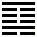

Giới Thiệu
Thân chào Quý Anh Nguyễn Hồng Phúc,
Chúng tôi xin gởi đến Quý Anh Nguyễn Hồng Phúc lá số trọn đời này và luận giải cùng Quý Anh những vấn đề mà Quý Anh đang quan tâm trong lá số. Trong phần bình giải Quý Anh hãy xem kỹ câu nào đúng với mình nhất và bỏ qua những câu không dúng, vì trong phần bình giải chúng tôi nhập rất nhiều lời giải của nhiều hệ phái Tử vi khác nhau và có thể những lời giải sẽ không đồng nhất, cũng giống như Quý Anh đi xem thầy, cũng một ông thầy đó nói đúng cho người này nhưng với người khác thì sai, vì kinh nghiệm mỗi người mỗi khác và sách tử vi cũng có sách nói này sách nói khác trong cùng một trường hợp. Có một số câu bình bị ngược giới tính, ví dụ Quý Anh là Nam nhưng nói khắc chồng thì Quý Anh hãy nghĩ ngược lại là vợ, vì đó là những câu dùng chung cho cả Nam và Nữ.
Về cách xem; ví dụ cung Phu thê của Quý Anh có các sao Thiên Đức, Nguyệt Đức, Đào Hoa thì nói "vợ chồng tốt đôi, tương đắc", nhưng vừa xem xuống dòng tiếp theo thì thấy có các sao Cô Thần, Qủa Tú thì nói vợ chồng "Cô đơn lạnh nhạt"? Quý Anh sẽ hỏi, lúc thì nói tốt, lúc thì nói xấu vậy cái nào đúng? Trả lời là cái nào cũng đúng hết, nếu có sao tốt mà kèm theo sao xấu thì cái sự tốt bị kéo lùi và sao xấu cũng đỡ xấu hơn khi mà cũng có sao tốt kéo lên. Nói đơn giản như chơi bóng đá khi tỷ số là 1:1 thì coi hư huề, còn nếu tỷ số nghiêng về bên nào thì bên đó thắng, do đó hãy lưu ý câu nào thường lập lại nhiều lần ở các sao khác nhau thì có khả năng sảy ra nhất.
Cách để nhận biết sao tốt và sao xấu, trong lá số Tử vi có 12 cung gồm Mệnh,Phụ mẫu,Phúc đức, Điền trạch... và 1 cung Thân được gởi vào 1 trong 12 cung kia, trong mỗi cung sẽ có các sao hiện diện, Các chính tinh sẽ được an ở chính giữa phía trên có font chữ to và rỏ nhất có kèm theo (M)(V)(Đ)(H) phía sau, những chữ viết tắt đó là Miếu địa, Vượng địa, Đắt địa và Hãm Địa, theo thứ tự từ trước ra sau (M)tốt nhất, (V)tốt nhì, (Đ)tốt ba còn (H)là xấu. Và phía dưới chính tinh vừa nói thì có các sao bên trái và phải, bên trái là các sao tốt, bên phải là các sao xấu, những sao được in đậm quan trọng hơn những sao bình thường. Quý Anh còn có thể "nghe tên mà đoán số nhà" các sao, ví dụ các sao như; Đại hao, Phá toái, Tang môn, Kiếp sát, Địa kiếp, Bệnh phù.., nghe tên là biết Hung tinh rồi, Cát tinh không thể nào có các tên hung như vậy được.
Những đoạn bình giải được chúng tôi trính nguyên văn từ sách các sách Tử vi, mà sách thì người ta nhìn lá số để bình giải chứ không nhìn người nên không sợ mất lòng ai, một số câu bình giải có phần mạnh bạo và có thể ảnh hưởng đến danh dự của Quý Anh nếu có ai đó xem cùng, Quý Anh hãy thông cảm vì dó chỉ là những lời bình giải được lập trình để bình lá số chứ không có ý gì khác.
Phần an sao Tử vi này được chúng tôi viết mới hoàn toàn bằng ngôn ngữ web php, dưới sự giám sát chặt chẽ và cố vấn từ các chuyên gia Tử vi của XemTướng.net, và trong thời gian tới chúng tỗi sẽ liên tục cập nhật những thuật toán mới để lá số được bình giải đúng và chính xác nhất. Chúng tôi phục vụ Quý Anh hoàn toàn miễn phí và huy vọng Quý Anh sẽ đáp lại tấm chân tình này bằng cách giới thiệu và chia sẽ trang XemTuong.net lên các mạng xã hội như Facebook để nhiều người cùng biết, nút share ngay phía dưới và hãy làm "ngay và liền" nhé.
Chúc Quý Anh mạnh khỏe, thành công và tìm được điều có ích sau khi Tử vi!
Tổng Quan
Theo cách đánh giá riêng của XemTuong.net, Điểm huyền khí của lá số là 53.9 rất tốt, Quý Anh nên xem kỷ lời giải và ô điểm của từng cung để có cách ứng biến và xử sự tốt trong cuộc sống. Tuy nhiên đây mới chỉ là phần đánh giá sơ bộ giữa sự có mặt và số lượng sao tốt xấu trong từng cung, Quý Anh cần phải xem kỷ lời giải vì phần giải có sự liên hệ xung chiếu cách cục giữa các cung với nhau nữa.
Quý Anh hãy xem thêm bản điểm trong lá số để biết thêm sự tốt xấu giữa các cung.
Mệnh Hỏa Lục Cục ở Dần (Lô Trung Hỏa Lục Cục)
Ý tượng của Lô Trung Hỏa:
- Là người có nhiệt tâm và nhiệt tình.
- Người có bụng dạ lớn thì thành tựu lớn, người có bụng dạ nhỏ thì thành tựu cũng nhỏ.
- Nếu họ dụng tâm theo chính đạo thì phần nhiều sẽ có thành tựu rất lớn, có thể trở thành nhân vật anh hùng; còn người không theo chính đạo thì lực phá hoại cũng mạnh, dễ trở thành là người có vấn đề.
Lai Nhân Cung ở cung Tài Bạch
Là phương thức kiếm tiền ảnh hưởng đến cuộc đời của Quý Anh. "Lai nhân cung" ở tam phương của cung mệnh (mệnh, tài, quan) là thuộc cách tự lập, tự lập cánh sinh, thuộc cung vị ở trạng thái tĩnh.
Phàm lai nhân cung ở các cung mệnh, tài, quan phần nhiều đều thuộc mẫu người tự lập, tay trắng làm nên; cuộc đời khá vất vả, tuy thân cận quý nhân nhưng khó thành người giàu có, đa số xem trọng danh tiếng hơn lợi lộc. Nói một cách khác, dù không có tiền, thâm chí còn kiếm được nhiều tiền nữa là đằng khác, nhưng đều khó giữ được, vì sẽ có nhân tố khác làm cho ra tiền hoặc tổn tài, hao tài, rốt cuộc có thể trở về số không, ví dụ như bị giật nợ, mua nhà cửa. Nếu cung điền trạch lại không tốt, thì không mua được nhà mà còn phải bán nhà; nếu không, dù trong người đang có tiền, ắt cũng sẽ xảy ra chuyện làm hao tài hay phá tài.
Lai nhân cung ở bốn cung mệnh, tài, quan, điền đối với Quý Anh là khá có lợi.
Cân Xương Tính Số:
Số 4 lượng 3
Bẩm sanh tâm trí cực thông minh
Lẫm liệt hiên nhang vượt bất bình
Tài lộc sẵn dành trời đã định
Quý nhân như có ở quanh mình.
Nói chung, Quý Anh có số lượng và số chỉ nầy, thông minh hoạt bát, số được kẻ yêu người mến Có quý nhân giúp đỡ Đến năm 46 tuổI mới được giàu sang sung sướng Số có con đông.
Tổng quan về cuộc đời Quý Anh tuổi Giáp Tý:
Quý Anh tuổi Giáp Tý là người thông minh, ham học hỏi, lại có óc tò mò, thích khám phá, thích tìm hiểu sự việc đến nơi đến chốn... dễ thành công ở các lãnh vực khoa học, nhà báo, nhà văn, kể cả các ngành chuyên môn kỷ thuật. Quý Anh có tính sáng tạo, có tài tiên liệu dễ nắm bắt thời cơ. Trong công việc, nếu ở vị thế lãnh đạo, chỉ huy có thể tạo thành công lớn hơn ở cấp thừa hành.
Bản tính cương trực, khẳng khái, không chịu sự đè ép của cấp trên nhưng lại độ lượng với người dưới. Vì vậy, cuộc sống đã tạo nhiều phước đức nhưng cũng khó tránh khỏi thăng trầm.
Đa phần Quý Anh có nhiều tự tin, muốn là làm, khó ai can ngăn được, khó tránh khỏi va vấp trong việc xây dựng sự nghiệp.
Tiền vận, đã có người giàu to nhưng không nắm giữ được, tha phương lập nghiệp gặp nhiều may mắn. Phải vào trung vận, rút kinh nghiệm từ bản thân, cuộc sống dần ổn định. Càng lớn tuổi càng giàu sang, con cái nên danh.
Tuy mỗi người đều có số phận khác nhau, nhưng không phải do ai đặt để. Tất cả đều tự mình gây tạo. Nếu biết cư xử hợp đạo lý, có lòng thương người, biết tính toán lợi mình, lợi người, sẵn sàng chia xẻ khó khăn với người thì dù có sinh lỗi số cũng gặp nhiều may mắn, sự nghiệp vững vàng, gia đình hạnh phúc. Nếu sinh thuận số mà sống ích kỷ hại nhân thì công danh tài lộc có lên đến tột đỉnh cũng sẽ dễ dàng tan hoại, cuối đời phải trả giá cao. Vì vậy, số phận của mỗi người không bằng được luật Nhân Quả tự nhiên. Người Xưa có câu: "Xưa nay Nhân định thắng Thiên cũng nhiều", nên lấy đó làm phương châm trong cuộc sống, chắc chắn sẽ được tốt đẹp.
Cách Cục Bình Giải
Thất Sát thủ Mệnh, vào các cung Tý Ngọ Dần Thân, cùng với Lộc Tồn, Khoa Quyền Lộc, Tả Hữu, Xương Khúc, Khôi Việt hội hợp chính là cách gọi là Thất Sát Triều Đẩu này. Thất Sát miếu tại cung Dần Thân, vượng địa ở cung Tý Ngọ. Thất Sát tại Thân, mệnh an tại Ngọ gọi là "Triều Đẩu", (Thất Sát) tại Dần, Mệnh an tại Tý gọi là "Ngưỡng Đẩu".
Người có cách này thường mang nhiều sát khí trên mặt, tự mình phát đạt nhưng không tránh khỏi có lần thất bại, hoặc cũng là nguyên nhân mà không ít người bị chết dưới thủ hạ của mình. Người có cách này, da phần hiển đạt về binh nghiệp, chỉ huy quân đội hùng mạnh, tuy không phải là người sáng lập công ty, nhưng cũng là tài năng trong thương giới, chắc chắn đại phú. Có nhiều cát tinh hội hợp, lại có hung tinh hội hợp trở thành phá cách, chủ thường hay thay đổi, lên rất nhanh mà xuống cũng nhanh, thậm chí có lúc phát đạt mà cũng không thể giữ cho lâu dài, kết cục đều là không tốt. Không có cát tinh hội hợp, chỉ là cách bình thường, không có cát tinh nhưng lại có sao hung đồng cung hội hợp, chắc chắn là hạng nghèo hèn, chủ hung ác, tàn tật, bôn ba, phạm tội, lao ngục, tuổi thọ không cao.
Sách Viết:
"Thất Sát triều đẩu, tước lộc vinh xương", ý nói người có cách này được phong tước vị, bỗng lộc cao.
"Thất Sát Dần Thân Tý Ngọ, nhất sinh tước lộc vinh xương" ý cũng giống câu trên.
"Triều đẩu ngưỡng đẩu, tước lộc vinh xương". Ý cả hai cách Triều Đẩu, Ngưỡng Đẩu cũng đều có địa vị, bổng lộc cao.
"Thất Sát thủ Mệnh, miếu vượng, hữu mưu lược, kiến Tử Vi gia kiến chư cát, tất vi đại tướng" là Mệnh Thất Sát miếu vượng là người có mưu lược, gặp Tử Vi thêm nhiều cát tinh, chắc chắn làm đến đại tướng.
"Thất Sát thủ Mệnh, đắc Tả Hữu Xương Khúc củng chiếu, chưởng sinh sát chi quyền, phú quý xuất chúng" là Mệnh Thất Sát, được Tả Hữu Xương Khúc củng chiếu, là người nắm quyền sinh sát, giàu sang tột bực.
"Thất Sát nhập Mệnh Thân cung, kiến cát, diệt tất lịch thụ gian tân" tức là Thất Sát nhập vào cung Mệnh hay cung Thân, tuy gặp cát tinh, cũng có lúc phải chịu gian nan, cùng khổ.
Lộc Tồn thủ Mệnh, tam phương tứ chánh gặp Xương Khúc chiếu, gặp cát tinh, không gặp sát tinh, vô cùng phú quý.
Lộc Mã Giao Trì cáchCung Mệnh hay tam phương tứ chánh có Lộc Tồn (hoặc Hóa Lộc), hợi họp với Thiên Mã. Người nào có cách cục này thường hoạnh phát tại hải ngoại hoặc tiền tài đến từ phương xa, hoàn cảnh thường có thay đổi lớn, thường xuất ngoại, sự nghiệp phải bôn ba vất vã để kiếm tiền,gặp nhiều cát tinh thì sẽ trở thành giàu có.
Cung Thân của Quý Anh an tại Tuất có sao MộChủ về tính trì trệ, cá tính lập dị, kỳ cục, không thích tô vẽ bề ngoài, tiết kiệm keo kiệt, có sở thích sưu tầm, làm việc có kế hoạch, say mê nghiên cứu, làm việc bám sát thực tế, nếu biết sống cởi mở và nỗ lực không ngừng sẽ được tụ tài
Cung Thân của Quý Anh an tại Tuất có sao Tham langLà người chỉ dối trá
Cung Thân đồng cung với cung Tài bạchNgười sinh giờ Thìn hoặc Tuất, có đầu óc làm ăn, giỏi tính toán, khéo quản lý tiền bạc, phần nhiều là người kinh doanh. Nếu tổ hợp tinh hệ mà cát, có thể thành đại phú, cuộc đời phần lớn đều không thiếu tiền xài.
Cung Thân đồng cung với cung Tài bạchPhần nhiều không thiếu tiền tiêu xài, một đời xem trọng việc vận dụng tiền bạc, có đầu óc kinh tế, giỏi tính toán, khéo quản lý tiền bạc. Thường theo ngành kinh doanh buôn bán, nếu tổ hợp sao cát, có thể trở thành đại phú ông; nếu tổ hợp sao hung thì không được vậy, một đời bôn ba vất vả vì tiền, cuộc sống quá gian khổ.
Thân cư cung Tài BạchHậu vận nặng về vấn đề tiền bạc
Cung Thân đồng cung với cung Tài bạchXem trọng giá trị đồng tiền, dễ bị nhân tố kinh tế tác động đến hướng đi của mệnh vận
Cung Mệnh có sao Thiên tài, cung Tài bạch có sao Thiên thọNhư vậy Thiên thọ nằm ở cung Tài bạch thì Quý Anh phải xem xét việc làm của mình ở cung Tài bạch được tốt thì Thiên tài mới có khả năng giúp mình giải họa và tốt đẹp hơn ở cung Mệnh. Làm việc tốt ở đây là kiếm tiền chính đáng, biết dùng tiền đó giúp đỡ gia đình và mọi người. Hai sao Tài và Thọ là hai sao cho biết về thế nhân quả ngay trong cuộc đời này để mỗi người sửa số mạng của mình. Cái nghiệp là do chính mình tạo ra.
Sao Thiên trù ở cung Điền trạch thuộc tam hợp Bào-Ách-ĐiềnAnh em Quý Anh được hưởng phúc lộc của tổ tiên nhiều hơn Quý Anh
Hành của bản Mệnh là Kim Khắc Hành Thiên Mã là MộcHành Mệnh khắc hành của Mã: Xe cộ luôn ở trạng thái hư hao, gây tốn kém cho Quý Anh.
Tuổi Giáp Tý của Quý Anh ứng với quẻ dịch "Sơn Thủy Mông (蒙 méng)" - Ký hiệu quẻ Dịch:
- Chuỗi kết hợp bởi Thượng quái là Cấn và Hạ quái là Khảm
- Quẻ dịch này nói lên ý nghĩa của cuộc đời Quý Anh và Quý Anh phải sống thế nào để có lợi nhất cho cuộc đời mình.
- Ý nghĩa: Muội dã. Bất minh. Tối tăm, mờ ám, không minh bạch, che lấp, bao trùm, phủ chụp, ngu dại, ngờ nghệch
- Lời bàn: Quẻ Mông chỉ thời vận mông lung, mơ hồ chưa rõ rệt, mọi việc không biết đâu là phải trái, không phải là thời cơ để hành động, mà là thời cơ để học tập, tìm người hướng dẫn. Công danh sự nghiệp không có trên quyền lực và trí tuệ chỉ bảo không thể hoàn thành, có cố gắng cũng vô ích. Tài vận không có, khó bề kinh doanh. Xuất hành chưa thuận vì chưa có mục đích rõ ràng. Tình yêu và hôn nhân còn mơ hồ, tìm hiểu chưa kỹ, ít chắc chắn.
Chiêm theo lá số Tử vi để chọn nghề thì Quý Anh thuộc nhóm thực dụng & phồn thực, làm theo thực tế quan sát, tự tin tiến hành nhanh chóng, xây dựng tiện nghị vật chất. Sẽ rất phù hợp và phát triển tốt nếu chọn các nghề như: Kỹ thuật chế tạo máy, y học ngoại khoa, xây dựng, công nghiệp thực phẩm, thẩm mỹ thực hành, thông dịch ngôn ngữ, thương mại...
Nhóm nghiên cứu hậu TL đã đúc kết Theo kinh nghiệm khảo sát thực tế các LKĐ của dòng họ Lê Lã – Hưng Yên.
XemTuong.net nhận thấy điểm huyền khí ở cung Mệnh của Quý Anh trên trung bình, 7 điểm. Quý Anh nên xem kỷ lời giải để biết cách ứng biến phù hợp, ngoài cung Mệnh thì Quý Anh hãy xem thêm 2 cung Quan lộc và Tài bạch vì 2 cung này là bộ tam hợp với cung Mệnh.
Cục Hỏa khắc Mệnh Kim: Quý Anh rất đáng thương, người hay bị môi sinh không thích hợp với mình, sự thành công nếu có đòi hỏi phải trải qua gian khổ.Chi Thủy sinh Can Mộc: Quý Anh do may mắn mà thành công chứ thực lực, khả năng chưa đạt được đến mức độ ấy. Cuộc đời Quý Anh là một chuỗi dài may mắn tiếp nhau để có từ thành công này đến thành công khác
Quý Anh Mệnh Kim hạp màu đen, trắng - kỵ: xanh, đỏ
Để bảo thu bổn mạng, tránh phần nào sự khắc hãm nên dùng màu trắng cho các vật dụng hoặc màu sơn nhà cửa.
Cung Mệnh Quý Anh phi Hóa khoa nhập cung Quan lộcChuyên tâm học hành và làm việc, hòa hợp với bạn học, đồng sự, đồng nghiệp; nên đi làm hưởng lương, công việc thuận lợi, nên theo làm việc trong lãnh vực văn hóa, giáo dục, nghề nghiệp có tính phục vụ; theo con đường học vấn dễ có danh tiếng, việc học phát triển đều, thành tích bình ổn; tự sáng lập cơ nghiệp nên làm với quy mô nhỏ, không nên làm với quy mô lớn, việc làm ăn bình thuận, không có lời to, nhưng cũng không thiếu hụt, chỉ không có trở ngại mà thôi; nếu đi làm hưởng lương, dễ được cấp trên trọng dụng, đề bạt, nâng đỡ; có nghĩ đến chuyện đào hoa, nhưng thông thường chỉ muốn mà thôi, không có hành động.
Cung Mệnh Quý Anh phi Hóa kỵ nhập cung Phu thêChủ về "mắc nợ" người phối ngẫu, vì người phối ngẫu mà vất vả, bị họ hiếp đáp, xem thường. Do Hóa Kỵ chủ về "dính vào" cho nên đối với người phối ngẫu chuyện gì Quý Anh cũng phải lo liệu, như ăn uống, y phục, kiểu tóc, v.v... Mẫu người này nhất định sẽ có người phối ngẫu đến để "đòi nợ".
Cung Mệnh Quý Anh phi Hóa kỵ nhập cung Phu thêCung Mệnh phi Hóa Kỵ nhập cung phu thê, ắt sẽ xung cung quan lộc, biểu thị tinh thần không nặng về sự nghiệp (vì Kỵ xung là chủ về vô duyên)
Cung Mệnh Quý Anh phi Hóa kỵ nhập cung Phu thêKiếm nhiều tiền mà vẫn không đủ chi tiêu: kiếm tiền không đủ để chi tiêu
Cung Mệnh Quý Anh phi Hóa kỵ nhập cung Phu thêLà "mắc nợ" người phối ngẫu hoặc "mắc nợ" hôn nhân, nhất định sẽ có cuộc sống hôn nhân, sẽ rất yêu thương người phối ngẫu, nhưng cũng có nhiều lời than oán, vợ chồng ý kiến khó hòa hợp, không được người phối ngẫu trợ lực; nếu kết hôn sớm, khó sống với nhau đến đầu bạc, thường hay càm ràm, yêu mà rất đau khổ; không nặng tinh thần sự nghiệp, không thể làm ăn, gia đình và sự nghiệp khó lưỡng toàn; sự nghiệp không thuận lợi, thường hay thay đổi việc làm, nên đi làm hưởng lương, không muốn sáng lập cơ nghiệp; tốt nhất là nên có công việc ổn định rồi hãy kết hôn, dễ vì vấn đề tình cảm hoặc gia đình mà dẫn đến tình trạng công việc không được thuận lợi; nặng bệnh nghi ngờ, hay ghen tuông. Nếu lại chuyển phi Hóa Lộc nhập cung mệnh, là ý tượng: vợ chồng ở riêng.
Cung Mệnh Quý Anh phi Hóa kỵ nhập cung Phu thêLà dính chặt, bất kể tốt hay xấu đều theo đuổi một cách cuồng nhiệt, sau khi kết hôn sẽ tranh cãi thị phi
Cung Mệnh Quý Anh phi Hóa lộc nhập cung Phụ mẫu(Tuyến Phụ Tật là tuyến vị Huynh Nô của Tài Bạch, tuyến vị Huynh Nô chủ về thành tựu), cho nên có thể dựa vào Công Thương Nghiệp mà phát lớn tài lợi, làm việc trong giới kinh tế tài chính sẽ có thành tựu nổi bật. Hóa lộc là rực rỡ nhất.
Cung Mệnh Quý Anh phi Hóa lộc nhập cung Phụ mẫuHiếu thảo với cha mẹ, sống chung vui vẻ với cha mẹ, được trưởng bối yêu thích, đề bạt, nâng đỡ; có cách cục làm doanh nhân, công chức, thăng tiến nhanh; vận thi cử tốt, thành tích tốt.
Cung Mệnh Quý Anh phi Hóa quyền nhập cung Nô bộcKhông tùy tiện giao du bạn bè, mà rất chọn lựa, tiêu chuẩn hơi cao, nhưng đã giao du thì rất trung thành, không bao giờ bán đứng bạn bè; thích lãnh đạo người khác, sẽ được bạn bè hỗ trợ, thích hợp kiếm tiền ở những nơi náo nhiệt, như nghệ thuật biểu diễn.
Cung Mệnh Quý Anh phi Hóa quyền nhập cung Nô bộcLà có yêu cầu rất cao về sức khỏe của người phối ngẫu
Cung Mệnh của Quý Anh an tại Dần có sao Thiên mã- Người có tài năng, hoạt bát, mẫn tiệp, nhanh nhẹn, lanh lợi, chủ sự hoạt động, di chuyển nhiều
Cung Mệnh của Quý Anh an tại Dần có sao Lộc Tồn- Tính Tình: Người thông minh, học rộng, có tài tổ chức, sáng kiến, đứng đắn, tính nhân hậu, từ thiện.
Công Danh Tài Lộc:
Lộc Tồn là sao phú, chủ sự dư về tiền bạc. Ý nghĩa công danh chỉ là thứ yếu. Sự giàu có thường do hai nguyên nhân:
Do di sản tổ phụ để lại: Người có Lộc Tồn ở Mệnh, Phúc bao giờ cũng được hưởng của tổ phụ, nhiều khi truyền kiếp, lưu truyền đến hai, ba đời.
Do người khác biếu xén: Lộc Tồn chỉ sự có "lộc ăn" được người khác ban tặng, giúp đỡ.
Lộc Tồn mang nặng ý nghĩa về tiền bạc, Lộc Tồn đi với các sao tài sẽ hết sức phát đạt. Đó là các sao:
Chính tinh: Tử Vi, Vũ Khúc, Thiên Phủ đắc địa.
Phụ tinh: Thiên Mã, Tràng Sinh, Đế Vượng, Hóa Lộc, Long Trì, Phượng Các, Tả Phù, Hữu Bật, Ân Quang, Thiên Quý, Thiên Quan, Thiên Phúc.
Tùy theo sự hội tụ ít nhiều với các sao trên, thế lực tài phiệt sẽ gia tăng mức độ.
Phúc Thọ Tai Họa:
Sao Lộc Tồn chế ngự được tất cả các sao chủ dâm đãng, lả lơi, được hưởng của tiền nhân hoặc hay gặp quý nhân giúp đỡ.
Sao Lộc Tồn ở Mệnh thì vinh hiển, sống lâu.
- Người điềm đạm, khiêm nhường, ưa thích sự thanh nhàn, yên tĩnh. Sao này gặp nhiều sao tốt thì tốt thêm, gặp nhiều sao xấu thì xấu lắm.
Tam hợp cung Mệnh có các sao Trường sinh, Đế vượng, MộKhuyên về nhân quả: Lúc sống thì đoàng hoàng, ngay thẳng; khi chết, mộ được yên (không ai chửi)
Tam hợp cung Mệnh có Lộc Tồn(Bác sỹ), Tướng Quân(Quốc Ấn), Bệnh PhùQuang minh, nhân hậu, hiên ngang (Lộc, Bác, Tướng, Ấn), dẫu có suy tàn (Bệnh Phù)
Tam hợp cung Mệnh an tại Dần có các sao Cô thần,Quả tú hội hợpChỉ thích ở một mình, không thích đông người
Tam hợp cung Mệnh an tại Dần có các sao Điếu khách,Tang môn,Tuế phá hội hợp- Ở vị trí xung phá, đối kháng với Thái tuế nên thường chống đối bằng các phương tiện
- Gặp khó khăn trong việc đạt chí nguyện trong đời; thường làm là những công việc không đúng sở nguyện
- Nhưng thông minh, tháo vát, hoạt động (vì mạng ở thế đối kháng Thái tuế thường có thiên mã)
Bất luận Thất Sát, Phá Quân, hay Tham Lang độc tọa, hoặc có sao khác đồng cung, phần nhiều đều có mệnh vất vả. Tuy nói tính chất tham, sân, si của Sát, Phá, Tham là thuộc loại thượng đẳng, nhưng họ cũng khá có lí tính và cảm tính, là người bộc lộ thẳng thắn, không đạo đức giả. Thường thường họ là nhà hành động chớ không phải là nhà lí luận chỉ nói suông, cho nên người Sát, Phá, Tham thủ mệnh bất luận là về diện mạo, cá tính, nghề nghiệp hay biểu hiện trong thế giới tình cảm thường sẽ tuôn ra hết, mặc kệ tất cả. Cung mệnh có tổ hợp tinh hệ này, nếu có thêm Văn Khúc, họ là người có hào khí ngút trời, trong phong thái quyến rũ họ còn điểm xuyết chút tình cảm êm ái triền miên.
Tam hợp cung Mệnh an tại Dần có các sao Phá quân,Tham lang,Thất sát hội hợpKhá độc lập, năng lực phán đoán tốt, không thích bị ước thúc, có tác phong rất quả quyết, mà còn hành động theo tính tự nhiên. Lúc người này trong ngoài giữ được thăng bằng, thường thường cũng là lúc đang ở trong vận trình thắng lợi; trước đó, rất có thế Quý Anh gặp rất nhiều trắc trở, dễ xung động và có hành động lỗ mãng, liều lĩnh vô ích.
Tam hợp cung Mệnh an tại Dần có các sao Phá quân,Tham lang,Thất sát hội hợpLà người có năng lực khai phá lãnh vực mới, tạo ra thành tích trong sự nghiệp, có tinh thần dũng cảm xung phong phá trận, thường đối mặt trực tiếp với tình hình thành bại, giỏi ứng biến, có đảm lược, tác phong rất quả quyết. Cho nên thích đầu cơ hay đầu tư kiểu ngắn hạn, hoặc chớp thời cơ đang thịnh hành. Ba sao này đầy sức sống, rất kị gặp Văn Khúc đồng cung. Tham Lang gặp Văn Khúc, tính chất không được tinh thuần, sẽ biến thành khoa trương phù phiếm; Phá Quân gặp Văn Khúc, sẽ mang tất cả thành quả đã nỗ lực có được thảy vào ngọn lửa, nguyên nhân là do đánh giá sai tình hình, hoặc vì người khác giới mà phá sạch! Nếu cung mệnh của bạn thuộc nhóm Sát Phá Tham, thì bạn có đảm lược và kiến thức hơn người, có khí phách và giữ vững lập trường, không thỏa hiệp; tài vận rất dễ lên xuống thất thường, thích hợp đầu tư vào những lãnh vực có tính mạo hiểm cao, lợi nhuận cao. Trong tình thế nghịch, bạn có thao tác rất tốt, nhưng phải có manh mối và cơ hội, hơn nữa còn phải có thông tin chính xác. Điều quan trọng là phải biết đủ, thấy được rồi thì dừng; nếu quá tham lợi nhuận cao, dốc túi đánh một trận, một khi thất bại thì khó mà đứng dậy. Đây là nhóm mệnh cách giỏi xông xáo trong các tình cảnh rối ren, trong lúc người ta đầu tư "theo hướng giá lên" thì họ đầu tư "theo hướng giá xuống".
Tam hợp cung Mệnh an tại Dần có các sao Phá quân,Tham lang,Thất sát hội hợpMẫu phụ nữ này phần nhiều đều rất mạnh mẽ, giỏi giang, dũng cảm đột phá truyền thống, không sợ cái nhìn của thế tục, thậm chí trong các cuộc tranh luận họ có thể chiếm thượng phong, nên rất có khá năng lấy chồng nhỏ tuổi hơn mình.
Tam hợp cung Mệnh an tại Dần có các sao Phá quân,Văn xương hội hợpLên voi xuống chó
Tam hợp cung Mệnh an tại Dần có các sao Thiên mã,Trường sinh hội hợpLà số được nhiều may mắn, làm qua thì nhẹ bước thang mây, rồng mây gặp hội
Sao Lộc tồn ở Mệnh nhưng tuổi Giáp Tí không được hưởng Lộc Tồn- Đương số cũng được hưởng Lộc Tồn. Nhưng phải coi chừng: Lộc hưởng là Lộc bất thường, hoặc không ngay chính, cho nên được Lộc mà rồi bị tán hết, có khi được Lộc mà rồi gặp tai họa.
- Cũng có trường hợp Lộc tồn cần được duy trì như một yếu tố cứu giải thì lại xài hết ảnh hưởng của nó bằng sự hưởng tiền, cho nên đương số hết yếu tố cứu giải, đành phải chịu họa.
Cô độc: Cô độc, cao ngạo; vợ hoặc chồng mất trước; con cái đi xa, lục thân khó nhờ cậy, giao thiệp với người ít lễ nghĩa, quan hệ nhân tế không tốt, thường tự cách ly mình với xã hội, nhân quần và thần hữu để đến nỗi không có người tri tâm tri kỷ. Vậy tại sao người này lại cô độc? Ngoài cô độc thuộc trong mệnh mà ra:
1. Nói năng không lễ phép, thích a dua, nói bậy, nói lời châm chọc, bới lông tìm vết...
2. Xem người khác không ra gì
3. Vẻ bề ngoài khó gây thiện cảm, hành vi quái gở
4. Không hòa hợp với người xung quanh
5. Hay sầu não
6. Tự tư, keo kiệt, sống chỉ biết có mình
7. Thiếu lòng bác ái, không biết chia sẻ, bố thí
8. Cô độc và nghèo khó, thật bất hạnh thay là trong xã hội hiện nay những người cô độc ngày càng chiếm nhiều.
Có khả năng xảy ra các tình huống sau:
1. Cha hoặc mẹ mất sớm
2. Cha mẹ ly hôn
3. Do người khác, như bà ngoại, bà cô hoặc bà nội nuôi dưỡng
4. Thích du chơi bên ngoài, không thích ở nhà (cho nên lấy vợ thì không nên lấy người có sao Cô Thần, Quả Tú tọa mệnh, vì họ không chịu ở yên).
Khắc vợ khắc chồng, là người cô độc, cố chấp, phiêu bạt, lang thang, lục thân không đỡ đần, người gầy khô, hình tượng cô hàn, hai má hóp lại, là người khó gần, rất bi quan tiêu cực, không chịu ở nhà, tâm lý thất thường, mệnh nam rất kỵ có Cô Thần tọa Mệnh
Cung Mệnh của Quý Anh an tại Dần có sao Cô thầnLy dị vợ
Cung Mệnh của Quý Anh an tại Dần có sao Cô thầnNếu không ly hôn thì cũng chồng mất
Cung Mệnh của Quý Anh an tại Dần có sao Cô thầnPhòng phu: Mệnh nữ bất lợi cho chồng, chẳng hạn như sau khi lấy chồng thì sự nghiệp hoặc sức khỏe của chồng sa sút, người xưa gọi là "tảo phụ tinh"
Cung Mệnh của Quý Anh an tại Dần có các sao Đà la,Hỏa tinh,Kình dương,Linh tinh hội hợpDễ bị tật như còng lưng
Cung Mệnh của Quý Anh an tại Dần có sao Địa kiếp tọa thủ và các sao Đào hoa,Hồng loan hội hợpĐau khổ vì tình, tan tác vì tình duyên
Cung Mệnh của Quý Anh an tại Dần có các sao Hỏa tinh,Linh tinh hội hợpChủ về cuộc đời chìm nổi, đặc biệt là bất lợi lúc còn nhỏ tuổi, nhưng nếu có cát tinh thì chủ về làm quân nhân cảnh sát mà thành danh, hoặc bạo phát
Cung Mệnh của Quý Anh an tại Dần có các sao Hữu bật,Tả phù hội hợpChủ về có năng lực lãnh đạo, giỏi biết người và khéo dùng người, được mọi người trợ giúp. Song có khi lại chủ về tính ỷ lại hơi mạnh, nhờ người giúp đỡ mà bản thân lại không có tài năng. Ngoài ra, ở cung mệnh cũng chủ về bụng dạ rộng rãi, khoáng đạt, lỗi lạc bất phàm, tính cách đôn hậu, hào sảng. Càng mừng nếu gặp được Thiên Khôi, Thiên Việt, Văn Xương, Văn Khúc.
Cung Mệnh của Quý Anh an tại Dần có các sao Hữu bật,Tả phù,Văn khúc,Văn xương hội hợpViết văn làm thơ
Cung Mệnh của Quý Anh an tại Dần có sao Lộc tồn"Lộc" là tài lộc, "Tồn" là bảo tồn. Lộc tồn là chủ về lợi cho tài vận. Nhưng vì 2 cung kế cận của Lộc Tồn là sát tinh Kình Dương và Đà La, tức là hai sát tinh giáp cung, vì vậy mà có ảnh hưởng bất lợi. Cho nên Lộc Tồn ở trong cung Mệnh, ngược lại thường chủ về việc trọng thị lợi ích cá nhân quá độ mà dẫn tới ích kỷ, keo kiệt.
Cung Mệnh của Quý Anh an tại Dần có sao Lộc tồnChủ về mặt hơi tròn, cằm tròn; hội sát tinh thì có dáng cô độc; hội Thiên Mã thì trán vuông mà đầy đặn.
Cung Mệnh của Quý Anh an tại Dần có sao Lộc tồnCó của cải do tiền nhân để lại
Cung Mệnh của Quý Anh an tại Dần có sao Lộc tồnCó thể được hưởng sản nghiệp của ông cha
Cung Mệnh của Quý Anh an tại Dần có sao Lộc tồnDanh lợi song toàn
Cung Mệnh của Quý Anh an tại Dần có sao Lộc tồnLà người đầy đặn sống sung túc, lợi lộc vô số
Cung Mệnh của Quý Anh an tại Dần có sao Lộc tồnLà người đoan chính
Cung Mệnh của Quý Anh an tại Dần có sao Lộc tồnLà người giàu khó và khéo giữ gìn
Cung Mệnh của Quý Anh an tại Dần có sao Lộc tồnNhiều bổng lộc
Cung Mệnh của Quý Anh an tại Dần có sao Lộc tồnTham nhưng đôn hậu
Cung Mệnh của Quý Anh an tại Dần có sao Lộc tồnThân hình đầy đặn, tiền bạc sung túc nhất là đối với nữ mạng
Cung Mệnh của Quý Anh an tại Dần có sao Lộc tồn tọa thủ và các sao Cô thần,Quả tú hội hợpLà người cô đơn, xung khắc cha mẹ, vợ con hay anh em
Cung Mệnh của Quý Anh an tại Dần có các sao Lộc tồn,Thiên mã hội hợpDễ tạo cảm tình với người chung quanh. Học hành đỗ đạt cao.
Cung Mệnh của Quý Anh an tại Dần có các sao Lộc tồn,Thiên mãCó cách Lộc, Mã giao trì lên giàu có
Cung Mệnh của Quý Anh an tại Dần có các sao Lộc tồn,Thiên phủ,Tử viSuốt đời phúc hậu, chức đến tam công
Cung Mệnh của Quý Anh an tại Dần có các sao Lộc tồn,Thiên mã,Vũ khúcGiàu có nơi tha hương
Cung Mệnh của Quý Anh an tại Dần có sao Lộc tồn tọa thủ và các sao Triệt,Tuần hội hợpCơ nghiệp tan tành
Cung Mệnh của Quý Anh an tại Dần có các sao Lộc tồn,Văn khúc,Văn xương hội hợpCó tiền tài, địa vị
Cung Mệnh của Quý Anh an tại Dần có các sao Phong cáo,Thai phụ hội hợpẮt là người có công danh được phong tặng, hiển đạt, dương danh cha mẹ, tổ tiên
Cung Mệnh của Quý Anh an tại Dần có sao Tang mônLà người rất sầu khổ, ở nơi huyên náo vui vẻ cũng lãnh đạm
Cung Mệnh của Quý Anh an tại Dần có sao Tang mônTâm chất luôn sầu khổ, ngay cả trong chỗ vui
Cung Mệnh của Quý Anh an tại Dần có sao Tang mônTư cách: Là người bất mãn, không thoải mái. Người ta cho công việc này lại muốn công việc khác, không bao giờ thỏa mãn cho tới khi nhắm mắt xuôi tay vẫn chưa thoải mãn.
Cung Mệnh của Quý Anh an tại Dần có sao Thất sát đơn thủ- Ưu điểm: Thông minh, mẫn tiệp, nặng lí trí, tính toán cẩn thận, trí dũng song toàn.
- Khuyết điểm: Hấp tấp, nóng nảy, phản nghịch hay thay đổi bất thường.
Lúc họ phấn khởi kể lại những kì công của mình, bạn đừng bao giờ làm họ mất hứng; nếu bạn làm vậy thì phải cẩn thận, coi chừng tình yêu nửa đường bị "tắt lửa". Đừng suốt ngày làm phiền họ, phải làm cho họ biết rằng, điều bạn quan tâm nhất là chính họ, nhưng đừng làm họ nhàm chán, mà phải "nắm giữ" họ cho đúng cách, làm theo kế "muốn bắt giữ thì hãy thả ra trước", có thái độ hơi "đeo đính" họ nhưng cũng đừng "đeo dính" quá.
Cung Mệnh của Quý Anh an tại Dần có sao Thất sát đơn thủSuốt đời tước lộc
Cung Mệnh của Quý Anh an tại Dần có sao Thất sát đơn thủThường lầm lì có uy quyền
Cung Mệnh của Quý Anh an tại Dần có sao Thất sát đơn thủThường lầm lì
Cung Mệnh của Quý Anh an tại Dần có sao Thất sátĐược hưởng phú quý và tuổi thọ cũng gia tăng
Cung Mệnh của Quý Anh an tại Dần có sao Thất sátĐược hưởng phúc đức hoàn toàn
Cung Mệnh của Quý Anh an tại Dần có sao Thất sátLà lấy tiền của người làm của mình
Cung Mệnh của Quý Anh an tại Dần có sao Thất sátLà người độc ác, lòng lang dạ thú, khắc chồng hại con, thường có nhiều tật bệnh, suốt đời lao khổ, lại hay mắc tai nạn và không thể sống lâu được
Cung Mệnh của Quý Anh an tại Dần có sao Thất sátLà người tài giỏi, đảm đang, gan góc và hay ghen tuông. Tuy được hưởng giàu sang, sống lâu nhưng phải muộn lập gia đình mới tránh khỏi được những nỗi ưu phiền đau đớn và chồng con.
Cung Mệnh của Quý Anh an tại Dần có sao Thất sátNàng là người túc trí đa mưu, chủ quan và ở thế mạnh, là mẫu phụ nữ mạnh mẽ không chịu thua đàn ông; về tính cách cũng thuộc loại nặng lí tính hon cảm tính, không giỏi trong chuyện tình trường nhi nữ. Nhưng mẫu người mà nàng yêu hoặc dễ chiếm được trái tim của nàng rất có thể là người có khi chất nam nhi hay một người đàn ông tuấn tú, biết quan tâm chăm sóc và dịu dàng. Biểu hiện bề ngoài hoặc về cá tính, có thế hai người có một khoảng cách khá xa, mà phong cách hành sự của hai người cũng rất khác nhau, bất kể thế nào, nhiều chỗ ở hai người đều dễ khiến cho người kia cảm thấy không hợp.
Cung Mệnh của Quý Anh an tại Dần có sao Thất sátNgười vừa phải, tính cương cường, lúc mừng lúc giận thất thường, có mưu mẹo giỏi, nhưng tính nóng
Cung Mệnh của Quý Anh an tại Dần có sao Thất sátOan trái, rơi lệ vì tình
Cung Mệnh của Quý Anh an tại Dần có sao Thất sátRất can đảm, dũng mãnh, thông minh, có nhiều mưu cơ, lại thêm tính cương nghị, hiếu thắng và nó đại ngôn nhưng được nhiều người tin phục tuy hưởng giàu sang sống lâu nhưng trên đường đời gặp nhiều bước thăng trầm
Cung Mệnh của Quý Anh an tại Dần có sao Thất sátSắc mặt hồng vàng, hoặc vàng trắng; khuôn mặt phần nhiều vuông dài mà hơi gầy. Thân người trung bình, mập gầy bất nhất. Mắt lớn, nhãn thần phần nhiều không giận mà có uy; tính nóng vội, bề ngoài thì ra vẻ quyết đoán, nhưng nội tâm thì do dự.
Thất Sát hội họp với sao cát, nhãn thần có uy mà sắc bén.
Nếu có tứ sát tinh cùng chiếu, lại gặp các sao hình kị, phần nhiều thân người có tổn thương, tàn tật. Cổ nhân cho rằng chủ về lưng gù. Theo kinh nghiệm của Vương đình chỉ, lúc nhỏ còn dễ mắc bệnh sốt tê liệt mà dẫn đến tàn tật.
Sống lâu
Cung Mệnh của Quý Anh an tại Dần có sao Thất sátTài quan song mỹ
Cung Mệnh của Quý Anh an tại Dần có sao Thất sátTất được hưởng phú quý tới tột bậc
Cung Mệnh của Quý Anh an tại Dần có sao Thất sátThân hình nở nang, hơi cao nhưng thô xấu, da đen hay đen giòn, mặt thường có vết, mắt to và lồi, tính ương ngạnh, nóng nảy, làm việc gì cũng muốn cho chóng xong
Cung Mệnh của Quý Anh an tại Dần có sao Thất sátTrai gặp vợ hiền
Cung Mệnh của Quý Anh an tại Dần có sao Thất sát tọa thủ và các sao Đà la,Hỏa tinh,Kình dương,Linh tinh hội hợpTất bị gù lưng hay có có tật ở sau lưng và nếu ra trận chắc chắn mạng vong
Cung Mệnh của Quý Anh an tại Dần có sao Thất sát tọa thủ và các sao Đại hao,Hỏa tinh hội hợpThật khó tránh được những tai nạn khủng khiếp
Cung Mệnh của Quý Anh an tại Dần có sao Thất sát tọa thủ và các sao Hỏa tinh hội hợpSố không thọ, thường hung tử
Cung Mệnh của Quý Anh an tại Dần có sao Thiên mãChủ về thân người trung bình, không gầy; góc trán nhô cao và đầy
Cung Mệnh của Quý Anh an tại Dần có sao Thiên mãLà người siêng năng nhiều tài cán
Cung Mệnh của Quý Anh an tại Dần có sao Thiên mãNếu kèm thấy Lộc Tồn thì làm ăn buôn bán có lợi; không kèm thấy Lộc Tồn thì cuộc đời nhiều biến động
Cung Mệnh của Quý Anh an tại Dần có sao Thiên mãXoay sở làm việc giỏi
Cung Mệnh của Quý Anh an tại Dần có sao Thiên mã tọa thủ và các sao Điếu khách,Thiên khốc hội hợpLàm nên danh giá, lừng lẫy
Cung Mệnh của Quý Anh an tại Dần có sao Thiên mã tọa thủ và các sao Hỏa tinh hội hợpKhông lên đi xa
Cung Mệnh của Quý Anh an tại Dần có sao Thiên mã tọa thủ và các sao Thiên hình,Thiên khốc hội hợpVào nghiệp võ phát công danh
Cung Mệnh của Quý Anh an tại Dần có các sao Thiên mã,Trường sinhCông danh bị trắc trở
Cung Mệnh của Quý Anh an tại Dần có các sao Thiên mã,Trường sinhGặp nhiều may mắn và làm lên dễ dàng (cách Mã ngộ Trường sinh)
Cung Mệnh của Quý Anh an tại Dần có các sao Thiên mã,Trường sinhNhiều may mắn dễ dàng
Cung Mệnh của Quý Anh an tại Dần có sao Thiên mã tọa thủ và các sao Tuần hội hợpCả đời ở xứ ngoài
Cung Mệnh của Quý Anh an tại Dần có sao Thiên tài tọa thủ và các sao Văn khúc,Văn xương hội hợpTrí tuệ vượt thiên hạ
Cung Mệnh của Quý Anh an tại Dần có sao Trường sinhĂn nói khôn ngoan
Cung Mệnh của Quý Anh an tại Dần có sao Trường sinhKhỏe mạnh, ít vận hạn, ra đời ở thế khác ngay
Cung Mệnh của Quý Anh an tại Dần có sao Trường sinhThọ
Cung Mệnh của Quý Anh an tại Dần có sao Trường sinhTính tình ôn hòa thuần hậu, thông minh sôi nổi, hiên ngang khảng khái, có tài hoa, dễ gây thiện cảm, tài năng được khẳng định, rộng đường thăng tiến, nhưng thiếu quả quyết, nên đảm nhiệm chức vụ trợ lý, phụ tá sẽ phát huy được khả năng tốt hơn là lãnh đạo. Là nữ mệnh thích lý luận nhưng vẫn được mọi người yêu mến.
Cung Mệnh của Quý Anh an tại Dần có các sao Văn khúc,Văn xương hội hợpCó duyên và phong nhã, đàn bà nhan sắc
Cung Mệnh của Quý Anh an tại Dần có các sao Văn khúc,Văn xương hội hợpHiếu học và đa năng
Cung Mệnh của Quý Anh an tại Dần có các sao Văn khúc,Văn xương hội hợpLà người đa học, đa năng
Cung Mệnh của Quý Anh an tại Dần có các sao Văn khúc,Văn xương hội hợpLà sao văn, tính chất cơ bản chủ về tài học, năng lực học tập; cũng chủ về khí chất văn nhã, đa sầu đa cảm, hoặc tính phong lưu
Cung Mệnh của Quý Anh an tại Dần có các sao Văn khúc,Văn xương hội hợpNgười đẹp và học giỏi
Cung Mệnh Quý Anh an tại Tí được sinh nhậpTính tình kỹ lưỡng, cẩn thận trong việc làm, có thứ tự, ít chịu buông thả, đãi đàng người quen (từ ngoài sinh vào mình thì tính mình là tính vơ vào)
Cung Mệnh Quý Anh an tại Tí thuộc tứ chínhĐầy đủ sức khỏe, tinh thần cương quyết
Cung Mệnh ở đất Tứ Mã: Dần, Thân, Tị, HợiGọi là "Tứ Sinh" chính là 4 cung vị đều ở đất Trường Sinh, còn gọi "Tứ Mã" là vì Thiên Mã chỉ ở 4 cung vị này, cho nên 4 cung vị Dần, Thân, Tị, Hợi được gọi là đất Tứ Sinh hay Tứ Mã. Người cung mệnh ở 4 cung vị này sẽ có đặc chưng gì? Phần lớn đều thuộc mẫu người không chịu ngồi yên, bôn ba, hành động mau lẹ mẫn tiệp, khá xem trọng tài lợi, quan niệm kiếm tiền khá uyển chuyển, rất nhạy bén trong việc ngửi thầy mùi tiền. Trong đó, cổ nhân đánh giá khá cao người có mệnh tọa ở cung Dần và cung Hợi, gọi cung Dần là "Sơn Đầu" (đầu ngọn núi), còn gọi Hợi là "yếu địa" (đất trọng yếu). Tức là nói, nam nữ tọa mệnh ở 2 cung vị này thường là phú quý song toàn. Bất luận nam nữ, cá tính độc lập, sẽ có tạo tác lớn lao; cho nên gặp người cung mệnh tọa lạc ở cung Dần hoặc cung hợi, thì không lên xem thường, có thể họ sẽ thành đại phú gia, hoặc có thành tựu lớn!
Người tọa Mệnh ở cung DầnChiếm đa số là mẫu người lao tâm, không cách nào ngồi yên ở nhà; trong nghề nghiệp, họ thích công việc có tính đầu tư hay cổ đông hợp tác; họ là người thích dựa vào kế hoạch để thực hiện; nhiều vất vả nhưng cũng khá lạc quan quan. Thông thường, họ không chịu yên phận làm việc hưởng lương, cũng không thích hợp làm nhân viên công chức. Một khi họ xuất hiện ở cấp chủ quản, thì khá kiệt xuất ở các lãnh vực như kinh doanh về truyền thông, chế tạo, hàng không, giao thông, vận chuyển hàng hóa, trong đó cũng có không ít tướng lãnh cao cấp.
Mệnh - Tài - Quan ở 3 cung Dần - Ngọ - Tuất (thuộc cách liên hợp Thái tuế - Quan phù - Bạch hổ)Thuận lợi khá, chỉ toại nguyện tương đối
Mệnh - Tài - Quan ở 3 cung Dần - Ngọ - Tuất (thuộc cách liên hợp Thiếu âm - Long đức - Trực phù)Nhẫn nhịn để có thu hoạch tối thiểu
Mệnh - Tài - Quan ở 3 cung Dần - Ngọ - Tuất (thuộc cách liên hợp Thiếu dương - Tử phù - Phúc đức)Tuy thuận lợi nhưng không lâu bền
Mệnh - Tài - Quan ở 3 cung Dần - Ngọ - Tuất (thuộc cách liên hợp Tuế phá - Điếu khách - Trực phù)Khó nhọc nhiều, mới toại nguyện được 70%
XemTuong.net nhận thấy điểm huyền khí ở cung Phúc đức của Quý Anh tương đối tốt, 10 điểm. Quý Anh nên xem kỷ lời giải để biết cách ứng biến phù hợp, ngoài cung Phúc đức thì Quý Anh hãy xem thêm 2 cung Thiên di Phu thê vì 2 cung này là bộ tam hợp với cung Phúc đức.
Cung Phúc đức Quý Anh phi Hóa khoa nhập cung Quan lộcĐối với công việc hay sự nghiệp, trước khi hành động đều có kế hoạch, không gấp gáp xông tới, mà đi từng bước, dễ được quý nhân giúp đỡ, đề bạt, cũng dễ có thanh danh.
Cung Phúc đức Quý Anh phi Hóa kỵ nhập cung Nô bộcLà người hay tính toán, so bì
Cung Phúc đức Quý Anh phi Hóa kỵ nhập cung Nô bộcTư tưởng cực đoan, dễ tranh chấp với người khác, hay so đo tính toán. Không hòa hợp với bạn bè đồng sự. Duyên phận bạc với anh chị em, anh em không gần gũi, trong nhà bất hòa, dễ xảy ra tình trạng tranh giành gia sản. Không nên cho người ta vay để lấy lãi. Sự nghiệp của người phối ngẫu không kiếm được tiền, không đủ chi dùng trong gia đình. Quan hệ hôn nhân không hòa điệu, khó trò chuyện trao đổi với nhau.
Cung Phúc đức Quý Anh phi Hóa lộc nhập cung Tài bạchCó thể bồi dưỡng tri thức cho thị hiếu sở thích của bản thân để thành phương tiện kiếm tiền, kết hợp công việc với thị hiếu sở thích thành một. Có phúc ấm của tổ tiên, có tổ nghiệp, được trợ lực. Kiếm tiền nhẹ nhàng, vui vẻ, vợ chồng có phúc cùng hưởng.
Cung Phúc đức Quý Anh phi Hóa lộc nhập cung Tài bạchLà tiêu tiền tiêu thụ bên ngoài
Cung Phúc đức Quý Anh phi Hóa quyền nhập cung Tật áchĐược hưởng gene di truyền tốt, cơ thể cường tráng, công năng tính dục khỏe mạnh, hiếu sắc, không biết tiết chế. Người phối ngẫu vất vả vì công việc mà không than oán, quá lao lực làm ảnh hưởng đến sức khỏe.
Cung Phúc Đức của Quý Anh an tại Thìn có các sao Đào hoa,Hồng loan,Phục binh,Thiên tướng hội hợpTrong họ có nhiều con gái bất chính
Cung Phúc Đức của Quý Anh an tại Thìn có sao Hoa cái(Âm phần) Đất có hình giống như bông hoa nở, giống như cái lọng xòe hay cái bát úp
Cung Phúc Đức của Quý Anh an tại Thìn có sao Hóa khoa(Âm phần) Hình đất giống như cái bảng
Cung Phúc Đức của Quý Anh an tại Thìn có sao Hóa khoaChủ về người không cầu hưởng thụ
Cung Phúc Đức của Quý Anh an tại Thìn có sao Hóa khoaChủ về nhiều phúc vận, lạc quan, ưa hưởng thụ, tình trạng kinh tế phần nhiều có thể cân bằng giữa nhập và xuất
Cung Phúc Đức của Quý Anh an tại Thìn có sao Hóa khoaCó thể sống với nhau đến bạc đầu, giữa vợ chồng với nhau rất ít khi xúc phạm nhau nghiêm trọng, dù có cãi vã, tranh chấp, sau đó cũng giao lưu với nhau mà làm lành như cũ, huống hồ nam nữ vai chính đều là người khá xem trọng vấn đề sĩ diện.
Thái độ xử sự của Quý Anh thiên về lí tính hơn là cảm tính, chuyên chú vào sự nghiệp hoặc sự việc đang nghiên cứu, cho nên thường có kiến giải khách quan mà không đột ngột, do đó Có thể làm cho hôn nhân hòa hợp, ít thấy đột nhiên xung kích. Dù gặp cảnh khó khăn cũng Có thể dựa vào trí tuệ của mình và trợ lực của bậc trưởng bối mà hóa hung thành cát, dù hai người không được chúc phúc, nhưng chỉ cần hôn nhân xác lập thì Có thể thấy hòa hợp hạnh phúc!
Được hưởng phúc sống lâu, tránh được nhiều tai họa, họ hàng khá giả, có người đỗ đạt cao
Cung Phúc Đức của Quý Anh an tại Thìn có sao Hóa khoaDưới đây xin tóm tắt các ý tượng cơ bản của trường hợp Hóa Khoa [năm sinh] ở cung phúc đức như sau:
(1) Cung phúc đức là cung vị chủ về Quý Anh có được hưởng phước hay không, do đó có thể dùng để đoán bình thường Quý Anh có được hưởng thụ hay không? Tâm cảnh có yên bình hay không? Cung phúc đúc là cung vị chủ về hứng thú, thị hiếu ... của thân tâm, trường hợp có Hóa Khoa, chủ về Quý Anh là người rất hiểu biết ý vị tình cảm trong cuộc sống, phẩm vị của thị hiếu cũng cao, có thể dựa vào lạc thú cuộc sống để điều chỉnh tâm tình của bản thân cho thích hợp.
(2) Cung phúc đức là khu vực trước của cung tài bạch, còn cung tài bạch là nơi biểu đạt lời nói cử chỉ, cho nên cung phúc đức có thể xem là động tâm khởi niệm trước khi biểu hiện lời nói và hành động, cũng có thể xem là nơi hi vọng lời nói và hành động đạt được hiệu quả. Trường hợp Hóa Khoa ở cung phúc đức, là chủ về cách suy nghĩ và động niệm của người này đều khá đúng đắn, nhưng có biểu hiện như vậy hay không thì phải xem cung tài bạch.
(3) Hóa Khoa có tác dụng trật tự hóa, ổn định cuộc thế khá chậm, cho nên lúc phải quyết định chọn lựa một sự kiện quan trọng, Quý Anh sẽ suy nghĩ kĩ lưỡng và quy hoạch cẩn thận; vì là cung chi viện cho cung tài bạch, nên thông thường là cần phải suy nghĩ kĩ lưỡng và quy hoạch cẩn thận trong môi trường làm việc. Cũng vì nhân tố này mà người cung phúc đức thấy Hóa Khoa rất thích hợp làm những công việc như lập kế hoạch, tham mưu, phụ tá, thư kí thân tín quan trọng.
(4) Bởi vì cung phúc đức ở cung vị thiên di của cung tài bạch, thảy đều thuộc "ngã cung", cho nên trong Đẩu Số, cung phúc đức và cung tài bạch có thể tương thông với nhau. Trường hợp cung phúc đức có Hóa Khoa, cũng giống như cung tài bạch có Hóa Khoa, về biểu hiện phần nhiều họ là mẫu người lí trí, ít thấy tình trạng vì lợi lộc mà che mờ lí trí. Cũng vì cung phúc đức là cung vị biểu hiện chủ đạo của cung tài bạch, cho nên nếu thấy biểu hiện của Quý Anh lúc mạnh lúc yếu, hoặc lúc cứng lúc mềm, đều có thể nằm trong phạm vi tính toán của cung phúc đức có Hóa Khoa. Đây là một loại hành vi mang tính sách lược, bởi vì cung phúc đức là cung vị chủ về "động cơ".
(5) Vì cung phúc đức đại biểu cho mức độ điều chỉnh tâm tình của bản thân Quý Anh, trường hợp có Hóa Khoa, là chủ về tâm cảnh của Quý Anh rất quân bình, sẽ không bao giờ quá vui hay quá giận, sống với nhau lâu ngày có thể phát hiện ra người này là bậc chính nhân quân tử; nhưng lúc đột ngột gặp biến cố một cách vô ý thức, thì cần phải phân tích thêm cung điền trạch.
(6) Tiếp theo trên, người cung phúc đức thấy Hóa Khoa, EQ khá cao, khó nổi giận một cách kịch liệt, cũng khó bị khích tướng, nguyên nhân lớn nhất là vì họ biết cảm thấy đủ. Cho nên Quý Anh sẽ không theo đuổi những điều cao xa, mà rất biết cách tự điều chỉnh bản thân, khiến cho thân tâm được điều hòa một cách hợp lí.
(7) Cung phúc đức là cung vị khí số của cung phu thê, tượng trưng cho tình hình sống với nhau của hai người, sau khi kết hôn Hóa Khoa ở cung phúc đức sẽ phát huy lực tác động, vợ chồng Quý Anh sẽ sống với nhau hòa hợp, quan hệ của hai người là sự phối hợp rất ăn ý, đánh giá cao ý vị tình yêu của nhau, ít có chuyện tranh chấp cãi vã.
(8) Tiếp theo trên, vì Hóa Khoa còn tác dụng bảo vệ, Hóa Khoa ở cung phúc đức sẽ có công dụng che chở cho hôn nhân, vì vậy sẽ khó xảy ra biến động, thay đổi trong hôn nhân, dù không ngừng nghe tin đồn thêu dệt, nếu có thật cũng khó bị bắt quả tang, nhưng dù tội chứng xác thực, vẫn khó li hôn.
(9) Xét từ góc độ cung thiên di, cung phúc đức là cung vị tài bạch của cung thiên di, cho nên trường hợp Hóa Khoa ở cung phúc đức là chủ về lúc ra bên ngoài, hay lúc đi công tác xa, Quý Anh đều có biểu hiện khá tốt, đồng thời còn có thể phát huy sở học, năng lực, nghề chuyên môn một cách hợp lí và đúng mực.
(10) Cung phúc đức thấy Hóa Khoa (Hóa Khoa [đại vận] thì càng ứng nghiệm), là có công dụng bảo vệ, cứu vãn các tình huống tính mệnh gặp phải nguy cơ như lâm trọng bệnh phải phẫu thuật, v.v... nên phần nhiều đều vượt qua tai ách một cách bình yên.
Hóa Khoa thường thường có hàm nghĩa "che đậy cái xấu" hoặc "chuyện lớn hóa nhỏ, chuyện nhỏ hóa thành không"; người cung phúc đức có Hóa Khoa gặp lúc thất tình, ngay cả lòng đau như cắt, thất điên bát đảo, họ cũng sẽ gắng gượng mỉm cười, cố làm như không có chuyện gì, khó có biểu hiện rối loạn.
Cung Phúc Đức của Quý Anh an tại Thìn có sao Hóa khoaLà chủ về Quý Anh có EQ cao, còn giỏi về lập kế hoạch, chương trình; chỗ đặc sắc của họ là suy nghĩ rất kỹ càng, tỉ mỉ, đến nơi, đến chốn, không sót khía cạnh nào. Trường hợp cung Phúc Đức có Hóa Khoa, dù cung Thiên Di có hung tinh tụ tập, cũng sẽ bình yên không sao, đi công tác xa hay nhiệm vụ gian khó ở nơi xa đều có thể giải quyết ổn thỏa; một ý tượng khác là, cuộc sống hôn nhân yên ổn.
Cung Phúc Đức của Quý Anh an tại Thìn có sao Hóa khoaTâm trạng ổn định, làm ăn cũng khó lỗ vốn, biết hưởng thụ nhưng có kế hoạch và tiết chế, cân đối thu chi. Thích bố thí giúp người, có phúc tuệ, tinh thần cởi mở, phẩm hạnh tốt. Đối với sự việc có hứng thú, Quý Anh sẽ nghiên cứu sâu, có kiến giải ở trình độ khá.
Cung Phúc Đức của Quý Anh an tại Thìn có các sao Hóa khoa,Vũ khúcChủ về quyết đoán mau lẹ mà bằng lí trí
Cung Phúc Đức của Quý Anh an tại Thìn có các sao Hóa khoa,Vũ khúcVũ Khúc Hóa Khoa ở cung Phúc Đức, sự nghiệp phát đạt.
Cung Phúc Đức của Quý Anh an tại Thìn có sao Long trì(Âm phần) Gần mộ có ao hay giếng
Cung Phúc Đức của Quý Anh an tại Thìn có các sao Long trì,Phượng các hội hợpĐược hưởng phúc, trong họ có nhiều người khá giả
Cung Phúc Đức của Quý Anh an tại Thìn có sao Quan đới(Âm phần) Đất hình bán nguyệt
Cung Phúc Đức của Quý Anh an tại Thìn có sao Thanh long(Âm phần) Mộ để ở gần sông ngòi, đất có hình giống như người cầm gươm
Cung Phúc Đức của Quý Anh an tại Thìn có sao Thanh longCó nhiều con
Cung Phúc Đức của Quý Anh an tại Thìn có sao Vũ khúc đơn thủTrong họ hiếm người
Cung Phúc Đức của Quý Anh an tại Thìn có sao Vũ khúc đơn thủVũ Khúc độc tọa ở cung phúc đức, chỉ cần không gặp sao đào hoa Văn Xương, Văn Khúc, thường thường họ có tính cương nghị, chính trực, có ý thức đạo đức, đối với "một nửa kia" của mình tuyệt đối sẽ làm tròn trách nhiệm và nghĩa vụ. Do đó những chuyện đàn đúm gây rối rắm phiền phức họ sẽ không làm. Người cương trực như vậy thường sẽ thiếu tình ý lãng mạn, tuy họ là người bạn đời rất trung thành, nhưng lại không phải là tình nhân đáng yêu. Đáng yêu thì thường không chung thủy, chung thủy thì lại không đáng yêu; đây là hai cái khó thường gặp lúc tìm người bạn đời của mình.
Cung Phúc Đức của Quý Anh an tại Thìn có sao Vũ khúc(Âm phần) Mộ tổ năm đời, đất cao trơ trọi, cỏ hình như quả chuông dựng đứng
Cung Phúc Đức của Quý Anh an tại Thìn có sao Vũ khúcÍt ưu sầu, hôm nay có rượu thì hôm nay say, mai mốt có buồn rồi sẽ hay, chẳng lo nghĩ ngày mai, chỉ lo nghĩ chuyện gần, không lí gì đến chuyện xa xôi. Vì thế tâm tư yên ổn, hưởng thụ hiện tại, có năng lực quyết đoán, quyết định chỉ trong thời gian ngắn, không do dự; nếu tài học không đủ thì sẽ có tâm trạng "chẳng có gì phải buồn khổ".
Cung Phúc Đức của Quý Anh an tại Thìn có sao Vũ khúcLúc yêu nhau họ rất tốt với "một nửa kia", gánh trách nhiệm, là chỗ dựa của người yêu, có thể vì hạnh phúc của người yêu mà chịu khổ sở mà không oán không than. Nhưng đối với họ tất cả chỉ là đạo nghĩa hay trách nhiệm mà thôi; sau khi chia tay, dù trước kia thế non hẹn biển, chết đi sống lại, nhưng quá khứ là quá khứ. Sau khi chia tay thì không còn gì, là người xa lạ, không còn cách nào khác, nhiều lắm cũng chi là, mỗi khi gặp nhau vẫn mỉm cười và gật đầu chào nhau mà thôi.
Cung Phúc Đức của Quý Anh an tại Thìn có sao Vũ khúcQuý Anh có cử chỉ ôn hòa văn nhã và sang quý, khí chất "thu vào bên trong" vững vàng, làm cho người ta có cảm giác đáng tin cậy. Trong tình cảm, họ có thái độ kiên định và trung thực, sẽ có hết sức để sống thật trọn vẹn với người phối ngẫu cho đến hết đời. Trong giao du thực tế, phần nhiều tình yêu cũng khá lâu đài và bền bỉ; nhưng không có nghĩa họ là người níu kéo tình nhân cũ; một khi đã cảm thấy mối tình này không phải của mình, họ có thể cắt đứt mà không hề lưu luyến.
XemTuong.net nhận thấy điểm huyền khí ở cung Quan lộc của Quý Anh trên trung bình, 7 điểm. Quý Anh nên xem kỷ lời giải để biết cách ứng biến phù hợp, ngoài cung Quan lộc thì Quý Anh hãy xem thêm 2 cung Mệnh và Tài bạch vì 2 cung này là bộ tam hợp với cung Quan lộc.
Ngọ có các sao Ân QuangQuý Anh hay giúp đỡ đồng nghiệp, lấy chí thành mà đãi người. Được thượng hạ cấp quí trọng, nâng đỡ. Được chỗ làm, nghề nghiệp đúng sở thích. May mắn trong quan trường, sự nghiệp
Cung Quan lộc Quý Anh phi Hóa khoa nhập cung Tật áchCơ sở doanh nghiệp có quy mô không lớn, nhưng rất ngăn nắp, đi làm thoải mái, vui vẻ; công việc hay sự nghiệp đều bình ổn thuận lợi. Cơ thể khỏe mạnh, làm việc có kế hoạch, rất có tài năng mà không phô trương; nếu có nạn tai bệnh tật, dễ gặp thầy thuốc giỏi, hoặc được quý nhân tương trợ.
Cung Quan lộc Quý Anh phi Hóa kỵ nhập cung Phụ mẫu- Lúc xảy ra xung đột lợi ích, có thể sẽ dùng những lời lẽ quá khích, thất đức, còn có thê có những hành vi ngang ngược, thậm chí sẽ "xuất chiêu độc" làm tổn thương người ta.
- Người có kết cấu này, do cá tính của mình, dễ gây sự với tiểu nhân, cũng rất dễ bị kiện tụng thị phi, hoặc bị phiền phức về văn thư khế ước, hợp đồng.
- Người có kết cấu mệnh bàn như vậy không nên tự kinh doanh, vì EQ không cao và thiếu độ chín chắn trong cách xử sự, vì vậy nếu tự kinh doanh buôn bán, hậu quả sẽ là thu nhập rất thảm hại. Dù nhất thời có đắc ý, cũng khó mà giữ được lâu! Cung quan lộc là "ngã cung", còn cung phụ mẫu là "tha cung", nó sẽ xung kích "ngã cung". Còn một khái niệm quan trọng khác là, "ngã cung" và "tha cung" là khác nhau về loại cung, tất nhiên sẽ khiến Hóa Kị sinh ra hung tính! Giả thiết cung quan lộc phi Hóa Kị nhập cung mệnh, cung tài bạch, hay tật ách, thì lại không phải là chuyện xấu, vì bổn cung này đều thuộc "ngã cung".
- Lúc làm việc, do không giỏi kinh doanh mà phải dẹp bỏ bộ phận Quý Anh phụ trách, hoặc cho nghỉ việc; người có kết cấu này bị ảnh hưởng của cơ hội khá lớn.
- Có nhiều cơ hội phạm kiện tụng thị phi, cho nên lúc bình thường cần phải thận trọng về nội dung văn thư khế ước, hợp đồng.
- Vì khí thế không được mạnh khỏe, cho nên sẽ có biểu hiện thái quá do bất cập, hoặc để đạt được mục đích mà không nói lời từ đáy lòng, hoặc thấy hành vi ngụy thiện, giả dối.
- Sự nghiệp tự kinh doanh, ngay cả lúc làm ăn đang hưng thịnh, cũng sẽ có ý thức nguy cơ phá sản. Người có kết cấu này không nên mở rộng tín dụng quá độ, nếu không sẽ dễ xuất hiện nguy cơ trong kinh doanh.
- Hiệu suất học tập thường thấy không rực rỡ, thường thấy không cách nào tĩnh tâm, thiếu chuyên tâm học hành, hoặc thiếu tự tin.
- Nếu làm công chức, vận thăng chức kém hơn các đồng sự, thiếu tính chủ động gánh vác trọng trách, quá độ bào thủ. Đây là một trong những nguyên nhân chủ yếu làm cản trở việc thăng chức.
- Người có kết cấu này đại đa số đều có tâm địa khá thiện lương, cùng thường thấy họ có lòng nhân từ kiểu của đàn bà. Họ có rất nhiều hành vì không thỏa đáng là do tâm lí phòng vệ quá nặng, hoặc thiếu lòng tự tin, cho nên không có lòng dạ xấu công kích hoặc bày kế mưu hâm hại người khác.
- Sức khỏe không được tốt, thế chất kém, lúc khí suy sẽ dễ sinh ra âu sầu, ưu uất.
Cung tật ách là cung vị điền trạch của cung quan lộc, là xung phá "kho", có tượng phá sản, sập tiệm, mang nợ, tổn thất lớn
Cung Quan lộc Quý Anh phi Hóa kỵ nhập cung Phụ mẫuLà ý tượng: không thích học hành, bị động, thành tích kém
Cung Quan lộc Quý Anh phi Hóa kỵ nhập cung Phụ mẫuLúc còn đi học, Quý Anh không thích học hành, hay nghỉ học, bỏ học nửa chừng hoặc thường hay chuyển trường. Là người không nói thực, ưa giả dối, nhưng mềm lòng, không có ý muốn hại ai. Đi làm hưởng lương có khả năng bị giảm biên chế, hoặc bị đuổi việc. Sự nghiệp sẽ tuột dốc, dễ bị phá sản, đóng cửa; dễ phạm tiểu nhân, thị phi về văn thư giấy tờ hợp đồng và thị phi kiện tụng. Vòng vốn xoay chuyển không thuận lợi, nợ đầy người, khó trả, dễ bị người ta làm khó, gây lụy. Làm công nhân viên chức suốt đời khó có cơ hội thăng tiến. Sức khỏe kém, giảm trí nhớ, hiệu quả công việc không được tốt. Cha mẹ có tính bảo thủ, ưa so đo tính toán, có thừa kế sản nghiệp của tổ tiên.
Cung Quan lộc Quý Anh phi Hóa kỵ nhập cung Phụ mẫuMột đời lận đận: một đời khó khăn lận đận, khó có thể làm được việc gì
Cung Quan lộc Quý Anh phi Hóa lộc nhập cung Điền trạchLàm nên cơ nghiệp từ hai bàn tay trắng: tay trắng khởi nghiệp, vì đầu tư bất động sản mà phát tài
Cung Quan lộc Quý Anh phi Hóa lộc nhập cung Điền trạchSẽ mua tậu bất động sản, tích lũy tiền được, có thể làm ăn kinh doanh liên quan đến bất động sản, cũng có thể mở tiệm, kinh doanh tại nhà, kết hợp cơ sở doanh nghiệp với nhà ở thành một chỗ.
Cung Quan lộc Quý Anh phi Hóa lộc nhập cung Điền trạchVì đầu tư bất động sản mà giàu sang: có thể đầu tư bất động sản, vì thế mà sinh được tài lợi
Cung Quan lộc Quý Anh phi Hóa quyền nhập cung Phúc đứcCông việc hay sự nghiệp có cơ hội kiếm được nhiều tiền. Đầu tư sự nghiệp khá phô trương, xem trọng phong cách, có tác phong ở thế mạnh. Nếu đi làm hưởng lương, là người rất có năng lực, thăng tiến nhanh. Người phối ngẫu rất có năng lực, gặp nhiều cạnh tranh trong công việc hay sự nghiệp, có thể nắm quyền.
Cung Quan Lộc của Quý Anh an tại Ngọ có sao Hữu Bật- Gia tăng sự thuận lợi về công danh, chức vụ, thi cử, người có tài.
- Được nhiều người nâng đỡ trên đường công danh.
Danh chức khá lớn nên làm công việc có tính cách lưu động, tài lộc ngày càng tăng tiến, có tài buôn bán kinh doanh
Cung Quan Lộc của Quý Anh an tại Ngọ có sao Hóa quyềnChủ về rất muốn làm lãnh đạo, có năng lực, luôn tìm cách nắm bắt cơ hội trong sự nghiệp, rất cơ động, thích hợp làm những công việc có tính cạnh tranh, rất tích cực. Nhưng những tính chất này không nhất định sẽ lộ ra ở hành vi, mà luôn là sự cảnh tỉnh của Quý Anh! Quý Anh sẽ nghiêm khắc tự giữ kỷ luật, phàm chuyện gì cũng chú trọng hiệu suất, cho nên có cảm giác rất bức thiết. Điều đáng đề cập là có yêu cầu khá cao về sự hoàn mỹ rất cầu toàn. Người này còn có tính ép buộc, đòi hỏi cao ở bản thân, vì vậy để bước lên cấp cao của quyền lực, làm những chức vụ ở cấp quản lý; bề ngoài cố tỏ ra thân thiện, nhưng thực ra khí thế của người này sẽ khiến người ta tin phục; cũng sẽ là thần tượng trong lòng người phối ngẫu.
Cung Quan Lộc của Quý Anh an tại Ngọ có sao Hóa quyềnCó dục vọng cao đối với sự nghiệp, quyền lực, biểu hiện bản thân dễ được ủng hộ, nhưng cũng chủ về vất vả, người có chức vị dễ lên chức vị cao hơn, có hội thăng tiến cũng khá lớn
Cung Quan Lộc của Quý Anh an tại Ngọ có sao Hóa quyềnCung quan lộc có Hóa Quyền sẽ cường hóa tính chất của các sao trong cung, còn sinh ra rất nhiều hiệu năng, nhưng những hiệu năng này tổn tại trong lãnh vực tinh thần của Quý Anh, tức là EQ ở nơi làm việc.
- Chú trọng hiệu suất và tính tích cực, mà còn có tinh thần thực tiễn khá mạnh, hành động mau lẹ dứt khoát.
- Có dục vọng quyền lực và muốn làm lãnh đạo, vì vậy có quyết tâm phấn đấu, đối với bản thân có đòi hòi rất cao và thường xuyên đốc thúc để đạt thành mục tiêu!
- Theo đuổi quyền uy, cho nên có công phu mang tính chuyên nghiệp để vượt lên; có khát vọng trong nghề nghiệp, cho nên biểu hiện rất mạnh mẽ tinh thân trách nhiệm, tinh thẩn chuộng vinh dự và tác phong rất quả quyết!
- Lòng tự tin, tinh thẩn tiến thủ, tâm trạng theo đuổi thành tựu, thảy sẽ cấu trúc thành tính chất của Hóa Quyền. Hóa Lộc là lí tường, là khát vọng, nhưng không nhất định sẽ có hành động, cũng không nhất định sẽ có tinh thẩn thực tiễn. Còn Hóa Quyên là quyết tâm thực hiện, cho nên sẽ có hành động thực tế, cũng nhờ vậy, thường thường họ nổi bật trong đoàn thể, cũng nhờ có cái nhìn hướng tói tương lai và năng lực lãnh đạo chỉ huy, nên được nhiều người tín nhiệm, được khẳng định và tôn trọng. Vì vậy, Hóa Quyền ở cung quan lộc thường là người có khả năng làm việc ở cấp lãnh đạo.
- bản thân giữ kỉ luật rất nghiêm, nhưng có đối đãi khoan dung với người khác hay không thì còn phải luận thêm!
- Nếu trong cung quan lộc ngoài Hỏa Quyền, còn có các sao khác như Kình Dương, Đà La, Hỏa Tinh, Linh Tinh, là chủ về phách lối, thích ra oai, có khuynh hướng khăng khăng một mực và độc tài, có tính hay ép buộc người khác, giám tính hợp quấn, vì sẽ nặng tính anh hùng cá nhân.
- Nếu cung quan lộc có Hóa Quyền và Hóa Lộc đồng cung, trong nghề nghiệp Quý Anh cùng lúc vừa chăm chút hình tượng bản thân vừa chăm lo sự nghiệp thành tựu, còn dư sức lập kế hoạch cho tương lai hoặc làm thêm công việc người nghề chính. Ví dụ như, vừa đi làm vừa đi học thêm, mà môn học thêm này có thể trợ giúp cho việc thăng tiến trong nghề nghiệp.
Cung quan lộc cung vị khí số của một người, cũng là cung vị biểu hiện môi trường làm việc; lúc cung quan lộc có Hóa Lộc hay Hóa Quyền, chủ về người này dựa vào việc làm của mình mà kiếm được rất nhiều tiền. Nếu cung quan lộc có Hóa Lộc, còn Hóa Quyền hay Hóa Khoa ở cung tài bạch, thì điềm triệu kiếm được tiền này sẽ càng rõ rệt hơn. Lúc này, chính tinh trong cung quan lộc sẽ quyết định nhờ công việc gì mà kiếm được tiền.
Cung Quan Lộc của Quý Anh an tại Ngọ có sao Hóa quyềnDưới đây xin tóm tắt các ý tượng cơ bản của trường hợp Hóa Quyền [năm sinh] ở cung quan lộc như sau:
(1) Hóa Quyền là hành vi, lực hành động, lúc lực hành động nằm trong tay Quý Anh, hơn nữa còn lấy cung quan lộc làm trọng tâm, nên Quý Anh sẽ rất nỗ lực vì muốn nâng bản thân lên, Quý Anh cũng tin vào năng lực của mình, rất kì vọng vào bản thân. Nếu sống lâu với người này bạn sẽ phát hiện họ là người có thực lực.
(2) Tuy Hóa Quyền có hàm ý biến động thay đổi, nhưng do tính hỏa là bốc lên, điểm chung của họ là luôn luôn tiến tới. Sự biến động thay đổi này chỉ là thay đổi phương thức, nhưng mục tiêu tiến tới vẫn như ban đầu, vì vậy trong quá trình học tập Quý Anh có thể học nhiều thứ, nhưng mục đích chỉ có một.
(3) Cung quan lộc cũng có liên quan đến năng lực học tập cao hay thấp, trường hợp Hóa Quyền ở cung quan lộc, thường thường Quý Anh là người chuyên tâm học tập, không giống như Hóa Lộc thường là khó chuyên tâm. Dưới tác dụng của Hóa Quyền, đối với những sự việc mà họ cảm thấy hứng thú, họ sẽ nghiên cứu tìm hiểu rất sâu.
(4) Cung quan lộc dùng để xem về nàng lực cao hay thấp, còn có thể dùng để xem người này tốt hay xấu. Vì Hóa Quyền có tính định hướng, nên có tác dụng tiết chế. Hóa Quyền ở cung quan lộc, tuy nội tâm có tính vội vàng, trong lòng hay lo lắng, không yên, nhưng người dạng này phần nhiều đều sống theo nguyên tắc, tuân thủ quy củ.
(5) Trường hợp Hóa Quyền ở cung quan lộc, người này còn có tính ép buộc, tính cầu toàn; hơn nữa, Hóa Quyền có năng lực tiết chế, nên người này có thể làm đến chức vụ cao trong công ti lớn. Phần nhiều sẽ vì tính cầu toàn mà làm việc vất vả, là đại biểu cho mẫu bạo gan, làm việc quá sức, cũng nhờ vậy mà phần nhiều họ là người ở cấp chủ quản trung hoặc cao.
(6) Tiếp theo trên, nếu có Hỏa Tinh, Linh Tinh đồng cung với sao Hóa Quyền, sẽ khiến cho tính định hướng của Hóa Quyền bị ảnh hưởng, mất đi năng lực tiết chế, sẽ khiến cho người ta cảm thấy họ thích ra oai, phách lối và đầy toan tính, nhưng đồng thời cũng nhờ đó mà họ có thể tự sáng lập cơ nghiệp .
(7) Tiếp theo trên, cung quan lộc còn tượng trưng cho trạng thái tâm lí lúc giải quyết sự việc, đối mặt với vấn đề. Trường hợp cung quan lộc có sao Hóa Quyền đồng cung với Hỏa Tinh, Linh Tinh thì Quý Anh có tính hấp tấp, dễ bị kích động, dừng thù đoạn để xử lí sự việc. Nhất là trường hợp tổ hợp sao ở cung điền trạch không tốt, tâm tình đột nhiên thay đổi kiểu này sẽ làm cho người ta khó mà chịu nổi.
(8) Trường hạp Hóa Quyền ở cung quan lộc, nếu Hóa Lộc và Hóa Kị [năm sinh] ở vị trí không thích đáng, tính định hướng của Hóa Quyền sẽ theo đó mà phạm sai lầm, nỗ lực học tập mà không vận dụng được, hoặc làm mà không được hưởng công, người này tuy bụng đây thi thư nhưng khó thi triển tài năng, sẽ cảm khái than thở, mười năm đèn sách mà chẳng ai biết.
(9) Tiếp theo trên, nếu Hóa Quyền và Hóa Kị đồng cung, là hình thành tình trạng "thủy hỏa giao chiến" giữa Hóa Quyền và Hóa Kị; khiến sự nỗ lực mâu thuẫn với kì vọng, còn dề xảy ra tình trạng mất phương hướng, con đường học vấn sẽ dễ thấy tình trạng lúc nóng lúc lạnh, tâm tình cũng sẽ bị ảnh hưởng rất lớn.
(10) Cung quan lộc là cung vị khí số của cung mệnh, trường hợp có sao Hóa Quyền tọa thủ là chủ về sức sống và ý chí phấn đấu của Quý Anh rất vượng thịnh, khó bị hoàn cảnh đánh bại. Lúc đối mặt với nghịch cảnh nghiêm trọng, phần nhiều họ có thể dựa vào ý chí phấn đấu ngoan cường để hóa hung hiểm thành yên ổn.
(11) Cung quan lộc là cung vị biểu hiện của cung tài bạch, trường hợp có Hóa Quyền, là chủ về vạch ra kế hoạch rồi mới hành động; không lãng phí tiền bạc, phần nhiều lúc dùng tiền đều có cân nhắc tính toán, chỗ khác nhau với trường hợp cung tài bạch có Hóa Quyền là, người này chi xuất tiền bạc không mau lẹ cho lắm.
(12) Cung quan lộc còn là cung vị thiên di của cung phu thê, trường hợp cung quan lộc thấy Hóa Quyền [năm sinh], chủ về sau khi kết hôn Quý Anh và đối tượng hôn phối dễ xảy ra hiện tượng "dịch động". Cung quan lộc là cung vị thiên di của người phối ngẫu, tượng trưng cho viễn cảnh mà người phối ngẫu có thể thấy được, trường hợp có Hóa Quyền, thì người phối ngẫu sẽ vì cuộc sống hôn nhân mà tìm ra hướng đế nỗ lực, đối mặt với mục tiêu của đời người.
Không xem trọng hình thức lễ nghi phiền toái, rất có tinh thần trách nhiệm, luôn làm việc theo nguyên tắc thực sự cầu thị, có khí thế quyền uy.
Cung Quan Lộc của Quý Anh an tại Ngọ có sao Hóa quyềnLà người hiếu học, thành tích không tốt
Cung Quan Lộc của Quý Anh an tại Ngọ có sao Hóa quyềnVề công việc họ kì vọng khá cao và có tính cầu toàn, rất có năng lực lập kế hoạch, có yêu cầu cao đối với bản thân, có năng lực cạnh tranh và tinh thần toan tính cho tương lai, có nhiều điều kiện để được thăng chức nhanh, nhưng phải phối hợp với các sao ở cung mệnh và cung tài bạch. Nếu cung mệnh và cung tài bạch có các sao xấu, rất có thể người này có tính cô độc và tự đánh giá mình quá cao, hoặc cho rằng mình uyên thâm quá ít người hiểu được. Là người có mệnh số vất vả, không cần phải đốc thúc làm việc. Lúc làm ở cấp chủ quản sẽ nghiêm khắc hơn ông chủ. So với trường hợp cung quan lộc có Đà La, một là họ làm việc nghiêm túc hơn, hai là họ rất có năng lực cạnh tranh. Đây là ưu điểm ở nơi làm việc, nhưng không nên bộc lộ quá nhiều nhuệ khí!
Cung Quan Lộc của Quý Anh an tại Ngọ có sao Hóa quyềnVề sự nghiệp, có thể thi thố tài năng, được nắm quyền và cũng thích nắm quyền, có tài lãnh đạo quản lý, thường là người được chọn để đối ngoại. Lưu niên gặp nó dễ được lên chức (chuyển đến nơi khác).
Hóa Quyền ở cung Quan Lộc, là điềm báo Quý Anh nắm chắc và có nhiều tham vọng đối với sự nghiệp, thích và có thể sáng lập sự nghiệp để làm ông chủ, hoặc khai phá sản phẩm mới, sự nghiệp mới. Nếu là người đi làm hưởng lương có thể lên đến bộ phận chủ quản, đều có thực quyền; có năng lực làm việc, lực phát triển mạnh, có tinh thần hăng hái, quả quyết, dứt khoát, có thể được cấp tiên hoặc những người chung quanh khen ngợi và ngưỡng mộ. Hóa Quyền chủ về biến động thay đổi, cạnh tranh, quyền quý, cho nên phải xông xáo, chiến đấu với hoàn cảnh, mới nắm chắc được thực quyền, nâng cao sự nghiệp hoặc chức vụ và địa vị. Thêm các sao sát kị là khá vất vả cực nhọc.
Chủ về khai sáng sự nghiệp
Cung Quan Lộc của Quý Anh an tại Ngọ có các sao Hóa quyền,Phá quânPhá Quân Hóa Quyền ở cung Quan Lộc, là chủ về có biến động thay đổi lớn trong sự nghiệp; nếu không có các sao sát kị xung, là thay đổi theo hướng tốt, chủ động có thể kiểm soát được tình thế thay đổi, phải chú trọng việc trao quyền hành cho người khác. Phá Quân là vua của bạn bè, có thể trao quyền một cách trọn vẹn, còn chi bảo và phụ trợ thêm, sẽ khiến sự nghiệp dễ thành công hơn, rực rỡ hơn, bản thân cũng không đến nôi phải bôn ba quá độ, mà có thể kiểm soát toàn bộ công việc.
Chủ về làm quan được lên chức (chuyển đến nơi khác), sự nghiệp thành công, chủ động tranh thủ, ra sức thực hiện sự thay đổi, thay đổi được là rất tốt, càng bận rộn càng tốt.
Ở cung lạc hãm, là chủ về mất chức, sẽ có tranh chấp, bất hòa, bị phân xử; người làm ăn thì cần cù vất vả kiếm tiền; công nhân viên chức thì sẽ lên chức (chuyển đến nơi khác) hoặc thay đổi chức vị.
Có lợi về làm quân nhân cảnh sát, hoặc có lợi về đầu cơ; nếu không cát tinh thì gặp nhiều trắc trở
Cung Quan Lộc của Quý Anh an tại Ngọ có các sao Hỏa tinh,Linh tinhVì Hỏa Tinh và Linh Tinh là sao thuộc hệ giờ, cho nên trong quá trình phát triển sự nghiệp, có thể sẽ có một khoảng thời gian ngắn gặp gian nan khốn khó, trở ngại; nhưng thỉnh thoảng mới gặp, chớ không phải thường xuyên. Làm việc có năng lực bạo phát là ưu điểm của họ, cần phải vận dụng cho tốt! Tuy sẽ gặp trắc trở, nhưng đó cũng là tích lũy kinh nghiệm, đừng bỏ cuộc. Trong công việc phải chú ý kiểm soát cảm xúc của mình, được vậy thì thành tựu càng lớn hơn.
Cung Quan Lộc của Quý Anh an tại Ngọ có các sao Hỏa tinh,Linh tinh,Thiên mã hội hợpChuyên về cơ khí hay làm nghề vận tải
Cung Quan Lộc của Quý Anh an tại Ngọ có sao Hữu bậtCó trách nhiệm trong công việc, thật thà, nên theo nghề cảnh sát, tình cảm phong phú, thường phải chuốc lấy những rắc rối trong chuyện tình cảm
Cung Quan Lộc của Quý Anh an tại Ngọ có sao Hữu bậtĐào hoa: Giữa nam và nữ có quan hệ không chính đáng, như quan hệ giữa người đã kết hôn; hoặc là quan hệ yêu đương giữa người đã kết hôn và người chưa kết hôn, hay nói cách khác, phàm là người có quan hệ tình cảm bên ngoài với chồng vợ thì đều gọi là "đào hoa"
Cung Quan Lộc của Quý Anh an tại Ngọ có sao Linh tinh đơn thủLinh Tinh khác với Hỏa Tinh. Hỏa Tinh có thể chỉ là "thất phu tức giận thì rút kiếm ra"; còn Linh Tinh thì lại là "tinh thần và chí hướng đều bị áp chế, phải nhịn nhục, đợi thời cơ chín mùi mới đáp trả một cách hung hãn". Về cơ bản, họ là người ngoài mặt luôn mỉm cười, lúc nào cũng giữ khoảng cách lễ độ với người khác, khó nổi giận, cũng hiếm khi có hành vi quá đáng. Đây là do mưu kế và lòng thù hận của họ bị đè nén, đợi cơ hội phát tác. Không giống Thiên Phủ có phong độ chỉ tranh "đại nghiệp thiên thu", họ là có thù thì phái báo, ngay cả chuyện nhỏ nhặt của mười năm trước, cũng tuyệt đối không khách sáo. Nếu bạn "một nửa kia" của họ thì đừng bao giờ cho rằng họ có EQ cao, mà vì họ đang chờ đợi trong im lặng, lúc xuất thù bạn sẽ khá đau.
Cung Quan Lộc của Quý Anh an tại Ngọ có các sao Lộc tồn,Thiên mã hội hợpDanh chức khá lớn nên làm công việc có tính cách lưu động, tài lộc ngày càng tăng tiến, có tài buôn bán kinh doanh
Cung Quan Lộc của Quý Anh an tại Ngọ có sao Phá quân đơn thủCông danh trắc trở, chức vị nhỏ thấp, nếu giàu sang cũng chẳng được lâu bền, nên kinh doanh, buôn bán hay chuyên về kỹ nghệ
Cung Quan Lộc của Quý Anh an tại Ngọ có sao Phá quân đơn thủThành công về quân sự, nổi tiếng về sự nghiệp chính trị, có uy quyền hiển hách, rất lắm mưu trí, thường át quyền người trên, nếu đi buôn bán cũng phát đạt
Cung Quan Lộc của Quý Anh an tại Ngọ có sao Phá quân đơn thủVõ nghiệp hiển đạt nhưng thăng giáng thất thường, lập công danh trong thời loạn, thành công trong những việc thật khó khăn và nguy hiểm, có nhiều mưu trí và rất dũng mãnh
Cung Quan Lộc của Quý Anh an tại Ngọ có sao Phá quân- Làm những công việc có tính khai sáng, như là phát triển thị trường.
- Tự thiết lập công ti kinh doanh.
- Làm nghề quân nhân, cảnh sát hoặc bảo an.
- Công tác có nam tính cao, như bảo an, hải quan, công nhân chuyển vận, v.v...
- Công tác có tính nguy hiểm.
- Công tác phải chịu dầm mưa dãi nắng.
Theo ngành công nghiệp hoặc làm quân nhân, cảnh sát là tốt
Cung Quan Lộc của Quý Anh an tại Ngọ có sao Thiên hưKhông dễ tiến thân, có danh mà không có thực
Cung Quan Lộc của Quý Anh an tại Ngọ có sao Thiên hưPhù hoa mà không được
Cung Quan Lộc của Quý Anh an tại Ngọ có sao Thiên khốcKhông dễ tiến thân, có danh mà không có thực
Cung Quan Lộc của Quý Anh an tại Ngọ có sao Văn xươngVăn Xương hoặc Vãn Khúc đều là sao tài nghệ, trong tình hình không có chính tinh khác gây ảnh hưởng, có lẽ chúng không có học vấn ưu tú đặc biệt gì, nhưng trong tay có một hai tài năng hoặc năng lực mà người khác không có; ví dụ như có tài viết lách, hoặc có giọng ca hay. Nếu trong cung quan lộc có một trong hai sao này, Quý Anh có thể thử làm thêm nghề phụ, ví dụ như viết lách, vẽ tranh... hoặc làm diễn viên lồng tiếng, ca sĩ phòng trà, v.v... đều sẽ dễ thành công hơn người bình thường.
XemTuong.net nhận thấy điểm huyền khí ở cung Điền trạch của Quý Anh trên trung bình, 6 điểm. Quý Anh nên xem kỷ lời giải để biết cách ứng biến phù hợp, ngoài cung Điền trạch thì Quý Anh hãy xem thêm 2 cung Huynh đệ và Tật ách vì 2 cung này là bộ tam hợp với cung Điền trạch.
Cung Điền trạch Quý Anh phi Hóa khoa nhập cung Huynh đệTrong anh chị em có người làm việc trong ngành văn hóa giáo dục. Cuộc sống gia đình bình yên, ít tranh chấp với người khác. Sinh kế gia đình bình ổn thuận lợi, có thể cân đối thu chi, tuy không nhiều, nhưng không lo thiếu. Rất có duyên với người chung quanh, ra bên ngoài có trợ lực.
Cung Điền trạch Quý Anh phi Hóa kỵ nhập cung Thiên di1. Chưa già mà sức khỏe đã suy giảm, tóc bạc sớm, mặt nhiều nếp nhăn, sắc mặt tiều tụy.
2. Tinh thần không tập trung, làm việc thiếu minh mẫn, hay giật mình, tâm thần bất an, tâm phiền, suốt ngày không tập trung được, trông giống như người mất hồn.
3. Trí nhớ ngày càng suy giảm, thường hay bất chợt quên họ tên, số điện thoại hoặc địa chỉ của một người nào đó, ...
4. Dễ mệt mỏi, đau lưng, mỏi gối, thèm ngủ, lười biếng
5. Không có tính nhẫn nại, thiếu tinh thần tích cực tiến thủ và ý chí phấn đấu
6. Không có tinh thần làm việc, phàm là việc gì cũng không chịu nghiên cứu kỹ, cầu học thì không chịu tìm tòi, được chăng hay chớ, không biết phấn đấu vươn lên, không thể chịu khổ chịu khó được
7. Đàn ông bị rối loạn cương dương, xuất tính sớm, không cương cứng .. nữ thì âm hư, lãnh cảm ..
Cũng sẽ có vấn đề đào hoa, nhưng không nhất định là tính dục mạnh, là chủ về duyên với người khác giới mạnh nhưng không loạn. Do cung tử nữ và cung điền trạch có liên quan đến tính dục, cho nên cũng có liên quan đến cơ thể, vì vậy lúc cung tử nữ hay cung điền trạch phi Hóa Lộc hoặc phi Hóa Kị, nếu nhập tuyến "phụ tật", ắt sẽ có liên quan đến cơ thể và liên quan đến sinh hoạt tình dục, tức cũng liên quan đến tình trạng đào hoa thể xác, "đào hoa thể xác" có nghĩa là bán thân, bán dâm.
Cung Điền trạch Quý Anh phi Hóa kỵ nhập cung Thiên diĐi xa sẽ tốt hơn
Cung Điền trạch Quý Anh phi Hóa kỵ nhập cung Thiên diĐối tượng là phụ nữ có chồng hoặc đã ly hôn
Cung Điền trạch Quý Anh phi Hóa kỵ nhập cung Thiên diGiao du không được lâu, còn biết được đối tượng rất lo cho gia đình, nhưng tình cảm vợ chồng của họ không được hòa mục. Giả dụ cung điền trạch phi Hóa Kị nhập cung thiên di và xung cung mệnh, còn phi Hóa Lộc nhập cung tử nữ, là ý tượng: đối tượng đã có con, và có thể đã li hôn.
Cung Điền trạch Quý Anh phi Hóa kỵ nhập cung Thiên diLà ý tượng: khó có con gái
Cung Điền trạch Quý Anh phi Hóa kỵ nhập cung Thiên diThường hay dời nhà, sẽ rời xa cố hương, định cư ở tha hương để mưu sinh; ở bên ngoài dễ có tai ách, nên lưu ý phòng sự cố giao thông. Xem trọng quan niệm gia đình, nhưng duyên phận bạc với dòng họ bà con. Không có duyên với bất động sản; mua nhà lần đầu bị thiếu tiền. Khó kết hôn, giao du với bạn bè khác giới không được lâu, năng lực tính dục kém, có thể không có con cái. Tài vận không tốt, tiền bạc dễ bị hao tốn, tổn thất.
Cung Điền trạch Quý Anh phi Hóa lộc nhập cung Phúc đứcCó thể thừa kế tổ nghiệp, giàu có, cuộc sống sung túc, có phước để hưởng.
Cung Điền trạch Quý Anh phi Hóa lộc nhập cung Phúc đứcLà ý tượng: Tổ tiên có tiền, vì vậy biết được có tổ nghiệp để lại
Cung Điền trạch Quý Anh phi Hóa quyền nhập cung Tài bạchMua bất động sản, phải dựa vào bản thân để kiếm tiền. Đầu tư sáng lập cơ nghiệp làm ăn, cầm tiền trong nhà ra đầu tư.
Cung Điền Trạch của Quý Anh an tại Tỵ có sao Bát Tọa- Gia tăng sự thuận lợi về mưu cầu nhà cửa.
Cung Điền Trạch của Quý Anh an tại Tỵ có các sao Ân quang,Thiên quý hội hợpĐược hưởng của thừa tự
Cung Điền Trạch của Quý Anh an tại Tỵ có các sao Bạch hổ,Long trì,Thái dương hội hợpĐất trong nhà có con chó đá ở dưới ao
Cung Điền Trạch của Quý Anh an tại Tỵ có các sao Bạch hổ,Thái dương hội hợpĐất trong nhà có con chó đá
Cung Điền Trạch của Quý Anh an tại Tỵ có các sao Cự môn,Hỏa tinh hội hợpNhà hay bị cháy
Cung Điền Trạch của Quý Anh an tại Tỵ có các sao Hỉ thần,Hỏa tinh,Linh tinh,Thiên riêu hội hợpTrong nhà rất nhiều ma
Cung Điền Trạch của Quý Anh an tại Tỵ có sao Hóa kỵChủ về biến động, hơn nữa, trong đời dễ xảy ra sự cố, tai ách bất ngờ
Cung Điền Trạch của Quý Anh an tại Tỵ có sao Hóa kỵChủ về có tổ nghiệp, nhưng không nhiều hoặc có nhiều người cùng hưởng, hoặc Quý Anh bỏ không nhận; lúc tự mua bất động sản, lần đầu tiên sẽ không thuận lợi hoặc gặp chuyện thị phi
Cung Điền Trạch của Quý Anh an tại Tỵ có sao Hóa kỵCó tính cách bảo thủ giữ gìn nhà cửa, ruộng nương
Cung Điền Trạch của Quý Anh an tại Tỵ có sao Hóa kỵDưới đây xin tóm tắt các ý tượng cơ bản của trường hợp Hóa Kị [năm sinh] ở cung điền trạch như sau:
(1) Cung điền trạch là cung vị tật ách của cung tài bạch, liên quan đến ý niệm ở tầng sâu thẳm nhất trong tâm hồn về phương cách kiếm tiền, đồng thời còn có ý tượng là "kho tài bạch". Trường hợp cung điền trạch có Hóa Kị, là ý thức về nguy cơ có kiếm được tiền liên tục hay không, bản thân thiếu cảm giác an toàn về tài phú; là người nặng tư duy thực dụng. Vì cung điền trạch là "ngã cung", có Hóa Kị là chủ về không ra ngoài, biểu hiện trong cuộc sống thường nhật là Quý Anh sẽ giấu tiền riêng để chi dụng trong lúc cần kíp.
(2) Tiếp theo trên, tuy Quý Anh lúc nào cũng có cảm giác không an toàn về tiền bạc, nhưng vì quan hệ nhân quả đối ứng của Hóa Lộc và Hóa Kị, nếu Hóa Lộc [năm sinh] ở "ngã cung", Quý Anh sẽ vì cảm giác không an toàn này mà liều mạng kiếm tiền, quyết tâm tích lũy tiền bạc, có tiềm lực làm cho gia sản trở nên to tát. Nếu Hóa Lộc [năm sinh] ở "tha cung", tuy muốn có nhiều tài phú, nhưng thường thường là trái với ý nguyện, sẽ vì đầu tư sai lầm mà hao tốn "kho tiền". Cho nên có Hóa Lộc [năm sinh] ở "tha cung", là người mê tiền của nhưng không giỏi quản lí tiền của.
(3) Nếu đối góc độ xem xét, thì cung điền trạch là đại biểu hiện cho nơi sâu thẳm nhất trong tâm hồn; trường hợp cung điền trạch có Hóa Kị, là nơi sâu thẳm nhất trong tâm hồn có biểu hiện không được tốt, tình huống thực tế là Quý Anh thường dùng mưu kế và tiểu xảo, lúc gặp sự cố xảy ra đột ngột sẽ có phản ứng sai lầm, thậm chí dễ nổi giận.
(4) Cung điền trạch còn tượng trưng cho hoàn cảnh nhà ở; trường hợp cung điền trạch có Hóa Kị, vì Hóa Kị có ý tượng là "thu vào", còn có ý tượng "bừa bộn, ngổn ngang", nên trong nhà dễ thấy bừa bộn, ngổn ngang; truy cứu nguyên nhân, phần nhiều là vì Quý Anh mua hay sưu tập rất nhiều đồ đạc, gia cụ vật phẩm, mà xếp đặt bài trí rất lộn xộn; còn có thói quen thanh lí đồ linh tinh theo kiểu bỏ mà không vứt đi, ngay cả phòng khách được sửa sang sạch sẽ nhưng lại giống như gian phòng chứa đồ vật linh tinh, nếu không có sự chuẩn bị tâm lí đế mở cửa bước vào, bạn sẽ có cảm giác ở đây từng là bãi chiến trường.
(5) Cung điền trạch cũng có thể xem về bất động sản do Quý Anh mua tậu được; trường hợp cung điền trạch có Hóa Kị, là chủ về Quý Anh có bất động sản nhưng quyền sở hữu không rõ ràng (hai ba người cùng đứng tên...) hoặc có tình trạng chuyển dời bất động sản rất phiền phức, mà bất động sản còn dễ bị rò rỉ nước, đường ống nước không thông...Nếu có các hung tinh như Hỏa Tinh, Linh Tinh, Thiên Hình thì dễ bị trộm cướp hay hỏa tai.
(6) Nó còn là cung vị biểu hiện của cung tật ách, là biểu hiện của nơi sâu thẳm nhất trong tâm hồn, và còn dùng để luận giải bệnh tật; trường hợp có Hóa Kị, một là chủ về quan hệ giữa bệnh nhân và thầy thuốc không được lí tưởng, thường thường tìm không đúng bác sĩ hay bệnh viện (do khí vận của Quý Anh gây ra, ngay cả danh y cũng biến thành thầy thuốc tầm thường). Hơn nữa, Hóa Kị còn có ý tượng "làm cho rối rắm", "làm phiền", "thong thả, chậm", nên Quý Anh dễ mắc bệnh mạn tính, cần phải thường xuyên kiểm tra sức khỏe. Vì Hóa Kị còn có ý tượng "mờ ám", "bất minh", nên về bệnh lí, phần nhiều là chi hướng các bệnh không rõ ràng như khối u, ung thư...
(7) Cung điền trạch vốn là đối cung của cung tử nữ, có quan hệ mật thiết với bệnh tật cơ thể; đối với nữ mệnh, trường hợp cung điền trạch có Hóa Kị, ngoại trừ chủ về lo lắng vấn đề sức khỏe lúc mang thai (cần phải thường xuyên kiểm tra định kì, đặc biệt chú ý kiểm tra bệnh phụ khoa nhất là tử cung, buồng trứng).
(8) Luận cha mẹ, cung điền trạch là cung vị phúc đức của cung phụ mẫu, thêm vào đó, cung điền trạch có thể xem là cuộc sống gia đình của Quý Anh; trường hợp cung điền trạch có Hóa Kị, phần nhiều trong đại vận thứ nhất, lúc ấu niên, cuộc sống gia đình của Quý Anh thường xảy ra rất nhiều vấn đề, thông thường là do hôn nhân của song thân không được hòa hợp làm cho Quý Anh có tâm trạng bi quan.
(9) Tiếp theo trên, cung điền trạch cư ở cung vị thiên di của cung tử nữ, là chủ về cảm giác của con cái đối với gia đình; trường hợp có Hóa Kị, là con cái của Quý Anh không lạc quan về tương lai của gia đình, trong nhà sẽ thấy tình huống u ám, tuy Quý Anh muốn tích cực lo cho cuộc sống gia đình (Hóa Kị cũng là "ước muốn"), nhưng đối với con cái, chúng lại thiếu cảm giác ấm áp.
(10) Cung điền trạch còn tượng trưng cho hoàn cảnh chung quanh, môi trường mà Quý Anh tiếp xúc hàng ngày, cho nên cũng có thể xem là môi trường làm việc của Quý Anh; trường hợp có Hóa Kị, có thể thấy hoàn cảnh môi trường làm việc của Quý Anh không được lí tưởng, nếu không phải là tài chính có vấn đề, mà là tượng rối loạn, chế độ nhân sự không rõ rệt, hoặc ông chủ ngầm giở quỷ kế.
(11) Vì cung điền trạch là đối cung của cung tử nữ, luận ở tầng thâm sâu, tuyến "từ điền" có tính chất đào hoa hưởng lạc; trường hợp cung điền trạch có Hóa Kị, không phải là không có đào hoa, mà một khi xảy ra quan hệ đào hoa thì sẽ dây dưa không dứt, quan hệ đào hoa thường thường sẽ liên quan với người đã kết hôn, có cơ hội rất lớn trở thành nam nữ vai chính trong vở bi kịch tình tay ba.
Là chủ về không có chỗ ở cố định, hoặc vì nguyên nhân đặc biệt bắt buộc phải dời chỗ ở đi khắp nơi, đây là một trong những điều gây bối rối, khó xử cho Quý Anh. Đương sự rất mong muốn người nhà và bản thân có cuộc sống ổn định, nhưng không có nghĩa là sẽ làm được. Quý Anh hao tổn tiền bạc và tâm lực cho người nhà, thường hay lo lắng mình không đủ tiền để chi dùng trong gia đình. Suốt cuộc đời tận tâm tận lực vì gia đình, nhưng có lẽ người nhà không đánh giá cao thịnh tình này của Quý Anh, mà cho đó là lẽ đương nhiên. Nếu Quý Anh kiếm được nhiều tiền mà không có ai làm cho bản thân mình cảm thấy hài lòng, đương nhiên sẽ cảm thấy rất đau khổ và trống trải.
Cung Điền Trạch của Quý Anh an tại Tỵ có sao Hóa kỵLà ý tượng: có con muộn, sau khi sinh con rất yêu thương con cái
Cung Điền Trạch của Quý Anh an tại Tỵ có sao Hóa kỵLuận cát lợi, kị
1. Chỉ nên mua nhà không nên bán nhà
2. Giữ được tổ nghiệp
3. Không nên tự hóa kỵ
Lúc mua bất động sản sẽ thiếu tiền, hoặc cần chú ý vấn đề chủ quyền; có điềm tượng lúc chưa mua được bất động sản, thường phải dời nhà; gia vận không được thuận lợi.
Một trong những điều gây phiền nhiễu cho Quý Anh là không có chỗ ở nhất định hoặc vì nguyên nhân đặc biệt nào đó mà phải dời nhà tứ xứ, Quý Anh rất muốn cho người nhà và bản thân có một cuộc sống ổn định nhưng không nhất định là sẽ làm được. Quý Anh sẽ mang hết tiền bạc và tâm trí ra lo cho người nhà, Quý Anh cũng sẽ thường lo lắng tiền của mình không đủ dùng, suốt đời tận tâm tận lực vì gia đình, nhưng người nhà có lẽ không tiếp nhận tình cảm tốt đẹp này, mà cho rằng đó là lẽ đương nhiên. Nếu Quý Anh kiếm được rất nhiều tiền mà không có một chỗ nào làm cho bản thân hài lòng, Quý Anh sẽ cảm thấy tâm hồn mình trống rỗng và đau khổ.
Có điều, Hóa Kị ở cung Điền Trạch là cách cục của người có tiền, bởi vì Hóa Kị là thu vào, chỉ nói về Điền Trạch, đó là nói mãi mãi không thỏa mãn. Còn đối với "phá cách" của sao Hóa Kị ở cung Điền Trạch, là có Hóa Lộc, Hóa Quyền, hay Hóa Khoa đồng cung, hoặc xuất hiện Địa Kiếp, Địa Không, thậm chí là Kình Dương, Đà La, Hỏa Tinh, Linh Tinh, sẽ khiến cho sao Hóa Kị thay đổi tính chất.
Tính tiết kiệm, mắc nợ gia đình, hao phí nhiều tâm lực cho việc nhà, không có ý kế thừa tổ nghiệp, luôn muốn kiếm tiền để tự tậu sản nghiệp, nhưng mua nhà lần đầu dễ xảy ra chuyện không thuận lợi hoặc thị phi, nơi ở khá hỗn loạn, con cháu ít
Cung Điền Trạch của Quý Anh an tại Tỵ có sao Hóa kỵVì cung điền trạch là "ngã cung", lúc cung điền trạch có Hóa Kị là không chủ về tổn thất bất động sản, nhưng có khiếm khuyết đáng tiếc; nhà của Quý Anh hơi giống như bãi chiến trường, có lúc những thứ linh tinh, chất đống như núi, thật không giải thích nổi, ngay cả lối đi cũng không tìm không ra. Nếu cung điền trạch bị Hỏa Tinh và Linh Tinh giáp cung kiềm chế; hoặc thành cách cục "Hình tù giáp ấn"; hoặc là "Thái Dương, Cự Môn" mà Cự Môn Hóa Kị, hoặc có Đà La đồng cung, rất có thể hoàn cảnh chung quanh nhà ở không được tốt, không phải là hàng xóm hỗn loạn thị phi mà là các hộ gia đình có trình độ không đồng đều, còn có thể mua lầm nhà có tranh chấp pháp lí. Hóa Kị ở cung điền trạch thực ra không phải là hoàn toàn xấu, mà còn chủ về thu chứa, thời gian đầu Quý Anh phải sống tiết kiệm và dựa vào nỗ lực để mua bất động sản, rốt cuộc cũng tích lũy được tài phú, có thể mua được nhà nhưng không phải dùng để ở, mà sử dụng vào chuyện khác.
Cung Điền Trạch của Quý Anh an tại Tỵ có các sao Hóa kỵ,Thái dươngChủ về không có gia sản của tổ tiên để giữ
Cung Điền Trạch của Quý Anh an tại Tỵ có các sao Hóa kỵ,Thái dươngThái Dương Hóa Kị ở cung Điền Trạch, là chủ về bị tổn thất bất động sản, hoặc vì bất động sản mà xảy ra điều tiếng hoặc "quan phi".
Chủ về nhà ở thiếu ánh sáng, phái nam trong nhà dễ gặp điều không may hoặc bệnh tật. Từng có một ví dụ thực tế: Thái Dương Hóa Kị tọa cung Điền Trạch ở Hợi, can cung Điền Trạch không tự hóa, Quý Anh là người ôn hòa, có nhiều gia sản, nhưng rất tằn tiện, thà ngồi tù mà không chịu nộp một số tiền thuế nhỏ nhoi, sau đó bị cưỡng chế dân sự.
Ở Vượng địa, không "kị".
Ở hãm địa, bán bất động sản.
Chủ về gia trạch không yên, hoặc mua đất đai sản nghiệp bị rắc rối. Hỏa Tinh cũng chủ về hỏa hoạn.
Cung Điền Trạch của Quý Anh an tại Tỵ có các sao Hỏa tinh,Linh tinh hội hợpCó nhà đất của tổ nghiệp để lại nhưng sau cũng phá tán hay lìa bỏ đi lập nghiệp ở nơi xa
Cung Điền Trạch của Quý Anh an tại Tỵ có các sao Hỏa tinh,Linh tinh,Thiên hư,Thiên khốc hội hợpCon ma rất quái ác
Cung Điền Trạch của Quý Anh an tại Tỵ có các sao Hữu bật,Tả phù hội hợpChủ về sản nghiệp lớn, nhà cửa ổn định
Cung Điền Trạch của Quý Anh an tại Tỵ có các sao Long trì,Thanh long hội hợpTrong nhà có ao giếng, trên bờ có nhiều cây cối mọc rậm rạp
Cung Điền Trạch của Quý Anh an tại Tỵ có sao Thái dương đơn thủKhông có nhà đất, may mắn lắm về già mới có chút ít
Cung Điền Trạch của Quý Anh an tại Tỵ có sao Thái dương đơn thủTổ nghiệp để lại rất lớn lao nhưng về sau sa sút dần
Cung Điền Trạch của Quý Anh an tại Tỵ có sao Thái dươngCác bạn nên nghe theo những lời khuyên dưới đây để tránh họa sau này:
1. Cha mẹ là đấng sinh thành của mình, cho nên đừng khiến cho họ phải phiền lòng
2. Nên nhẫn nại với cha mẹ chồng và không nên tranh cãi
3. Nên sớm rời quê đến một nơi khác làm ăn
4. Nên học một nghề về kỹ nghệ, như chăm sóc sắc đẹp, may vá...để tạo được sản nghiệp, bởi vì không dựa được vào chồng cho nên tất cả phải dựa vào bản thân mình
5. Hãy yêu thương bản thân mình, tự cầu thì được nhiều phúc
6. Không nên oán trời trách người, an phận thủ thường vẫn là hơn
7. Tuyệt đối không nên sa vào cờ bạc mà nguy hại
8. Nên ngủ sớm, dậy sớm
9. Chú ý nhiều đến sức khỏe bản thân, chăm sóc mắt, gan, ăn uống đầy đủ dưỡng chất và trái cây.
Nắm giữ sự sung túc đầy đủ, gần có nhà cao tầng, có vật kiến trúc cao vượt trội, dựa vào đó để luận cát
Cung Điền Trạch của Quý Anh an tại Tỵ có sao Thái dươngNếu không phải chồng quá nhu nhược không có tài cán thì cũng là vợ đoạt quyền, bất hiếu với cha mẹ chồng, tọa ở Tuất thì rất kỵ
Cung Điền Trạch của Quý Anh an tại Tỵ có sao Thái dươngThừa kế gia sản của tổ tiên, song sẽ tiêu tan.
Thấy cát diệu và cát hóa thì có thể mua bất động sản.
Trong nhà có ma mộc. Nhà cửa mục nát hay có mối mọt.
XemTuong.net nhận thấy điểm huyền khí ở cung Tật ách của Quý Anh tương đối tốt, 9 điểm. Quý Anh nên xem kỷ lời giải để biết cách ứng biến phù hợp, ngoài cung Tật ách thì Quý Anh hãy xem thêm 2 cung Huynh đệ và Điền trạch vì 2 cung này là bộ tam hợp với cung Tật ách.
Cung Tật ách Quý Anh tự Hóa khoaDưới đây là các ý tượng cơ bản của trường hợp cung tật ách tự Hóa Khoa:
(1) Cung tật ách tự Hóa Khoa là ý tượng: phát huy tiềm năng, thường thấy nhũng trường hợp đang bị bệnh biến nghiêm trọng, trong tình trạng chữa chạy không có hiệu quả, bỗng nhiên sức khỏe khôi phục hoàn toàn, hoặc khôi phục cục bộ theo kiểu "xuất hiện kì tích", ví dụ như người thực vật tỉnh lại, người bệnh ung thư thời kì cuối bệnh tình bỗng nhiên chuyển biến nhẹ đi. Đây là ý tượng chính của cung tật ách tự Hóa Khoa, nhưng không phải người nào đang bị bệnh nguy nan cũng đều có vận may gặp cách cục này.
(2) Một người đã từng trải qua kinh nghiệm đau khổ, bất kê là người thân mất hay bị người yêu bỏ rơi, tiền bạc bị cướp, hoặc gặp điều bất hạnh nghiêm trọng khác nhưng họ nói "tôi đã thông suốt"; nếu câu nói này phát xuất từ người cung tật ách tự Hóa Khoa thì có thể tin được, họ đúng là đã thoát khỏi sự u ám. Còn ở cung khác, dù là cung mệnh tự Hóa Khoa, thì đó chỉ là câu nói tự an ủi. Xin nhắc lại, động thái tự Hóa Khoa không có tính kéo dài, nó cũng giống như năng lượng của đốm lửa rơm, cần phải dựa vào trợ lực mới có sức kéo dài!
(3) Chứng mất trí nhớ có tính chọn lựa cũng thuộc phạm trù cung tật ách tự Hóa Khoa, lúc một người bị ngoại lực xung kích cực mạnh; ví dụ như sự cố tai nạn giao thông, hay từ trên cao rơi xuống, bị bức hại, hay đang cực kì sợ hãi. Tác động của Hóa Khoa có thể khiến người này sinh ra ý thức che giấu cái xấu, tức có thể "quên mất" một phần hay toàn bộ quá khứ bất hạnh.
(4) Lúc đối diện áp lực trọng đại hoặc nan đề, sẽ biết được cách giải quyết hợp lí hoặc nghĩ ra phương pháp giải đề, thảy đều thuộc công dụng của cung tật ách tự Hóa Khoa; "nảy sinh niềm vui trong cái khổ" và "trong cái khó ló cái khôn" cũng là phát huy công dụng của tự Hóa Khoa.
Tâm tính trung hậu, cử chỉ có phong độ, khả năng tự kiềm chế rất tốt, không hùa theo người khác làm chuyện xấu. Thể chất khỏe mạnh, sức đề kháng cũng mạnh, khó mắc bệnh nặng, có bệnh sẽ gặp lương y, khỏi bệnh rất mau. Là người lễ độ, hiền hòa, lạc quan. (Xin xem thêm mục liên quan trong chương 6).
Cung Tật ách Quý Anh phi Hóa kỵ nhập cung Tài bạchLà người có tâm cơ khó lường, khá xem trọng tiền bạc, sẽ vì bản thân mà trù mưu tính kế. Chi ra nhiều mà thu vào ít, tiền bạc không thuận lợi, nỗ lực kiếm tiền, vì kiếm tiền mà tổn hại sức khỏe. Dễ mắc bệnh tiềm ẩn, thường vì sinh bệnh mà phá tài. Nam mệnh vì bệnh mà hao tài; nữ mệnh kiếm tiền trong ngành giải trí, tính dục mạnh, có nhiều nhu cầu về tính dục.
Cung Tật ách Quý Anh phi Hóa lộc nhập cung Quan lộcVợ chồng đều rất có duyên với người khác giới, sau kết hôn vẫn có người theo đuổi, dễ xảy ra sự kiện đào hoa. Công việc nhẹ nhàng, sự nghiệp thuận lợi, kiếm được tiền; đồng sự trong công ti xử sự hòa hợp với nhau.
Cung Tật ách Quý Anh phi Hóa quyền nhập cung Tử tứcSẽ quản thúc con cái, nhưng đối xử rất tốt với con cái. Cơ năng tính dục khỏe mạnh, sinh hoạt tính giao nhiều, không có tiết chế. Cần phải cẩn thận phòng xảy ra nạn tai bất ngờ; mở công xưởng, cửa tiệm, có lực cạnh tranh với bên ngoài.
Cung Tật Ách của Quý Anh an tại Dậu có sao Hỉ thầnMắc bệnh ở hậu môn hay đau bụng đi rửa
Cung Tật Ách của Quý Anh an tại Dậu có sao Lưu hàĐàn bà thường khó đẻ hay gặp nhiều sự nguy hiểm trước khi lâm bồn
Cung Tật Ách của Quý Anh an tại Dậu có sao Lưu hàMắc tai nạn sông nước
Cung Tật Ách của Quý Anh an tại Dậu có sao Thai tọa thủ và các sao Địa không,Địa kiếp hội hợpĐàn bà mắc bệnh đau tử cung hay lệch tử cung
Cung Tật Ách của Quý Anh an tại Dậu có sao Thái âm đơn thủĐau bụng
Cung Tật Ách của Quý Anh an tại Dậu có sao Thái âmBị đau bụng
Cung Tật Ách của Quý Anh an tại Dậu có sao Thái âmChủ về âm hư, thần kinh suy nhược, mất ngủ, nhức đầu, giảm trí nhớ.
Thấy Hồng Loan, Thiên Hỉ, Hàm Tri, Đại Hao, Thiên Dao, Mộc Dục là bệnh đường sinh dục.
Chủ về chứng bệnh âm hư, tiểu đường, sa nang, bệnh chàm, bệnh gan, có tật ở mắt, với chứng bệnh báng nước. Nếu ở hãm địa thêm sát là bệnh gan.
Cung Tật Ách của Quý Anh an tại Dậu có sao Thái âmTrong quá trình ngày tháng lưu chuyển, lúc Thái Dương ở trong cung tật ách được khơi động, sẽ khiến Quý Anh xem trọng công danh, sự nghiệp, đồng thời cũng sẽ khơi động nhiệt tình tha gia các việc công ích. Vì Thái Dương đã lộ mặt, thành tựu về học vấn, sự nghiệp và tâm tình, thảy đều dần dần trở nên sáng sủa. Lúc Thái Âm nhảy ra khỏi cung tật ách của nguyên cục, vận bất động sản sẽ manh nha, cũng làm cho tâm trí chín chắn hơn, giảm bớt tính thiên lệch và khơi dậy năng lực suy nghĩ phản tinh của Quý Anh. Hai sao này còn làm mạnh vận tình cảm, khiến Quý Anh xem trọng tình thân, tình yêu, tình bạn.
XemTuong.net nhận thấy điểm huyền khí ở cung Thiên di của Quý Anh ở mức trung bình, 5 điểm. Quý Anh nên xem kỷ lời giải để biết cách ứng biến phù hợp, ngoài cung Thiên di thì Quý Anh hãy xem thêm 2 cung Phúc đức Phu thê vì 2 cung này là bộ tam hợp với cung Thiên di.
Cung Thiên di Quý Anh tự Hóa khoaDưới đây là các ý tượng cơ bản của trường hợp cung thiên di tự Hóa Khoa:
(1) Trường hợp Hóa Khoa [năm sinh] ở cung thiên di, là ý tượng: có quý nhân ở phương xa; lúc xuất ngoại có thể có danh tiếng tốt; hoặc đi xa, xuất ngoại có thể học lên cao. Đối với cung mệnh, đây là Quý Anh trông mong một viễn cảnh tương lai bình yên thuận lợi; không thấy biến động bất ổn, tuy không phải là "nhà vàng rực rỡ" nhưng có sự hòa hợp vui vẻ và hạnh phúc. Nhưng lúc cung thiên di tự Hóa Khoa, tình huống tìm được phương vị phong thủy cát lợi và ở bên ngoài nhờ biểu hiện kiệt xuất mà có được thanh danh, sẽ khác với tình huống gặp gỡ quý nhân ở bên ngoài. Nói đão lại, giống như chỉ cần "kim thiền thoát xác" chạy ra được nước ngoài thì có thể tránh xa thị phi, rối rắm phiền phức. Lực tác động của tự Hóa Khoa là từ sao ở cung thiên di phóng ra, có tác dụng giải ách, che giấu cái xấu, hoặc hóa giải tác dụng của Hóa Kị đến từ cung mệnh; thậm chí hóa giải tác dụng của Hóa Kị [năm sinh] ở cung thiên di, đối với Quý Anh là sẽ sinh ra lực xung kích, khiến những tác dụng xấu chuyển hóa thành có thể tiếp nhận, hoặc biến thành chỉ có hình thức xấu nhưng không có áp lực về thực chất.
(2) Lực tác động của tự hóa sẽ không xảy ra thường ngày, mà lúc bị xung kích hoặc kích phát, cơ chế tự hóa mới khởi động, cho nên thời gian không lâu dài. Lúc phát huy tác dụng, còn có ý tượng: "cái khó ló cái khôn". Phương cách hóa giải tai ách có thể là nhờ vào tri thức chuyên môn hoặc bản năng mưu sinh thiên phú, hoặc từ kinh nghiệm từng trải trong cuộc sống. Nhưng bất kể là cách nào, "lâm nguy không bị rối loạn" hoặc "có phương pháp" vẫn là thuộc tính của cung thiên di tự Hóa Khoa.
(3) Hóa Khoa [năm sinh] ở cung thiên di là có lực trợ giúp của quý nhân; còn tự Hóa Khoa là trời giúp, tự giúp, quý nhân chính là bản thân Quý Anh.
(4) Lúc ra bên ngoài, Quý Anh sẽ rất lưu ý hình tượng của mình, ví dụ như không dung tục, cách ăn mặc và trang sức hợp với thân phận, thể diện. Giống như những siêu sao ca nhạc hay minh tinh điện ảnh mỗi lần ra nước ngoài tuyên truyền quảng cáo cho sản phẩm mới, đều có thể thuộc về ý tượng của cung thiên di tự Hóa Khoa; nhiều người đi du học cũng do tác động cửa tự Hóa Khoa!
Nói năng nhã nhặn, cử chỉ có phong độ, lịch sự, thông minh, hiền hòa, không tính toán so đo. Nên đi xa để học tập, rời xa gia đình tìm hướng phát triển sẽ dễ có thanh danh. Ở bên ngoài cát lợi, làm việc sẽ có quý nhân giúp đỡ, giới thiệu, đề bạt, nâng đỡ; thích hợp làm công việc về văn. (Xin xem thêm mục liên quan trong chương 6).
Cung Thiên di Quý Anh tự Hóa quyềnDưới đây là các ý tượng cơ bản của trường hợp cung thiên di tự Hóa Quyền:
(1) Đây là hiện tượng tạm thời sẽ xảy ra trong cung thiên di, dù đây cũng là một khâu của bản tính, nhưng chỉ cần không đi xa, không ở trong hoàn cảnh đặc biệt, thì sẽ không xảy ra biểu hiện "trái với lẽ thường tình". Còn trường hợp Hóa Quyền [năm sinh] ở cung thiên di là ý tượng: có bản tính thiên phú luôn cảm thấy mình có sứ mệnh gì đó; còn cung thiên di tự Hóa Quyền là tình huống "bắt buộc phải làm", khác với tự Hóa Lộc là ý tượng: thích gây ấn tượng nơi người khác bằng cách khoe khoang, phô trương của cải, tài năng ... của mình, ưa sĩ diện; ý tượng của tự Hóa Quyền là hành sự xung động, nhưng sau khi hoàn cảnh thay đổi, có thể sẽ quên hết hoặc dần dần nguội lạnh! (cho nên cũng có thể chi sôi nổi nhất thời, hoặc lúc ở xứ lạ có một số hành vi quá bành trướng "cái tôi".)
(2) Phản ứng của tự Hóa Quyền nếu xảy ra trong lúc đi du học thì không phải là "chuyện xấu", vì người ở xứ lạ sẽ bị tập quán học hành nơi đó làm thay đồi thái độ học hành qua loa như thường thấy lúc ở trong nước.
(3) Vì cung thiên di là cung vị khí số của cung phúc đức nên cũng có ý tượng: do hoàn cảnh hay thời thượng xui khiến, lôi kéo, nên Quý Anh đã hao tốn nhiều thời gian và tinh lực vượt quá sự tưởng tượng của chính họ cho sở thích, hứng thú, thị hiếu, hưởng lạc; nhưng hiện tượng này sẽ không duy trì lâu, mà chỉ là "cơn điên" nhất thời; hoặc vì bị lòng chuộng hư vinh tác quái, mà xung động "quyết phân cao thấp" với người khác; hoặc vì vấn đề sĩ diện mà có hành động chứng tỏ mình là anh hùng.
(4) Cung thiên di còn là cung vị tài bạch của cung phu thê, cho nên cũng có ý tượng: người phối ngẫu vì mục đích nào đó mà có hành vi kịch liệt, có ý đồ can thiệp vào chuyện của Quý Anh, hoặc ép Quý Anh phải phục tùng chủ trương của họ; cũng có thể vì mục đích đặc biệt nào đó mà bắt buộc phải "dịch động", bôn ba ở nơi xa hoặc nước ngoài. Vì Hóa Quyền còn có tính phách lối, thích ra oai, cho nên có xu hướng muốn bức bách người khác vào khuôn mẫu, tuân theo chủ trương của họ. Nhưng bất kể bản ý của việc ra oai là tốt hay xấu, tình trạng này đối với Quý Anh mà nói, nhất định là quá khích. Tuy cũng có tác dụng đốc thúc "tiến lên", nhưng không phải phát xuất từ bản tính, cho nên cũng không duy trì lâu được.
Không quá tín nhiệm ai, trong ngoài phân biệt rất rõ ràng, khá chuyên quyền, sợ quyền lực rơi vào tay người khác. Cá tính mạnh, sáng suốt tài cán và có kinh nghiệm, thích lãnh đạo người khác, nhưng lại không có thực quyền. Thích đấu đá với người khác, dễ chuốc thị phi. Tính bướng bỉnh, ưa ra oai, phách lối, không câu nệ tiểu tiết. Thích biểu hiện cái tôi, ưa được người ta kính trọng, dễ phạm tiểu nhân. Sức hoạt động khá mạnh, làm việc khó giữ giới hạn của mình, ưa can thiệp, xen vào chuyện của người khác. Ở bên ngoài dễ bị tổn hại. (Xin xem thêm mục liên quan trong chương 6).
Cung Thiên di Quý Anh phi Hóa kỵ nhập cung Phúc đứcÍt được hưởng phước, phúc khí kém, bận rộn nhiều mà thành tựu ít. Thể chất kém, tài vận không tốt. Vì hưởng lạc mà lãng phí tiền bạc, không có kế hoạch rõ ràng, không tiết chế. Sự nghiệp của người phối ngẫu phát triển không thuận lợi, vợ chồng duyên phận bạc, thường hay xảy ra tranh chấp hoặc gần nhau ít mà xa nhau nhiều, ít trao đổi cảm thông nhau.
Cung Thiên di Quý Anh phi Hóa kỵ nhập cung Phúc đứcLà ý tượng: chỉ cần ra ngoài là phải tiêu hao tiền bạc.
Cung Thiên di Quý Anh phi Hóa lộc nhập cung Huynh đệRất có duyên với người chung quanh, giao du rộng, hòa hợp với bạn bè, tình cảm anh chị em tốt đẹp, vui vẻ hạnh phúc. Có thể nhờ anh em hoặc bạn bè trợ giúp mà kiếm tiền, có tiền cũng mang về cho anh em bạn bè hưởng chung. Công việc hay sự nghiệp phát triển thuận lợi, có nhiều cơ hội kiếm tiền.
Cung Thiên Di của Quý Anh an tại Thân có các sao Bạch hổ,Thiên trù hội hợpDễ bị ác thú, chớ nên vào rừng, hổ lang, rắn độc. Đề phòng tai nạn xe cộ.
Cung Thiên Di của Quý Anh an tại Thân có các sao Hỉ thần,Hóa lộc,Thiên hỉ hội hợpĐi xa gặp được người làng
Cung Thiên Di của Quý Anh an tại Thân có các sao Hóa lộc,Lộc tồn hội hợpDễ kiếm tiền, luôn luôn gặp may mắn, buôn bán phát tài
Cung Thiên Di của Quý Anh an tại Thân có các sao Hóa lộc,Lộc tồn hội hợpRa ngoài danh giá, nhiều người kính trọng
Cung Thiên Di của Quý Anh an tại Thân có các sao Hóa lộc,Thiên mã hội hợpBuôn bán nay đây mai đó, rất phát tài
Cung Thiên Di của Quý Anh an tại Thân có các sao Kiếp sát,Lưu hà hội hợpMắc tai nạn xe cộ hay bị ám sát
Cung Thiên Di của Quý Anh an tại Thân có các sao Lộc tồn,Thiên mã hội hợpBuôn bán nay đây mai đó, rất phát tài
Cung Thiên Di của Quý Anh an tại Thân có sao Tả phùĐào hoa: Giữa nam và nữ có quan hệ không chính đáng, như quan hệ giữa người đã kết hôn; hoặc là quan hệ yêu đương giữa người đã kết hôn và người chưa kết hôn, hay nói cách khác, phàm là người có quan hệ tình cảm bên ngoài với chồng vợ thì đều gọi là "đào hoa"
Cung Thiên Di của Quý Anh an tại Thân có sao Tả phùKhéo léo trong giao tiếp, ra ngoài có quý nhân giúp đỡ, đáng tiếc là tình cảm quá phong phú nên dễ chuốc lấy những rắc rối trong chuyện tình cảm
Cung Thiên Di của Quý Anh an tại Thân có sao Thiên phủ đơn thủGặp quý nhân, có tài lộc
Cung Thiên Di của Quý Anh an tại Thân có sao Thiên phủ đơn thủXa nhà được lợi ích và yên thân hơn ở nhà, buôn bán phát tài
Cung Thiên Di của Quý Anh an tại Thân có sao Thiên phủ"Một nửa kia" của Quý Anh là người rất sợ cô độc, ưa nghe lời xúi giục, dễ vì lời nói của người khác mà thay đổi ý nghĩ ban đầu, cá tính "duy ngã độc tôn", không giỏi giao tế (giả thiết không có cát tinh phụ tá đồng cung hoặc chiếu hội), ưa ảo tưởng, thiếu thực tế, thích nghe lời ngon tiếng ngọt, dễ mềm lòng, dục vọng chiếm hữu rất mạnh, là người độc đoán, gia trưởng. Tuy họ có cá tính mạnh, nhưng có lúc sẽ tùy theo người mà họ có cách thể hiện mức độ mạnh mẽ khác nhau, giống như những đứa trẻ đang bất mãn, phản đối chỉ để phản đối! Nếu Quý Anh tỏ ra hơi đeo bám họ nhưng lại không đeo bám quá, thỉnh thoảng lại tâng bốc họ vài câu, thì họ sẽ tâm phục khẩu phục và dễ bảo hơn.
Cung Thiên Di của Quý Anh an tại Thân có sao Thiên phủỞ bên ngoài vui vẻ yên ổn, không gió không sóng. Thấy cát diệu và cát hóa thì sự nghiệp thành tựu, có thể phát đạt, sinh hoạt tốt lành như ý.
Cung Thiên Di của Quý Anh an tại Thân có sao Thiên phủThiên Phủ dường như có khoảng cách rất xa với "đào hoa", họ có cá tính ôn hòa đôn hậu, hướng nội, bảo thủ; bình thường chủ trương "im lặng là vàng", ngay cả khi gặp phải đối tượng yêu thích cũng không dễ gì mở miệng. Trong ấn tượng của người ta, họ thường không được chú ý, nhưng nhờ tính tình đôn hậu thiện lương, chân thành, có thể trông cậy, nên dù có rất nhiều người theo đuổi nhưng thà chọn mẫu người này làm bến cảng dừng chân, nhất là lúc đối mặt với hôn nhân, đàn ông thà chọn một người vợ hiền mẹ tốt, phụ nữ thà chọn một chỗ có thế nương tựa lâu dài. Nhưng bạn đừng yên tâm quá sớm, cần biết rằng, tính không chuyên nhất trong tình yêu đều là vì được quá nhiều người khác giới chú ý mà ra, và người có cách suy nghĩ kể trên không phải chỉ có một mình bạn!
Cung Thiên Di của Quý Anh an tại Thân có sao Thiên phủÝ tượng của Thiên Phủ là đất đai, người có mệnh cách này sẽ tranh thủ tài phú để giàu có và cuộc sống an nhàn, cũng sẽ bồi dưỡng bản thân có tầm nhìn rộng lớn và lòng bao dung. Do Thiên Phủ thuộc thổ, đó là tính chất vững vàng trầm tĩnh, cho nên người cung thiên di tọa Thiên Phủ hoặc tinh hệ Thiên Phủ, một khi đã hạ quyết tâm sẽ không nuốt lời. Nói một cách khác, một đời ít có thời gian thanh nhàn.
Cung Thiên Di của Quý Anh an tại Thân có sao Thiên phủ tọa thủ và các sao Hóa kỵ hội hợpChủ về nạn tai tật bệnh, gặp tiểu nhân, phá tán thất bại
Cung Thiên Di của Quý Anh an tại Thân có các sao Thiên phủ,Tử viỞ bên ngoài được người kính trọng
Cung Thiên Di của Quý Anh an tại Thân có các sao Thiên phủ,Tử viRa ngoài luôn luôn gặp quý nhân phù trợ, mọi sự đều hanh thông. Càng xa nhà càng được xứng ý toại lòng.
Cung Thiên Di của Quý Anh an tại Thân có các sao Thiên phủ,Tử vi tọa thủ và các sao Hóa Lộc,Lộc Tồn hội hợpChẳng riêng thu nhập được sung túc mà sinh hoạt cũng thuận lợi, toại ý
Cung Thiên Di của Quý Anh an tại Thân có sao Tử vi đơn thủGặp nhiều người giúp đỡ
Cung Thiên Di của Quý Anh an tại Thân có sao Tử vi đơn thủRa ngoài luôn luôn gặp quý nhân phù trợ, mọi sự đều hanh thông. Càng xa nhà càng được xứng ý toại lòng.
Cung Thiên Di của Quý Anh an tại Thân có sao Tử vi"Một nửa kia" của Quý Anh là người rất sợ cô độc, ưa nghe lời xúi giục, dễ vì lời nói của người khác mà thay đổi ý nghĩ ban đầu, cá tính "duy ngã độc tôn", không giỏi giao tế (giả thiết không có cát tinh phụ tá đồng cung hoặc chiếu hội), ưa ảo tưởng, thiếu thực tế, thích nghe lời ngon tiếng ngọt, dễ mềm lòng, dục vọng chiếm hữu rất mạnh, là người độc đoán, gia trưởng. Tuy họ có cá tính mạnh, nhưng có lúc sẽ tùy theo người mà họ có cách thể hiện mức độ mạnh mẽ khác nhau, giống như những đứa trẻ đang bất mãn, phản đối chỉ để phản đối! Nếu Quý Anh tỏ ra hơi đeo bám họ nhưng lại không đeo bám quá, thỉnh thoảng lại tâng bốc họ vài câu, thì họ sẽ tâm phục khẩu phục và dễ bảo hơn.
Cung Thiên Di của Quý Anh an tại Thân có sao Tử viLà người có lí tưởng, có chí hướng, có tham vọng, tinh thần toan tính cho tương lai của họ cũng khá mạnh. Họ không phải là loại người nóng lòng muốn thành công hay chỉ thấy cái lợi trước mắt; cho nên người có mệnh cách này nếu chịu đựng được gian khổ, sẽ có cơ hội thành tựu hơn người.
Cung Thiên Di của Quý Anh an tại Thân có sao Tử viNếu cung thiên di là Tử vi, trong công việc, "một nửa kia" của bạn rất có thể là người chịu trách nhiệm, phía trên không có người chủ quản, đối tượng phục vụ của họ rất nhiều và thuộc đủ mọi tầng lớp. "Một nửa kia" có thể là ở cấp chủ quản công ti, hay là người chịu trách nhiệm một cơ quan công, nhưng cũng có thế là ông chủ của một tiệm internet hay người quản 1í nhà hàng. Thông thường, sự thành tựu của Tử vi đều có liên quan trực tiếp với Tả Phụ, Hữu Bật; nếu trong ba cung phu thê, thiên di, phức đức của bạn thấy Tả Phụ, Hữu Bật, thì "một nửa kia" sẽ có thành tựu tương đối cao (ví dụ như làm chủ một công ti). Nếu Tử vi đồng cung với Địa Không, Địa Kiếp, có thể người ấy rất có danh vọng trong giới tôn giáo.
Cung Thiên Di của Quý Anh an tại Thân có sao Tử viTử vi có quý khí, ra ngoài có duyên với người, được người kính trọng
Cung Thiên Di của Quý Anh an tại Thân có sao Tử vi tọa thủ và các sao Hóa Lộc,Lộc Tồn,Thiên Mã hội hợpCó thể làm ăn buôn bán ở bên ngoài, hoặc kiếm tiền ở phương diện khai thác sẽ được nhiều ích lợi
Cung Thiên Di của Quý Anh an tại Thân có sao Văn khúc"Một nửa kia" là người có nhiều điều kiện thuận lợi để phong lưu đa tình. Họ biết lúc nào thì nên nói gì, lúc nào thì nên làm gì, trước mặt Quý Anh họ là người rất khả ái, đáng yêu. Ngoài ra, có thể họ còn rất đa tài đa nghệ, khéo léo, thông minh, học một biết mười, tính tình hiền hòa đáng yêu. Mẫu người này làm cho không ít người thần hồn bị điên đảo, nếu Quý Anh không biết trân quý họ, sẽ làm cho họ nhàm chán.
XemTuong.net nhận thấy điểm huyền khí ở cung Tài bạch của Quý Anh rất xấu, -0.3 điểm. Quý Anh nên xem kỷ lời giải để biết cách ứng biến phù hợp, ngoài cung Tài bạch thì Quý Anh hãy xem thêm 2 cung Quan lộc và Mệnh vì 2 cung này là bộ tam hợp với cung Tài bạch.
Cung Tài bạch Quý Anh phi Hóa khoa nhập cung Phúc đứcBiết tính toán tỉ mỉ, làm ăn hiếm khi bị lỗ nhiều, có thể thu lợi bình ổn. Biết hưởng thụ, nhưng có tiết chế, cân đối thu chi, sẽ tiêu tiền bồi dưỡng kiến thức cho thị hiếu lành mạnh. Có thể điều chuyển vốn liếng cho sự nghiệp của người phối ngẫu, đời sống hôn nhân ít sóng gió.
Cung Tài bạch Quý Anh phi Hóa kỵ nhập cung Điền trạchSự nghiệp gặp trở lực lớn, không nên kinh doanh làm ăn, chỉ nên đi làm hưởng lương và làm nghề
Cung Tài bạch Quý Anh phi Hóa kỵ nhập cung Điền trạchTiền kiếm được sẽ dùng trong sinh hoạt gia đình hoặc mua bất động sản.
Tuy tiết kiệm nhưng không để dành được; nếu tích lũy được, nhưng cũng phải tích lũy từ từ, sẽ mang tiền tích lũy được ra đầu tư bất động sản, mua nhà trả góp hoặc vay tiền để mua, tiền sẽ khó bị giật.
Quý Anh có quan niệm bảo thủ, sẽ không đầu cơ, tiền bạc sẽ tiêu hao đần cho đến lúc hết sạch.
Tốt, là ý tượng: giữ được tiền bạc, có hàm nghĩa thu giữ, cất chứa.
Cung Tài bạch Quý Anh phi Hóa lộc nhập cung Phu thêĐa tình với người phối ngẫu, rất quan tâm chăm sóc, cho người phối ngẫu tiền tiêu xài; có thể người phối ngẫu cũng trợ giúp Quý Anh kiếm tiền. Sự nghiệp thuận lợi, tài phú không đến nỗi tệ.
Cung Tài bạch Quý Anh phi Hóa lộc nhập cung Phu thêGiao tiền cho người phối ngẫu quản lý
Cung Tài bạch Quý Anh phi Hóa quyền nhập cung Quan lộcChủ về kiếm tiền được còn dư sẽ mang đi tái đầu tư. Lúc này số tiền mang đi đầu tư nhất định sẽ thu lợi.
Cung Tài bạch Quý Anh phi Hóa quyền nhập cung Quan lộcThích đầu tư, sau khi kiếm được tiền sẽ tái tăng vốn, sự nghiệp lớn, thành quả tốt đẹp, có thể phát triển nhiều hướng hoặc phát triển theo kiểu dây chuyền.
Cung Tài Bạch của Quý Anh an tại Tuất có các sao Cô thần,Quả tú hội hợpHà tiện, khéo giữ của
Cung Tài Bạch của Quý Anh an tại Tuất có các sao Đào hoa,Hồng loan hội hợpSẵn tiền, đàn bà phải nhờ nhan sắc mới dễ kiếm tiền, đàn ông phải nhờ vợ hay nhân tình
Cung Tài Bạch của Quý Anh an tại Tuất có sao Điếu kháchCờ bạc dông dài
Cung Tài Bạch của Quý Anh an tại Tuất có các sao Điếu khách,Thiên hư,Thiên khốc hội hợpHam mê cờ bạc
Cung Tài Bạch của Quý Anh an tại Tuất có các sao Hóa khoa,Hóa quyền hội hợpLàm giàu mau chóng hay gặp người giúp đỡ
Cung Tài Bạch của Quý Anh an tại Tuất có các sao Hỏa tinh,Linh tinh hội hợpCó cát tinh thì bạo phát, không có cát tinh thì tài vận rất xấu, hoặc phát rồi lại lụn bại
Cung Tài Bạch của Quý Anh an tại Tuất có các sao Long trì,Mộ,Phượng các hội hợpĐược hưởng của tiền nhân để lại
Cung Tài Bạch của Quý Anh an tại Tuất có sao Quả túBất luận là chính tinh miếu hãm hoặc là chính tinh hóa ra sao thì cũng đều chủ cuối cùng ắt sẽ phá bại hết
Cung Tài Bạch của Quý Anh an tại Tuất có sao Quả túCó khả năng xảy ra các tình huống sau:
1. Cha hoặc mẹ mất sớm
2. Cha mẹ ly hôn
3. Do người khác, như bà ngoại, bà cô hoặc bà nội nuôi dưỡng
4. Thích du chơi bên ngoài, không thích ở nhà (cho nên lấy vợ thì không nên lấy người có sao Cô Thần, Quả Tú tọa mệnh, vì họ không chịu ở yên).
Hoang phí, chơi bời nên hao tán, suốt đời túng thiếu
Cung Tài Bạch của Quý Anh an tại Tuất có sao Tham lang đơn thủHoạnh phát tiền tài, kiếm tiền nhanh chóng dễ dàng, càng về già càng giàu
Cung Tài Bạch của Quý Anh an tại Tuất có sao Tham lang- Vận dụng ưu điểm giỏi xã giao để kiếm tiền.
- Vì ưa thích xã giao quá độ mà hao phá tiền tài.
- Do dục vọng quá độ mà hoang phí, nhất là tiêu tiền vì người khác giới.
- Dễ phát tài bất ngờ, song cũng dễ phá tán thất bại đột ngột.
Nên tự mình lập nghiệp, có sự rèn giũa tinh túy
Cung Tài Bạch của Quý Anh an tại Tuất có sao Tham langNguồn tiền tài lên xuống không ổn định
Cung Tài Bạch của Quý Anh an tại Tuất có sao Tham langTham Lang là sao đào hoa, ắt đa tài đa nghệ; nó còn là sao trí tuệ, cơ hội và chủ về vận thiên tài (tức tiền thu nhập không thường xuyên); giỏi giao tế xử sự khéo đưa đẩy, rất có tính đầu cơ, nặng tâm lí toan tính, có ý chí phấn đâu; làm những công việc liên quan đến ẩm thực, giải trí, nghệ thuật biểu diễn, quán rượu, hoặc du lịch, khu nghỉ mát, quán bar, v.v...thảy đều có thể phát triển. Tham Lang có tính khai sáng, tiếp nhận được quan niệm mới, phàm những nghề nghiệp dẫn đầu trào lưu cho đến kĩ thuật chuyên nghiệp đều rất thích hợp.
Cung Tài Bạch của Quý Anh an tại Tuất có sao Tham langTham Lang là sao đầy dục vọng, cũng là sao rất có thủ đoạn và năng lực; lúc nó ở cung tài bạch thường thường xử sự rất khéo, giỏi trổ tài thông minh vặt, không gian xảo nhưng nắm được yếu tố nhân hòa, có thế biến vấn để phức tạp thành đơn giản, xử lí rất gọn gàng. Tham Lang đồng cung với Hỏa Tinh gọi là "Hỏa Tham cách", thích hợp cả văn lẫn võ, thường thường tài năng tỏa sáng vạn trượng, có biểu hiện vượt bậc; Tham Lang đồng cung với Địa Không hay Địa Kiếp dễ có khuynh hướng tôn giáo, sẽ thông đạt thiên cơ, không phải là phàm phu tục tử. Các tổ hợp Tham Lang ở cung tài bạch như:
- Tham Lang độc tọa có hai nhóm ở cung Tí hoặc Ngọ và ở cung Thin hoặc Tuất, đều là Phá Quân độc tọa cung quan lộc, vì biên độ thành bại trong công việc khá lớn, quá trình làm việc gian khổ, nên thích hợp các nghề nghiệp lao lực về kĩ thuật, cũng có thể làm nghiệp vụ có tính khai sáng.
- Tổ hợp "Tử vi, Tham Lang" ở cung Mão hoặc Dậu, do phong cách hành sự lãng mạn, nên khá thích hợp làm những nghề nghiệp liên quan đến mĩ thuật, nghệ thuật như quảng cáo, quản lí, hoặc làm việc trong ngành giải trí, du lịch, nghỉ mát, ẩm thực.
- Tổ hợp "Liêm Trinh, Tham Lang" ở cung Tỵ hoặc Hợi, đều là sao nghệ thuật, nên thích hợp với công việc sáng tác liên quan đến chừ nghĩa hay mĩ thuật, làm giáo chức cũng rất thích hợp.
Có cơ hội bạo phát
XemTuong.net nhận thấy điểm huyền khí ở cung Phu thê của Quý Anh trên trung bình, 6.4 điểm. Quý Anh nên xem kỷ lời giải để biết cách ứng biến phù hợp, ngoài cung Phu thê thì Quý Anh hãy xem thêm 2 cung Thiên di Phúc đức vì 2 cung này là bộ tam hợp với cung Phu thê.
Ngũ hành chính diệu Liêm trinh (HỎA) ở cung Phu Thê khắc hành (KIM) của bản MệnhVợ chồng ở một thời gian cũng chia tay, hoặc lục đục nhiều chuyện xảy ra
Ngũ hành chính diệu Thiên tướng (THỦY) ở cung Phu Thê được hành (KIM) của bản Mệnh sinh nhậpVợ chồng ăn ở hợp, xứng đôi
Ngũ hành chính diệu Thiên tướng (THỦY) ở cung Phu Thê hợp với ngũ hành (KIM) của bản Mệnh. Ngũ hành chính diệu Liêm trinh (HỎA) ở cung Phu Thê xung khắc ngũ hành (KIM) của bản MệnhCuộc sống ít nhất 2 lần lập gia đình
Cung Phu thê Quý Anh tự Hóa kỵChủ về vợ chồng không nhận được sự giúp đỡ, chung thủy sống với nhau
Cung Phu thê Quý Anh tự Hóa kỵCung phu thê tự Hóa Kỵ, là ý tượng: giữa vợ và chồng hay cãi cọ, nhiều nghi kị, không quan tâm lẫn nhau, vợ chồng gần nhau ít mà xa nhau nhiều. Còn do nguyên nhân gì, thì phải xem cung phu thê phi Hóa Lộc nhập cung nào, để biết nguyên nhân tại sao gần nhau ít mà xa nhau nhiều.
Cung Phu thê Quý Anh tự Hóa kỵDưới đây là các ý tượng cơ bản của cung phu thê tự Hóa Kị:
(1) Trước khi thành thân, cảnh ngộ gặp phải về tình cảm của Quý Anh không được thuận lợi, cũng có thể xảy ra tình trạng bạn bè trai gãi giao du rất lâu, nhưng chưa kịp nói đến chuyện hôn nhân thì đã chia tay. Cho nên hôn nhân của Quý Anh rất có thể sẽ đến muộn.
(2) Lúc hôn nhân xảy ra xung đột, tạo thành những chuyện không vui giữa hai người, nhất định không phải do một mình người phối ngẫu gây ra. Bởi vì trong cung phu thê của Quý Anh đã tồn tại hoàn cảnh "bất lợi" đối với người phối ngẫu, cho nên trước khi trách đối phương, Quý Anh phải tự kiểm thảo bản thân xem có phạm sai lầm gì không, vậy mới là phương thức hợp lí.
(3) Người phối ngẫu là người hay ghen, sẽ có tâm lí phòng vệ quá đáng, hoặc rêu rao bản thân phải chịu ủy khúc, dù Quý Anh chỉ vô tình phạm sai lầm, hoặc tỏ ra có thiện ý nhưng thiếu khéo léo, đều có thể khiến người phối ngẫu hiểu lầm thành ác ý nên có phản ứng không đúng.
(4) Vì hoàn cảnh khiến như vậy, sẽ làm cho người phối ngẫu nảy sinh nghi ngờ, cũng khó mà có hạnh phúc thật sự, mà những tình huống này cùng có thể là do khí trường của hôn nhân tạo ra. Đương nhiên, nếu muốn quy trách nhiệm, thì Quý Anh phải xem lại bản thân mình trước, mà không nên mang hết lỗi lầm đổ lên đầu đối phương.
(5) Cung phu thê Hóa Kị [năm sinh] là chủ về "yêu càng sâu đậm thì trách móc càng nhiều", cũng chủ về gia thế của người phối ngẫu không tốt bằng Quý Anh, còn có điềm kết hôn muộn. Nhưng động thái cung phu thê tự Hóa Kị thì không liên quan gì đến chuyện gia thế của người phối ngẫu tốt hay xấu, mà là có ý vị "lấy người chẳng ra gì là để cãi nhau", cho nên cổ nhân nói đây là "mắc nợ nhau", dường như cũng là một thứ triết lí?
(6) Dù cung phu thê tự Hóa Kị cũng không được đoán sẽ li hôn, mà còn phải xem xét các sao ở cung phúc đức mới định được.
(7) Tình hình cung phu thê tự Hóa Kị, là có ám thị tình trạng gần nhau thì ít mà xa nhau thì nhiều, nhưng thà thường cách xa nhau còn hơn là có duyên mới. Nhưng nếu đây là do hai bên thì có thể sẽ có lời cảm thán u oán "thà có duyên mới còn hơn thường hay cách xa nhau"!
(8) Lúc cung phu thê tự Hóa Kị sẽ tác động đến đối cung là cung quan lộc, là ý tượng: Quý Anh vì vợ chồng bất hòa mà ảnh hưởng đến hùng tâm và tiền đồ sự nghiệp.
(9) Đà xung kích hướng cung quan lộc, là ý tượng: lúc bình thường trên cương vị công việc, Quý Anh thường có cảm giác lo lắng về tương lai tiền đồ.
Khả năng sinh đẻ của người phối ngẫu rất kém.
Cung Phu thê Quý Anh tự Hóa kỵLà đối tượng sẽ yêu đương nhiều lần trong cuộc đời
Cung Phu thê Quý Anh tự Hóa kỵNgười phối ngẫu có tính tình thẳng thắn, nhưng thiếu tự tin, hơi bi quan, dễ chuốc oán với tiểu nhân, thể chất yếu, nhiều bệnh đau, không trợ lực được cho công việc hay sự nghiệp của Quý Anh. Quý Anh có duyên bạc với hôn nhân, khó tìm được đối tượng kết hôn, có khả năng sẽ không có hôn nhân, sau kết hôn dễ xảy ra tình trạng đồng sàng dị mộng, thường vì chuyện nhỏ mà cãi vã, hôn nhân khó hạnh phúc. (Xin xem thêm mục liên quan trong chương 6).
Cung Phu thê Quý Anh tự Hóa kỵNhân sự bất hòa: bất kể phục vụ ở đâu, đều kết giao với người không tốt
Cung Phu thê Quý Anh tự Hóa kỵThông thường, người cung phu thê có tự Hóa Kỵ phần nhiều mắc chứng bệnh sợ hãi hôn nhân, không biết cách giao du với người khác giới, sau khi kết hôn thường thường sẽ biến gia đình thành bãi chiến trường, gây gổ nhau không ngớt. Dạng này vốn không phải mắc chứng sợ hãi, vì mọi người đều có chút tính chất tương tự như vậy; nhưng nếu cung Phu thê có thêm Kình Dương hoặc Hỏa Tinh thì phải cẩn thận, vì người này có thể dùng phương thức "động thủ" để che đậy phức cảm phẫn nộ và bất an trong tâm hồn, phục vụ một người như vậy không phải là chuyện dễ dàng!
Cung Phu thê Quý Anh tự Hóa kỵThường hoán đổi công việc: thường vì nhân sự bất hòa hoặc nhân tố khác, thường điều chức, thay đổi công việc hoặc dời địa điểm làm việc
Cung Phu thê Quý Anh tự Hóa kỵTình cảm vợ chồng dễ phai nhạt do công việc bận rộn
Hóa lộc [năm sinh] ở cung Phu thê, mà cung Phu thê có tự Hóa kỵĐây là hiện tượng "Song Kị", Quý Anh đối với người phối ngẫu có tình ý và quan tâm, nhưng người phối ngẫu hay ghen mà không hiểu tình ý và sự quan tâm của Quý Anh, hơn nữa còn có tình cảm không được tốt; gây ảnh hưởng đến tình hình phát triển sự nghiệp của Quý Anh.
Hóa lộc [năm sinh] ở cung Phu thê, mà cung Phu thê có tự Hóa kỵLà ý tượng: Quý Anh đối xử tốt với người phối ngẫu như lâu nay, nhưng người phối ngẫu lại không thấy Quý Anh đối xử tốt với mình. Vì Lộc Kỵ tương xung, nên Quý Anh cần hạn chế tối đa việc qua lại với bạn khác giới, người phối ngẫu rất ghen.
Cung Phu thê Quý Anh phi Hóa khoa nhập cung Quan lộcNgười phối ngẫu rất có duyên với người chung quanh, có trợ lực cho sự nghiệp công danh của Quý Anh; về phương diện sự nghiệp hay công việc của họ, đều có thể phát huy tài năng, được khẳng định.
Cung Phu thê Quý Anh phi Hóa lộc nhập cung Phụ mẫu, còn cung Phụ mẫu phi Hóa kỵ nhập cung Tử tứcCũng là mạng làm nhị phòng. Do cung Phụ Mẫu là cung vị tài bạch của cung nô bộc, cho nên có thể biết người này dễ luân lạc chốn phong trần.
Cung Phu thê Quý Anh phi Hóa lộc nhập cung Phụ mẫuNgười phối ngẫu có mối quan hệ tốt đẹp với cha mẹ và bậc trưởng bối của Quý Anh, là người thông minh, biết kiếm tiền, quan tâm chăm sóc gia đình của Quý Anh, có tiền mang về nhà.
Cung Phu thê Quý Anh phi Hóa lộc nhập cung Phụ mẫuNgười phối ngẫu làm cho Quý Anh vẻ vang
Cung Phu thê Quý Anh phi Hóa quyền nhập cung Nô bộcNgười phối ngẫu không tùy tiện giao du bạn bè, mà có chọn lựa, rất trung thành với bạn bè; nhưng cũng có cạnh tranh, có nhiều ý kiến tranh luận với bạn bè; đối với vấn đề sinh kế gia đình thì không được vừa ý, nhưng cũng có thể gánh vác; đối với anh em bạn bè của Quý Anh cũng có nhiều ý kiến, nhưng vẫn xử sự tốt.
Cung Phu Thê của Quý Anh an tại Tý có sao Thai Tuế- Vợ chồng bất hòa, hay cãi vã, lắm lời, có thể ly dị, ly hôn, nếu gặp sao xấu, trừ phi vợ hay chồng hành nghề luật sư, thẩm phán.
- Nương tựa nhau, dính dấp nhau nhiều vì quyền lợi, danh tiếng, địa vị, dư luận, ảnh hưởng bên ngoài rất nặng vào đời sống riêng tư.
Vợ chồng vì ân tình mà lấy nhau
Cung Phu Thê của Quý Anh an tại Tý có các sao Cự môn,Hỏa tinh,Linh tinh hội hợpMối lái rất nhiều nhưng vẫn khó tìm hôn phối
Cung Phu Thê của Quý Anh an tại Tý có các sao Đà la,Tuế phá hội hợpVợ chồng hay cãi nhau, vợ lắm điều và đanh đá
Cung Phu Thê của Quý Anh an tại Tý có sao Đẩu quânCũng được giàu có nhưng cương ngạnh
Cung Phu Thê của Quý Anh an tại Tý có sao Đẩu quânLà hạng vợ cả bị cô đơn
Cung Phu Thê của Quý Anh an tại Tý có các sao Đế Vượng,Phục binh,Thai,Thiên tướng hội hợpVợ chồng đi lại với nhau hay có con với nhau rồi mới lấy nhau, đôi khi trai hay gái thường có con ngoại tình
Cung Phu Thê của Quý Anh an tại Tý có sao Hóa lộcChủ về cuộc sống vợ chồng hạnh phúc
Cung Phu Thê của Quý Anh an tại Tý có sao Hóa lộcChủ về mong ước, theo đuổi một cuộc sống hôn nhân, vì Quý Anh sẽ có tình yêu trai gái khá sớm hoặc có hiện tượng kết hôn sớm; theo đuổi hạnh phúc, cho nên Quý Anh rất thương yêu trân quý người yêu hay người phối ngẫu; quá nhiều tình cảm sâu đậm, nên tình cảm hôn nhân của Quý Anh khó chuyên nhất cho đến cùng, bất luận là chủ động hay bị động, đều có thể xảy ra tình trạng "một người trước, một người sau", "một người công khai, một người bí mật", hoặc "tay trái choàng, tay phải ôm", đây không phải là sai lầm của Quý Anh, mà là vì chữ tình mặt chuốc họa.
Cung Phu Thê của Quý Anh an tại Tý có sao Hóa lộcChủ về người phối ngẫu thông minh, rất có duyên với người chung quanh, có thể trợ giúp chồng, nhưng không chủ về có tiền; gặp thêm Lộc Tồn là có tiền lẫn tình, được người phối ngẫu trợ lực.
Cung Phu Thê của Quý Anh an tại Tý có sao Hóa lộcDưới đây xin tóm tắt các ý tượng cơ bản của trường hợp Hóa Lộc (năm sinh] ở cung phu thê như sau:
(1) Cung phu thê là cung lục thân, có Hóa Lộc [năm sinh] là chủ về người phối ngẫu ắt sẽ đa tình, hoặc có duyên với người khác giới hơn Quý Anh.
(2) Hóa Lộc là kì vọng của Quý Anh, Quý Anh mang "Hóa Lộc" đặt ở cung phu thê, là bản thân có khát vọng tình yêu và rất có duyên với người khác giới, còn chủ về rất mong muốn có cuộc sống hai người, họ rất giàu cảm xúc và có cảm thụ khá cao đối với tình cảm, họ sẽ vì tình yêu mà thành hôn.
(3) Tổng hợp hai điều (1) và (2), là chủ về Quý Anh sẽ nỗ lực theo đuổi tình cảm, mong muốn có cuộc hôn nhân, Quý Anh không đa tình bằng đối tượng, còn chủ về có đối tượng đáp ứng tình cảm, vì vậy có thể luận định sẽ có kết hôn.
(4) Hóa Lộc chủ về "nhiều", chủ về tình cảm phong phú, còn chủ về có nhiều đối tượng tình yêu, giả sử tổ hợp sao ở cung phúc đức có khí đào hoa thì Quý Anh có khuynh hướng đa hôn.
(5) Vì Hóa Lộc ở cung phu thê, bất luận đại vận đi thuận hay đi nghịch, thì cung mệnh của đại vận hay cung tài bạch của đại vận cũng đều tiếp nhận Hóa Lộc [năm sinh] ở đại vận thứ ba, Hóa Lộc [nàm sinh] phát động ở cung phu thê của thiên bàn, đây thường là hiện tượng kết hôn sớm.
(6) Nhưng vì Hóa Lộc ở cung phu thê chẳng, phải là "ngã cung", nên khi bị Hóa Kị đến xung hay có Hóa Kị nhập cung, sẽ dễ bị trường hợp song trùng đả kích, cho nên người có kết cấu dạng này dễ có câu chuyện tình oanh oanh liệt liệt, đầy nụ cười và nước mắt, và cũng sẽ dễ li hôn.
(7) Vì Hóa Lộc còn chủ về lí tưởng, ảo tưởng, cho nên họ sẽ lí tưởng hóa tình nhân, lí tưởng hóa tình yêu của hai người quá độ, theo đuổi tình yêu kiểu lãng mạn, nên khi quay về đối mặt với hiện thực, sẽ có cảm giác hụt hẫng quá nặng.
(8) Hóa Lộc [năm sinh] chủ về hi vọng của đời người, cho nên cùng chủ về có kì vọng rất cao đối với người phối ngẫu, nhưng vì vị trí của Hóa Lộc và Hóa Kị không thích đáng, nên khi mang cuộc đời mình kí thác ở người phối ngẫu, thường thường họ sẽ thất vọng.
(9) Hóa Lộc chủ về tình, cho nên thông thường sẽ rất trân quý người phối ngẫu; nhưng không nhất định người phối ngẫu sẽ đối xử tốt với Quý Anh, cũng không có nghĩa là sẽ không li hôn; tổ hợp sao ở cung phúc đức phải đủ cát tường thì mới có thể "đầu giường cãi nhau cuối giường hòa hợp".
(10) Cung phu thê là cung vị khí số của cung thiên di, không nhưng có nhiều cơ hội xuất ngoại, đồng thời còn chủ về cảnh ngộ gặp phải ở bên ngoài rất đa dạng, hơn nữa lúc ở bên ngoài, cách suy nghĩ của người này rất phong phú.
(11) Cung phu thê cũng là cung vị biểu hiện của cung phúc đức, thường thường người có Hóa Lộc ở cung phu thê, họ có cách tiêu khiển, giải trí rất tinh tế, có hứng thú và sở thích đa dạng, mà những sở thích này thường thường phải tiêu xài không ít tiền.
(12) Vì bản thân Hóa Lộc [năm sinh] có những lực tác động kể trên, nên lúc cung phu thê lại tự hóa, thì họ càng ra sức truy tìm tình yêu, thường thường sẽ có nhiều chuyện tình.
Giống như người sinh ra vì tình yêu. Dù sự nghiệp, công việc, gia cảnh đều ở trong cảnh mưa gió vất vả, nhưng tông chỉ của cuộc đời họ là tìm một người bạn đời xứng đáng, được yêu và cũng rất yêu họ. Phong cách làm việc và thái độ xử sự trong tình cảm hoàn toàn khác nhau, cho nên họ là người đa tình. Câu "anh yêu em" là xuất phát từ lòng chân thành, câu người yêu của họ đáp lại "em yêu anh" cũng không đáng nghi. Nhưng điều đáng lo lắng là đôi tình nhân này, thậm chí là cặp vợ chồng này, sẽ có đối tượng khác để nói lại câu "anh yêu em"!
Cung Phu Thê của Quý Anh an tại Tý có sao Hóa lộcHóa Lộc là ý tượng có phúc khí, nhiều duyên phận, tình cảm phong phú và trưởng thành sớm, trong cuộc đời điều Quý Anh kì vọng nhất là tình yêu, cũng rất khát vọng một cuộc sống hôn nhân hạnh phúc. Nếu cung phu thê có Hóa Lộc là biểu thị người bạn đời của bạn sẽ rất trân quý bạn. Người ấy sẽ trợ lực cho bạn, sau khi kết hôn có thể nhờ người phối ngẫu mà bạn trở nên giàu có, duyên phận của hai người rất sâu nặng. Có thể lúc trẻ bạn đã từng yêu đương và kết hôn khá sớm. Nhưng tứ hóa phải nhập vào sao nào đó, không cách nào đứng một mình, do đó, còn phải quan sát sao nào hóa, mới có thể miêu tả về người bạn đời của bạn rõ ràng hơn. Nhưng Hóa Lộc ở cung phu thê, đối tượng mà bạn yêu rất có thể không chuyên nhất trong tình yêu, họ là người rất đa tình.
Cung Phu Thê của Quý Anh an tại Tý có sao Hóa lộcNặng duyên với người phối ngẫu, tình cảm vợ chồng sâu nặng, tình thâm nghĩa trọng. Sau khi kết hôn thì lộc ăn, lộc tiền bạc sẽ rõ rệt hơn, nhờ người phối ngẫu giúp sức mới có được lộc ăn, lộc tiền bạc. Duyên hôn nhân phát sớm, nhưng chưa chắc kết hôn sớm, thích kết hôn do tự do yêu đương; người phối ngẫu rất có duyên với người chung quanh, nhưng không nhất định là xinh đẹp.
Là có duyên với người khác phái, còn chủ về bối cảnh xã hội và hoàn cảnh công việc của Quý Anh không tệ. Đối tốt với người phối ngẫu, người phối ngẫu có thể hình đầy đặn.
Người bạn đời của bạn có thể nói là khá đa tình, thế giới tình cảm của họ khá nhiều màu sắc. Giả thiết bạn vốn là người si tình, nếu so sánh, thì thế giới tình cảm của họ có lúc sẽ bừa bãi mà thành tai họa. Họ yêu bạn là sự thực, nhưng bạn yêu họ hơn; họ là đào hoa nở, sẽ khó chung tình!
Cung Phu Thê của Quý Anh an tại Tý có sao Hóa lộcNói người ấy không chuyên nhất trong tình yêu e rằng không được công bình, nhưng bất luận thế nào, chuyện của họ làm cũng không khác bao nhiêu. Vì người ấy có cơ hội "bắt cá hai tay" nhiều hơn người bình thường rất nhiều, trong hôn nhân họ cũng không chỉ có một người đến cuối cùng. Vì cung phu thê là vị trí vợ chồng giao dịch, đối tượng của họ tuyệt đối không chỉ hữu tình qua đêm, thậm chí có thế có hai vợ trở lên. Có điểu, xem xét từ mệnh bàn của họ, bạn cũng không vừa, muốn phá thì phá, ai sợ ai!
Cung Phu Thê của Quý Anh an tại Tý có sao Hóa lộcRất mong ước, theo đuổi cuộc sống hôn nhân, sẽ có hiện tượng yêu đương sớm hoặc kết hôn sớm. Quý Anh rất yêu thương người yêu hoặc người phối ngẫu, nhưng quá nhiều tình ý nồng đậm nên tình cảm trong hôn nhân khó mà chuyên nhất, bất kể là chủ động hay bị động, cũng có khả năng xảy ra hiện tượng có hai người tình, một công khai và một giấu diếm, có thể nói là đa tình mà chuốc lấy họa!
Cung Phu Thê của Quý Anh an tại Tý có sao Hóa lộcTrai lấy vợ có của, gái lấy chồng giàu sang
Cung Phu Thê của Quý Anh an tại Tý có các sao Hóa lộc,Liêm trinhChủ về quan hệ tình thâm, hòa hài với nhau. Cung phu thê thì chủ về hai bên tình cảm được vui vẻ.
Cung Phu Thê của Quý Anh an tại Tý có các sao Hóa lộc,Liêm trinhĐào hoa: Giữa nam và nữ có quan hệ không chính đáng, như quan hệ giữa người đã kết hôn; hoặc là quan hệ yêu đương giữa người đã kết hôn và người chưa kết hôn, hay nói cách khác, phàm là người có quan hệ tình cảm bên ngoài với chồng vợ thì đều gọi là "đào hoa"
Cung Phu Thê của Quý Anh an tại Tý có các sao Hóa lộc,Liêm trinhLiêm Trinh Hóa Lộc ở cung Phu Thê, là chủ về tình cảm vợ chồng thêm sâu đậm, giảm bót cơ hội cãi vã, giảm bớt sự va chạm giữa vợ chồng; sự nghiệp của người phối ngẫu có thành tựu.
Chủ về người phối ngẫu có duyên với người khác giới; nam mệnh còn chủ về giao du với phụ nữ phong trần.
Ở thời hiện đại cũng thích Liêm Trinh Hóa Lộc ở cung Phu Thê, thường thường vợ chồng có thể cùng nhau sáng lập sự nghiệp.
Vợ hoặc chồng danh giá và là con trưởng
Cung Phu Thê của Quý Anh an tại Tý có các sao Hỏa tinh,Linh tinh hội hợpChủ về tình cảm bất hòa, tình trường trắc trở, hoặc chủ về vừa gặp thì yêu nhau
Cung Phu Thê của Quý Anh an tại Tý có các sao Hữu bật,Tả phù hội hợpChủ về được người phối ngẫu giúp sức, có vợ hiền hết lòng giúp chồng thành công. Nhưng nếu thấy hung tinh thì có khả năng chủ về sinh hoạt tình cảm đa đoan, cũng ngầm chỉ có sự gãy đổ trong tình cảm, hôn nhân thất bại. Nếu chỉ thấy một sao trong Tả Phù, Hữu Bật là có khả năng chủ về có hai lần kết hôn, hoặc có người thứ ba xen vào.
Cung Phu Thê của Quý Anh an tại Tý có sao Liêm trinh đơn thủBa lần lập gia đình, trai lấy vợ khó, gái lấy chồng nghèo
Cung Phu Thê của Quý Anh an tại Tý có sao Liêm trinh"Một nửa kia" của bạn trông có vẻ là người trầm tĩnh, dịu dàng; thực ra họ đang đè nén mà thôi. Dù trông họ rất văn nhã, quan tâm chăm sóc bạn; nhưng trên thực tế, tính khí của họ rất nóng nảy và thiếu nhẫn nại, nội tâm phức tạp, hay suy nghĩ lan man không có căn cứ, giống như ngọn núi lửa không biết lúc nào sẽ bộc phát. Người dạng này có vẻ rất đáng sợ phải không? Thực ra họ cũng có ưu điểm mà người khác không có, đó chính là rất chung thủy, ngày nay mẫu người như vậy rất hiếm! Liêm Trinh tuy là sao đào hoa thứ, nhưng đó chỉ là nhờ vẻ bề ngoài của bản thân hoặc do tài năng rực rỡ hấp dẫn, chớ không liên quan nhiều đến bướm ong. Thực ra, "trinh" của "Liêm Trinh" rất là "trinh liệt", vì yêu hoặc vì tín ngưỡng có thể dũng cảm tiến tới, sẽ bất kể thân mình mà không tính toán gì cả. Một khi đã yêu, phần nhiều sẽ trải qua những tháng năm mệt mỏi và họ rất khó thay đổi. Nhưng, nếu Liêm Trinh đồng cung với Tham Lang, thì lại khác, điều kiện của bản thân không những đủ để mời gọi chuyện ong bướm, mà cá tính cũng thích dụ dỗ hay trêu ghẹo phụ nữ, "ăn xong thì chùi mép". Điều may mắn duy nhất có thể là, ít nhất thì người ấy cũng giống như nhân vật Đoàn Chính Thuần trong Thiên Long Bát Bộ của Kim Dung, đối với người nào cũng lấy chân tình để đối đãi.
Cung Phu Thê của Quý Anh an tại Tý có sao Liêm trinhChồng nghèo và sát chồng
Cung Phu Thê của Quý Anh an tại Tý có sao Liêm trinhChủ về có vợ đẹp
Cung Phu Thê của Quý Anh an tại Tý có sao Liêm trinhKhông chủ về có người chồng anh tuấn, song cũng chủ về dễ li dị và chồng không trung thành
Cung Phu Thê của Quý Anh an tại Tý có sao Liêm trinhKhông lợi về sinh hoạt tình cảm, không lợi về yêu đương, không lợi về hôn nhân. Liêm Trinh ở cung phu thế lá ác diệu.
Cung Phu Thê của Quý Anh an tại Tý có sao Liêm trinhLấy con gái nhà giàu và sát
Cung Phu Thê của Quý Anh an tại Tý có sao Liêm trinhMẫu người yêu lí tưởng điển hình của họ hơi giống nhân vật nữ trong truyện tranh của Nhật bản, luôn giương đôi mắt to hồn nhiên lên để mê hoặc các chàng trai; tốt nhất là bạn nên biết chút đỉnh về nghệ thuật, như vẽ tranh hay đàn piano...Biểu hiện bề ngoài phải thanh nhã, nhưng vào thời điểm cần thiết thì phải rất thành thục. Nhưng nếu Liêm Trinh đồng cung với sao khác thì lại hoàn toàn khác. Giả thiết cung phu thê có Liêm Trinh đồng cung với Thiên Tướng, người ấy yêu thích mẫu phụ nữ tao nhã và có tài nói chuyện; nếu là Liêm Trinh đồng cung với Thiên Phủ, mẫu phụ nữ mà họ yêu thích có thể ít nói nhưng có tài và kinh nghiệm chuyên môn; nếu là Liêm Trinh đồng cung với Thất Sát, thì mẫu phụ nữ mà họ yêu thích sẽ là "đại tỉ" có tính nóng nảy; nếu là Liêm Trinh đồng cung với Tham Lang, thì mẫu phụ nữ mà họ yêu thích sẽ là người đẹp quyến rũ, giỏi làm dáng. Cùng là Liêm Trinh, nhưng khác nhau rất lớn.
Cung Phu Thê của Quý Anh an tại Tý có sao Liêm trinhMệnh phụ nữ tái giá. Nên kết hôn muộn.
Cung Phu Thê của Quý Anh an tại Tý có sao Liêm trinhNgười phối ngẫu hay ghen, làm việc dễ xung động, tính tự tôn khá mạnh, tính dịu dàng biết quan tâm chăm sóc
Cung Phu Thê của Quý Anh an tại Tý có các sao Liêm trinh,Thiên tướngKhông lợi về hôn nhân, dễ bị phân li. Thấy sát diệu Hóa kỵ thì không hòa hợp mà phải chia 11.
Cung Phu Thê của Quý Anh an tại Tý có các sao Liêm trinh,Thiên tướngVợ chồng bất hòa, nếu không tử biệt cũng sinh ly
Cung Phu Thê của Quý Anh an tại Tý có sao Phục binhQuen nhau, thường đi lại với nhau rồi mới cưới
Cung Phu Thê của Quý Anh an tại Tý có sao Thai1. Kết hôn lần thứ nhất sẽ có khắc
2. Kết hôn lần thứ hai có thể sống đến bách niên giai lão
Hay có sự xích mích trong gia đình
Cung Phu Thê của Quý Anh an tại Tý có sao Thiên tướng đơn thủGái có Thiên Tướng tọa thủ tại cung Phu Quân nên hay tìm cách lấn át chồng và chồng thường là con trai trưởng
Cung Phu Thê của Quý Anh an tại Tý có sao Thiên tướng đơn thủNên muộn đường hôn phối đế tránh sự bất hòa hay xa cách, trai lấy vợ được đẹp, khôn ngoan, có tài đảm đang, con nhà khá giả, gái lấy được chống có danh chức và giỏi giang, chồng nên hơn vợ nhiều tuổi, nếu hai người có họ xa với nhau lại càng tốt đôi
Cung Phu Thê của Quý Anh an tại Tý có sao Thiên tướng đơn thủNhiều trở ngại trong việc cưới xin, nếu muộn lập gia đình mới tránh được mọi hình khắc, chia ly
Cung Phu Thê của Quý Anh an tại Tý có sao Thiên tướng đơn thủTrai có Thiên Tướng tọa thủ tại cung Thê Thiếp nên nể vợ và vợ thường là con gái trưởng
Cung Phu Thê của Quý Anh an tại Tý có sao Thiên tướng"Một nửa kia" của bạn đầy tinh thần nghĩa hiệp, ưa can thiệp chuyện bất bình, khá nhiệt tâm với việc công ích, cũng hay xen vào chuyện của người khác một cách không cần thiết, có tính hơi khoe khoang, xem trọng sĩ diện và rất chú ý hình tượng của mình, nhiều lúc thành khoa trương. Vì vậy, họ rất có duyên với người chung quanh, nhưng cũng thường mang lại phiền phức cho người nhà; "một nửa kia" của bạn cũng rất biết cách tạo ra bầu không khí lãng mạn, xem trọng ý vị trong sinh hoạt tình yêu, cá tính chu đáo dịu dàng, họ biết chọn cách ăn mặc, dễ làm cho nữ giới vui lòng; bình thường tuy có thể là người tốt, nhưng chọc giận họ thì người thân cũng không nhịn. Nếu bạn là người phối ngẫu của họ thì đúng là vừa yêu vừa giận.
Cung Phu Thê của Quý Anh an tại Tý có sao Thiên tướngCó cát diệu thì được chồng hiền, vợ lành; không có cát diệu thì li dị, giữa đường phân li
Cung Phu Thê của Quý Anh an tại Tý có sao Thiên tướngCó câu "Thân thượng gia thân", người phối ngẫu có khả năng chính là đồng sự, đồng nghiệp, bạn đồng môn, hoặc là trước kia đã từng là hàng xóm, ở gần nhau, hai nhà đã từng thân với nhau
Cung Phu Thê của Quý Anh an tại Tý có sao Thiên tướngĐược sự thuận tòng của người phối ngẫu, cho nên nữ mệnh thì chủ về được chồng tòng phục, vị tất đã có lợi cho hôn nhân
Cung Phu Thê của Quý Anh an tại Tý có sao Thiên tướngHọ thích "một nửa kia" là người con gái xinh đẹp, tính tình không sắc bén, xử sự tốt với nhau, ở trong nhà phải giống như một người mẹ tốt, miệng luôn mỉm cười. Có điều, cung phu thê có Thiên Tướng thì cung mệnh thường là Thất Sát, nên "một nửa kia" phải xem họ là trung tâm tuyệt đối, tùy theo họ vui hay giận mà "múa". Nếu bạn đang yêu mẫu người này, thì phải chuẩn bị tâm lí cho tốt!
Cung Phu Thê của Quý Anh an tại Tý có sao Thiên tướngKết hôn với người thân cận, hoặc do thân nhân làm mai mà thành hôn, hoặc gặp lại bạn cũ mà nhảy vào biển tình
Cung Phu Thê của Quý Anh an tại Tý có sao Thiên tướngLấy được vợ đảm đang
Cung Phu Thê của Quý Anh an tại Tý có sao Thiên tướngTất gặp người vợ đảm lược quán xuyến
Cung Phu Thê của Quý Anh an tại Tý có sao Thiên tướngTính cách không hợp, không có sát kị thì không li dị, song thiếu tình cảm, sinh hoạt khuê phòng đơn điệu
Cung Phu Thê của Quý Anh an tại Tý có sao Thiên tướngTuổi tác của người phối ngẫu chênh lệch khá lớn (nam lớn hơn nữ, hoặc nữ lớn hơn nam), gọi là "nghịch phối"; người phối ngẫu có phúc khí về ăn uống, xinh đẹp.
Cung Phu Thê của Quý Anh an tại Tý có sao Thiên tướngVợ chồng bất hòa, tình cảm luôn căng thẳng và tâm chẳng yên
Cung Phu Thê của Quý Anh an tại Tý có sao Thiên tướngVợ là người phúc hậu đứng đắn
Cung Phu Thê của Quý Anh an tại Tý có sao Thiên tướng tọa thủ và các sao Văn khúc,Văn xương hội hợpNgười phối ngẫu giàu tình cảm, dịu dàng. Thành cách "Tài ấm giáp ấn" thì người phối ngẫu có năng lực kinh tế mạnh, hoặc vợ có thể giúp chồng thành tựu sự nghiệp. Thấy sát diệu Hóa kỵ thì người phối ngẫu bị nạn tai, bệnh tật hoặc li dị.
Cung Phu Thê của Quý Anh an tại Tý có các sao Văn khúc,Văn xương hội hợpChỉ sự đài các, sang trọng và danh giá. Tài hoa và đa tình cách. Chồng thường có hai vợ, còn vợ thường được nhiều người quý trọng, có tài ngoại giao.
Cung Phu Thê của Quý Anh an tại Tý có các sao Văn khúc,Văn xương hội hợpChủ về người phối ngẫu nặng tình với mình, tơ lòng quấn quýt, song dễ sinh lòng đố kị. Nếu chỉ thấy một trong hai sao Văn Xương, Văn Khúc, thì có thể chủ về có ngoại tình hoặc song hôn, hay có người thứ ba xen vào.
Cung Phu Thê của Quý Anh an tại Tý có các sao Văn khúc,Văn xương hội hợpTrai lấy vợ đẹp, thông minh, có học và thường có vợ lẽ, nhân tình, gái lấy chồng danh giá, phong lưu, có học thức, vợ chồng chung sống thuận hòa
Tam hợp cung Thê khắc tam hợp MệnhQuý Anh là người Đàn ông nắm quyền và bà vợ phải sợ
XemTuong.net nhận thấy điểm huyền khí ở cung Tử tức của Quý Anh rất xấu, -4.3 điểm. Quý Anh nên xem kỷ lời giải để biết cách ứng biến phù hợp, ngoài cung Tử tức thì Quý Anh hãy xem thêm 2 cung Phụ mẫu và Nô bộc vì 2 cung này là bộ tam hợp với cung Tử tức.
Tam hợp cung Tử tức an tại Hợi có các sao Kình dương,Tuyệt hội hợpCó con yểu tử
Cung Tử tức Quý Anh phi Hóa khoa nhập cung Thiên diCon cái ra ngoài cát lợi, gặp nhiều quý nhân, có thanh danh. Quý Anh ra ngoài cũng gặp nhiều quý nhân, hiếm khi gặp tai ách, gặp tai ách thì được cứu; nhân viên của Quý Anh phần lớn đều giúp Quý Anh; hợp tác làm ăn ở bên ngoài rất có tiếng tăm; Quý Anh rất có duyên với người khác giới, có đào hoa ở bên ngoài.
Cung Tử tức Quý Anh phi Hóa kỵ nhập cung Tật áchCon cái có thể chất yếu, tình cảm bạc bẽo, dễ tâm trạng hóa, số khá vất vả; dễ có ý kiến không hợp với cấp trên, khó được đề bạt, nâng đỡ, vận thi cử kém; con cái bất hiếu; dịch mã, lang bạt tha hương, không nên hợp tác, có tượng bị giảm bớt, tổn thất. Vợ chồng Quý Anh sinh hoạt tính giao không hòa điệu; đào hoa đeo theo người, tính dục mạnh; nếu Quý Anh có đào hoa, sẽ thiên nặng nhục dục, đối tượng thường là quả phụ hay phụ nữ lớn tuổi; nữ mệnh dễ bị khinh bạc, dễ ngoại tình, li hôn. Quý Anh di truyền bệnh tật cho con cái; không con trai, có cũng khó nuôi; nếu có hợp tác làm ăn, sẽ khá vất vả, dễ gặp phiền phức, rắc rối, thậm chí là phạm quan phi, do đó mà gây ra tổn thất; thường có dịch mã viễn du tha hương. Nếu cung tật ách chuyển phi Hóa Kị quay lại nhập cung tử nữ, là ý tượng: nghèo đói, đối tượng là người đã kết hôn hoặc lớn tuổi. Nếu cung tật ách chuyển phi Hóa Kị nhập cung tài bạch, là ý tượng: dùng tiền mua đào hoa, hoặc kiếm được tiền liên quan đến ngành giải trí. Nếu cung tật ách chuyển phi Hóa Kị nhập cung nô bộc, là ý tượng: có đào hoa, đối tượng là người chưa kết hôn.
Cung Tử tức Quý Anh phi Hóa kỵ nhập cung Tật áchCon cái làm cho Quý Anh mất vẻ vang
Cung Tử tức Quý Anh phi Hóa kỵ nhập cung Tật áchCung Nô Bộc là cung vị tật ách của cung phu thê, vì vậy biết được nhất định sẽ có con cái
Cung Tử tức Quý Anh phi Hóa kỵ nhập cung Tật áchCung tử tức phi Hóa Kỵ vào cung tật ách và xung cung phụ mẫu, là ý tượng: khó có con cái, dù có cũng phải xin con nuôi, nếu không khó dưỡng.
Cung Tử tức Quý Anh phi Hóa kỵ nhập cung Tật áchCung tử tức phi Hóa Kỵ vào cung tật ách và xung cung phụ mẫu, là ý tượng: không có cách nào được con cái phụng dưỡng
Cung Tử tức Quý Anh phi Hóa kỵ nhập cung Tật áchLà ý tượng: có con riêng
Cung Tử tức Quý Anh phi Hóa kỵ nhập cung Tật áchLà ý tượng: vui chơi nhục dục, người này tính dục mạnh mà còn có đào hoa theo bên mình.
Cung Tử tức Quý Anh phi Hóa kỵ nhập cung Tật áchLà ý tượng: xảy ra vận đào hoa phần nhiều đối tượng đều có tuổi tác lớn hơn, đã li hôn, hoặc chồng (vợ) đã qua đời, cũng có trường hợp họ vẫn còn chồng (vợ)
Cung Tử tức Quý Anh phi Hóa kỵ nhập cung Tật áchMệnh xuất ngoại: sớm rời xa quê hương đến nơi khác để phát triển sự nghiệp
Cung Tử tức Quý Anh phi Hóa lộc nhập cung Nô bộcCon cái có tính hướng ngoại, rất dễ thân thiện với người khác, có nhiều bạn bè, đối đãi bạn bè rất tốt, nhưng cũng dễ bị người ta giật tiền, giật nợ; rất thích hợp làm công việc quan hệ công cộng, ngoại giao, cũng thích hợp buôn bán bách hóa, nghệ thuật biểu diễn. Quý Anh là người thích vui chơi giải trí, thích hưởng lạc, muốn kiếm tiền phải thù tạc trước, có thể làm việc trong ngành giải trí; nhiều đào hoa, rất có duyên với người khác giới, nếu có đào hoa, tình nhân ở bên ngoài, đối tượng phần lớn là người chưa kết hôn, mà còn chú trọng quan hệ tính giao. Nữ mệnh dễ thành người phong trần hoặc lấy đào hoa làm nghề nghiệp. Nếu đồng thời cung tử nữ phi Hóa Kị nhập cung điền trạch, là ý tượng: gặp dịp thì vui chơi đào hoa, do đó vợ chồng hay cãi vã; có hành vi luyến ái với đối tượng chưa kết hôn, tình nhân ở bên ngoài của Quý Anh nặng quan hệ tính dục.
Cung Tử tức Quý Anh phi Hóa lộc nhập cung Nô bộcDo rất có duyên với người khác giới, nên có thể thành người trong giới nghệ thuật biểu diễn, ca sĩ; nếu sao đào hoa có sát tinh đồng độ, phần nhiều dễ bị quyến dụ vào chốn phong trần hoặc làm những nghề phục vụ tương tự.
Cung Tử tức Quý Anh phi Hóa quyền nhập cung Huynh đệCon cái thường có thái độ ra oai, phách lối với bạn bè, xã giao kém, phạm vi quen biết qua lại rất hẹp, cũng ưa can thiệp vào chuyện của anh chị em, anh em thường xảy ra tranh cãi, nhưng tình cảm anh em không bị ảnh hưởng; thích hợp với sinh nhai bằng nghệ thuật biểu diễn hoặc công việc có tính chất tiếp xúc nhiều với quần chúng, ở nơi đông đúc, náo nhiệt. Công tác hoặc công việc làm ăn của Quý Anh cần phải thù tạc nhiều, kiếm được tiền; cũng có thể hợp tác với người khác, lúc hợp tác có thể nắm quyền. Nếu Quý Anh có đào hoa, dễ phát triển thành quan hệ thân mật nhục thể.
Cung Tử Tức của Quý Anh an tại Hợi có sao Cự môn đơn thủMay mắn lắm mới có hai con, sinh nhiều nuôi ít, con lớn lên cũng không hiển đạt, thường xung khắc với cha mẹ, trong nhà thiếu hòa khí
Cung Tử Tức của Quý Anh an tại Hợi có sao Cự môn đơn thủTừ năm con trở lên, con sớm xa cha mẹ
Cung Tử Tức của Quý Anh an tại Hợi có sao Cự mônQuan hệ bất hòa, dễ có tranh chấp. Thấy sát diệu Hóa kỵ thì càng tệ.
Thấy Tả Phụ, Hữu Bật thì chủ về con cái hiếu thuận, song vẫn có lời qua tiếng lại. Chủ về có hai con.
Thấy sát diệu thì cố một con. Thấy Tứ sát và Địa không, Địa Kiếp cùng tụ hội thì không có con.
Thông thường người cung tử nữ có hai sao này tọa thủ, là chủ về con cái không nhiều, cá tính của chúng đều rất cương cường, do đó lúc dạy dỗ sẽ khá đau đầu. Do Liêm Trinh là sao nặng về cảm tính, nếu không có các sao sát kị chiếu hội, nên còn dễ coi sóc chúng, sự trò chuyện giao lưu giữa hai bên là khá tốt; còn Cự Môn là sao có tính thị phi, dù không có các sao sát kị chiếu hội, vẫn chủ về có con rất muộn, hoặc có con gái trước, con cái phần nhiều miệng mồm lanh lợi, giỏi biện luận, ưa trả lời, ưa cãi lại; nếu không phải là sơ sót trong việc dạy dỗ thì cũng dạy dỗ không đúng cách.
Cung Tử Tức của Quý Anh an tại Hợi có sao Cự mônTrong con cái sẽ có người khéo ăn nói
Cung Tử Tức của Quý Anh an tại Hợi có các sao Đại hao,Tiểu hao hội hợpSinh nhiều nuối ít, con hay chơi bời, phá tán và không ở gần cha mẹ lâu được
Cung Tử Tức của Quý Anh an tại Hợi có các sao Địa không,Địa kiếp hội hợpHoặc chủ về người thân bị hình khắc tai tật, hoặc chủ về thiếu duyên phận, hay vì bị liên lụy phá tài
Cung Tử Tức của Quý Anh an tại Hợi có các sao Địa không,Địa kiếp hội hợpÍt con và chả ra gì
Cung Tử Tức của Quý Anh an tại Hợi có các sao Phục binh,Thai,Thiên tướng hội hợpVợ chồng có con trước khi lấy nhau, đôi khi đi lại với nhau trước khi cưới, có thể là hoặc vợ hoặc chồng có con riêng trước khi thành gia thất
Cung Tử Tức của Quý Anh an tại Hợi có các sao Thiên tướng,Tuyệt hội hợpCó con dị bào
Cung Tử Tức của Quý Anh an tại Hợi có sao TuyệtCó con với vợ lẽ
XemTuong.net nhận thấy điểm huyền khí ở cung Phụ mẫu của Quý Anh ở mức trung bình, 4.3 điểm. Quý Anh nên xem kỷ lời giải để biết cách ứng biến phù hợp, ngoài cung Phụ mẫu thì Quý Anh hãy xem thêm 2 cung Tử tức và Nô bộc vì 2 cung này là bộ tam hợp với cung Phụ mẫu.
Cung Phụ mẫu Quý Anh tự Hóa quyềnCha mẹ có quyền thế. Quý Anh là người có tài năng, nhậm chức dễ thăng tiến. Thiếu phúc ấm của tổ tiên, có tác phong làm việc quả quyết, tự kinh doanh làm ăn, có thể trở thành nhân vật có tiếng tăm trên thương trường. Người phối ngẫu có duyên với người chung quanh, có tài năng, thích nắm quyền, xem trọng tiền bạc, bà con dòng họ của người ấy nhiều thị phi, hay tranh chấp ý kiến. (Xin xem thêm mục liên quan trong chương 6).
Cung Phụ mẫu Quý Anh tự Hóa quyềnDưới đây là các ý tượng cơ bản của cung phụ mẫu tự Hóa Quyền:
(1) Cung tự hóa sẽ chiếu đối cung, ảnh hưởng đến đối cung, cho nên cung phụ mẫu tự Hóa Quyền sẽ khiến cung tật ách sôi nổi lên, tức là nói, sẽ dẫn phát tâm trạng phẫn nộ, giận dữ, kích động, và cũng sẽ thúc đẩy năng lực tư duy khiến cho ý thức chuyển biến nhanh. Nhưng rốt cuộc, tự Hóa Quyền vẫn không có tính kéo dài giống như Hóa Quyền [năm sinh], cho nên sao Hóa Quyền có thể khiến Quý Anh trở nên ngạo mạn, quá tự tin và không tín nhiệm ai (chỉ trong lúc tự Hóa Quyền bị kích động mới dẫn phát những hiện tượng này).
(2) Cung đại biểu cho song thân tự Hóa Quyền, đối với Quý Anh mà nói, hành vi tự lực của song thân cũng kiểu nâng cao sự tôn nghiêm của mình. Vì vậy lúc tự Hóa Quyền là ý tượng: tuyên bố một cách mạnh mẽ "hai người sẽ sống tự túc", nhưng trong thực tế có làm được hay không, thì phải luận riêng. Lúc cung phụ mẫu tự Hóa Quyền, giữa hai người với Quý Anh sẽ xảy ra sự va chạm hoặc khó giao lưu trao đổi, trong đó cũng có phần xử sự chỉ dựa vào tình cảm, rất chủ quan và thiếu lí trí, còn có tình trạng "bành trướng cái tôi" mà năng lực không đạt tới được, nguyên nhân của nó cũng phát xuất từ trạng thái tâm lí của cha mẹ, muốn biểu hiện sự tôn nghiêm. Tình trạng này có thể vì vấn đề phụng dưỡng gây ra, hoặc là hiện tượng phản ứng "không thỏa hiệp". Những biểu hiện cố chấp này đều có thể xảy ra lúc cung phụ mẫu xuất hiện tự Hóa Quyền.
(3) Giữa song thân và Quý Anh cũng có thể vì ý kiến bất hòa mà xảy ra tranh chấp kịch liệt. Cung phụ mẫu là cung vị chủ về cuộc đời hai người, lúc xuất hiện Hóa Lộc, Hóa Quyền, Hóa Khoa, hay Hóa Kị sẽ tạo ra hiện tượng "quá khích"; nhất là lực tác động của Hóa Quyền có tính kịch liệt, tích cực, và bức thiết, lại dính đến sự tôn nghiêm; cho nên có thể "không tranh cãi thì thôi, một khi đã tranh cãi thì không ai khuyên can nổi".
(4) Cung phụ mẫu là cung vị biểu hiện lời nói và hành vi giao dịch của cung nô bộc, và cùng là cung vị đại biểu cho song thân; lúc tự Hóa Quyền là thuộc về động thái phản ứng của song thân, cho nên có ý tượng: song thân có ý kiến, thậm chí là phản ứng mạnh đối với số bạn bè qua lại gần gũi của Quý Anh đã có lời nói và hành vi không thỏa đáng.
(5) Cung phụ mẫu là cung vị chủ về "quang minh" và công danh, lúc tự Hóa Quyền là có tác động khích lệ bản thân tiến thủ, tìm kiếm công danh, nhưng điều lo lắng là Quý Anh chỉ có kinh lực làm một hơi, vì là tự Hóa Quyền chớ không phải Hóa Quyền [năm sinh], cho nên thường sẽ nảy sinh ý chí phấn đấu, nhưng sức bền thì còn phải đợi sự thử thách của thời gian!
(6) Một ý tượng khác là, con cái của Quý Anh thỉnh thoảng có chí hướng và nguyện vọng cao.
Lúc chơi hụi đến nửa đường thì nên hốt, nếu không sẽ bị giật
Cung Phụ mẫu Quý Anh phi Hóa khoa nhập cung Nô bộcCha mẹ lúc còn trẻ rất chuyên tâm học hành và làm việc, hòa hợp với bạn học, đồng sự, đồng nghiệp; công việc thuận lợi, có thành danh. Bạn bè của Quý Anh phần nhiều là người lạnh nhạt với tài lợi, dùng tiền có kế hoạch rõ ràng, không lãng phí.
Cung Phụ mẫu Quý Anh phi Hóa kỵ nhập cung Tử tứcCon cái phần nhiều có tính bảo thủ, tham vọng không lớn, không có hoài bão, ít gặp quý nhân. Cha mẹ thường bôn ba ở bên ngoài, dễ gặp tai ách. Cha mẹ không ở chung với Quý Anh.
Cung Phụ mẫu Quý Anh phi Hóa kỵ nhập cung Tử tứcCung tử tức là cung vị tài bạch của cung phụ mẫu, nếu cung phụ mẫu phi Hóa Kỵ nhập cung tử tức, là biểu thị cha mẹ của Quý Anh xem nhẹ tiền bạc, có tiền đều cho Quý Anh hay cho con của Quý Anh
Cung Phụ mẫu Quý Anh phi Hóa kỵ nhập cung Tử tứcKhông được kế thừa tổ nghiệp: cha mẹ nghèo khó, không để lại của cải cho con cái
Cung Phụ mẫu Quý Anh phi Hóa lộc nhập cung Tật áchQuý Anh bẩm sinh có thể chất rất tốt, cơ thể khỏe mạnh, động tác nhanh nhạy. Cha mẹ rất có duyên với người chung quanh, quan hệ tốt đẹp, họ rất quan tâm Quý Anh.
Cung Phụ Mẫu của Quý Anh an tại Mão có các sao Đào hoa,Hồng loan hội hợpCha hay mẹ thường là người tài hoa, phóng đãng
Cung Phụ Mẫu của Quý Anh an tại Mão có các sao Địa không,Địa kiếp hội hợpHai thân cũng vất vả nếu không cũng bất hòa, cha mẹ và con không hợp nhau
Cung Phụ Mẫu của Quý Anh an tại Mão có các sao Địa không,Địa kiếp hội hợpHoặc chủ về người thân bị hình khắc tai tật, hoặc chủ về thiếu duyên phận, hay vì bị liên lụy phá tài
Cung Phụ Mẫu của Quý Anh an tại Mão có sao Hồng loanChủ về được cha mẹ yêu quý, bao bọc che chở
Cung Phụ Mẫu của Quý Anh an tại Mão có sao Kình dươngCha mẹ tất ham mê cờ bạc, háo sắc, nghiện ngập rượu chè, có thể làm những việc bất lương khác
Cung Phụ Mẫu của Quý Anh an tại Mão có sao Kình dươngChủ về bất hòa hoặc đấu tranh
Cung Phụ Mẫu của Quý Anh an tại Mão có các sao Lộc tồn,Thiên mã hội hợpBố mẹ buôn bán làm giàu
Cung Phụ Mẫu của Quý Anh an tại Mão có sao Thiên đồng đơn thủCha mẹ bình thường, sức khỏe của mẹ suy kém
Cung Phụ Mẫu của Quý Anh an tại Mão có sao Thiên đồng đơn thủCha mẹ khá giả. Lợi ích cho mẹ nhiều hơn cho cha.
Cung Phụ Mẫu của Quý Anh an tại Mão có sao Thiên đồng đơn thủHai thân xa cách nhau, con thường phải xa cha mẹ, nhưng gia đình sung túc
Cung Phụ Mẫu của Quý Anh an tại Mão có sao Thiên đồng đơn thủTrong nhà hay có sự bất hòa. Hai thân xa cách nhau. Con và cha mẹ không thể chung sống lâu dài với nhau được nên làm con nuôi họ khác.
Cung Phụ Mẫu của Quý Anh an tại Mão có sao Thiên đồngKhông thấy sát diệu Hóa kỵ thì được cha mẹ chiếu cố. Thấy cát diệu và cát hóa thì dược dìu dắt giúp đỡ, tình cảm tốt đẹp.
Thấy sát diệu Hóa kỵ thì còn nhỏ đã bị sinh li tử biệt, phải tự lập rất sớm.
XemTuong.net nhận thấy điểm huyền khí ở cung Huynh đệ của Quý Anh tương đối không tốt, 3 điểm. Quý Anh nên xem kỷ lời giải để biết cách ứng biến phù hợp, ngoài cung Huynh đệ thì Quý Anh hãy xem thêm 2 cung Điền trạch và Tật ách vì 2 cung này là bộ tam hợp với cung Huynh đệ.
Cung Huynh đệ Quý Anh phi Hóa khoa nhập cung Nô bộcAnh chị em có tài năng, ở bên ngoài có thanh danh, thích hợp làm việc trong lãnh vực văn giáo, không giao du bạn xấu, mà có bạn bè quan tâm lẫn nhau; trong sự nghiệp và công việc, Quý Anh có biểu hiện khá tốt, có nhiều trợ lực, cuộc sống gia đình cũng bình an.
Cung Huynh đệ Quý Anh phi Hóa kỵ nhập cung Tử tứcCung Huynh đệ Hóa Kỵ xung cung Điền Trạch, giai đoạn này không nên đầu tư tiền bạc vào bất kỳ lĩnh vực gì.
Cung Huynh đệ Quý Anh phi Hóa kỵ nhập cung Tử tứcMột đời ôm nợ: bất kể bạn một đời kiếm được nhiều hay ít tiền, nhưng đều không đủ để chi tiêu
Cung Huynh đệ Quý Anh phi Hóa kỵ nhập cung Tử tứcQua đời ở nhà
Cung Huynh đệ Quý Anh phi Hóa kỵ nhập cung Tử tứcVận trình của anh chị em kém, hôn nhân khó hạnh phúc, bôn ba ở bên ngoài rất sớm, sẽ rời quê hương đi xa để tìm hướng phát triển; dễ vì chuyện phân chia gia sản mà xảy ra tranh chấp, phiền phức, rắc rối; tiêu tốn nhiều cho sinh hoạt gia đình, Quý Anh phải gánh nợ thấu chi; Quý Anh nên chú ý vấn đề dạy dỗ con cái.
Cung Huynh đệ Quý Anh phi Hóa lộc nhập cung Tật áchAnh chị em có quan hệ giao tế không tệ, giao du với người ta khá hòa hợp, hòa khí sinh tài; bản thân cũng được hưởng thụ; lúc còn nhỏ thể chất của Quý Anh không được tốt, nhiều nạn tai bệnh tật, được cha mẹ trông nom chăm sóc; không keo kiệt với bản thân, ăn mặc dùng toàn đồ cao cấp.
Cung Huynh đệ Quý Anh phi Hóa quyền nhập cung Phụ mẫuCha mẹ là người có cá tính mạnh, thường có tranh chấp, việc kết hôn của họ là quyết định đột ngột, kiểu tiếng sét ái tình; anh chị em hiếu thảo với cha mẹ, nhưng hay cãi lí; Quý Anh rất biết kiếm tiền, thường kiếm được tiền trong tình hình cạnh tranh.
Cung Huynh Đệ của Quý Anh an tại Sửu có sao Dưỡng- Có anh em kết nghĩa.
- Có anh chị em nuôi hay dị bào (cùng cha khác mẹ hoặc cùng mẹ khác cha).
Khái niệm quản lí tài chính cần phải được sửa chữa và tăng cường. Họ có thể vì nhất thời xung động mà mang tiền tiết kiệm vất vả ra làm tiêu xài không còn gì. Thông thường sẽ vì tiêu xài vượt quá giới hạn, hoặc doanh thu xảy ra vấn đề, không được như dự tính, nên khó để dành được.
Cung Huynh Đệ của Quý Anh an tại Sửu có sao Đà laChủ về có tâm bệnh, riêng cung tử nữ còn chủ về có con muộn
Cung Huynh Đệ của Quý Anh an tại Sửu có các sao Đào hoa,Thiên hỉ,Thiên riêu hội hợpHai chị em gái rất dâm đãng
Cung Huynh Đệ của Quý Anh an tại Sửu có các sao Địa không,Dưỡng,Thiên không,Triệt hội hợpCó em nuôi rất khá giả và trung hậu
Cung Huynh Đệ của Quý Anh an tại Sửu có sao DưỡngCó anh chị em nuôi
Cung Huynh Đệ của Quý Anh an tại Sửu có sao DưỡngCó con nuôi
Cung Huynh Đệ của Quý Anh an tại Sửu có các sao Tang môn,Thiên mã hội hợpGia đình ly tán, anh chị em bất hòa
Cung Huynh Đệ của Quý Anh an tại Sửu có sao Thiên hìnhChỉ có một mình
Cung Huynh Đệ của Quý Anh an tại Sửu có sao Thiên hìnhKết giao với bạn bè đều là phường ô hợp
Cung Huynh Đệ của Quý Anh an tại Sửu có các sao Thiên khôi,Thiên việt hội hợpChủ về anh em đề huề, được anh em giúp đỡ. Nếu chỉ thấy một trong hai sao Thiên Khôi, Thiên Việt là có thể chủ về có anh chị em cùng cha khác mẹ hay cùng mẹ khác cha.
Cung Huynh Đệ của Quý Anh an tại Sửu có sao Thiên lương đơn thủHai hay ba người, khá giả và thuận hòa
Cung Huynh Đệ của Quý Anh an tại Sửu có sao Thiên lương đơn thủMay mắn lắm mới có một người
Cung Huynh Đệ của Quý Anh an tại Sửu có sao Thiên lươngQuan hệ anh chị em không tốt, tranh chấp ra mặt hay ngấm ngầm đấu nhau. Thấy sát diệu Hóa kỵ thì càng như vậy, cũng chủ về phân li.
Thấy cát diệu, hơn nữa còn nhập miếu, là chủ về hợp tác hữu hảo, có trợ lực. Chủ về có ba anh chị em.
XemTuong.net nhận thấy điểm huyền khí ở cung Nô bộc của Quý Anh tương đối không tốt, 2.3 điểm. Quý Anh nên xem kỷ lời giải để biết cách ứng biến phù hợp, ngoài cung Nô bộc thì Quý Anh hãy xem thêm 2 cung Tử tức và Phụ mẫu vì 2 cung này là bộ tam hợp với cung Nô bộc.
Ngũ hành chính diệu Thiên cơ ở cung Nô bộc (MỘC) bị hành (KIM) của bản Mệnh khắcKể như đường đời cô độc, không ai là Chung Tử Kỳ của Bá Nha cả
Cung Nô bộc Quý Anh phi Hóa quyền nhập cung Điền trạchGiao du bạn bè ổn định, có thể duy trì lâu dài, càng lâu càng thân tình. Chiêu đãi bạn bè ở nhà quá sang trọng và phô trương. Người phối ngẫu nắm quyền trong nhà, có nghề chuyên môn để mưu sinh, có tham vọng cao về tiền bạc. Người phối ngẫu có năng lực tính dục khá mạnh, dễ có đào hoa.
Cung Nô bộc Quý Anh phi Hóa lộc nhập cung Tử tứcCó duyên với người khác giới, gặp gỡ nhiều đào hoa. Giao tế thù tạc nhiều với bạn bè, bạn bè có thể giúp Quý Anh kiếm tiền. Nếu đồng thời cung nô bộc phi Hóa Kị nhập cung mệnh, là ý tượng: bạn bè ỷ lại vào Quý Anh, mục đích của họ là muốn tiền bạc của Quý Anh; nếu Hóa Kị xung cung mệnh, là ý tượng: bạn bè sẽ moi tiền của Quý Anh, Quý Anh chỉ có chi ra mà không có thu hoạch.
Cung Nô bộc Quý Anh phi Hóa kỵ nhập cung Quan lộcNgười phối ngẫu khó mang thai hoặc dễ bị lưu sản
Cung Nô bộc Quý Anh phi Hóa kỵ nhập cung Quan lộcBạn bè không trợ lực cho sự nghiệp của Quý Anh; đi làm hưởng lương khó thăng tiến, nếu sáng lập cơ nghiệp dễ thuê nhầm người không có năng lực. Làm ăn kinh doanh sẽ có đấu đá ngầm, chọc tức hoặc gây tổn thất cho Quý Anh, sẽ rất khó xử. Làm công chức thì quan trường không thuận lợi. Người phối ngẫu có sức khỏe kém, dễ mắc bệnh nặng, sinh li từ biệt. Nếu cung nô bộc đồng thời phi Hóa Lộc nhập cung tài bạch, là ý tượng: bạn bè có thể giúp Quý Anh kiếm tiền.
Cung Nô bộc Quý Anh phi Hóa kỵ nhập cung Quan lộc1. Nếu là người làm ăn thì sẽ có người thiếu đường hoàng cạnh tranh với bạn
2. Nếu là người đi làm công chức thì sẽ có kẻ mách lẻo với cấp trên là bạn nói xấu họ, hoặc là có tiểu nhân phỉ báng sau lưng.
Bạn bè xử sự với nhau chân thành, tình bạn lâu bền, có thể giúp đỡ lẫn nhau, không tính toán so đo.
Cung Nô Bộc của Quý Anh an tại Mùi có các sao Đào hoa,Hóa quyền,Hồng loan hội hợpTrong nhà, vợ cả bị chèn ép, chồng có ngoại tình, phụ rẫy vợ
Cung Nô Bộc của Quý Anh an tại Mùi có các sao Địa không,Địa kiếp hội hợpBạn bè rếch rác, bê tha, bất nhân, lừa đảo
Cung Nô Bộc của Quý Anh an tại Mùi có các sao Địa không,Địa kiếp hội hợpChủ về bị bằng hữu thuộc hạ làm liên lụy, mà tổn thất, phá tán thất bại
Cung Nô Bộc của Quý Anh an tại Mùi có các sao Địa không,Địa kiếp,Hữu bật,Tả phù hội hợpNgười giúp việc và bạn bè đều là hạng gian quyệt, bất nhân hay lừa đảo, làm hại
Cung Nô Bộc của Quý Anh an tại Mùi có các sao Hỏa tinh,Linh tinh hội hợpChủ về giao du bạn xấu, hoặc bị khinh khi chèn ép
Cung Nô Bộc của Quý Anh an tại Mùi có các sao Hữu bật,Tả phù hội hợpChủ về có nhiều bạn, nhưng nếu có quá nhiều cát diệu (sao tốt), thì chủ về bạn hữu mạnh hơn bản thân quá nhiều, hoặc thuộc hạ mạnh hơn mình nên khó khống chế
Cung Nô Bộc của Quý Anh an tại Mùi có sao SuyÍt bạn bè
Cung Nô Bộc của Quý Anh an tại Mùi có sao Tấu thưBạn bè nhanh chóng chán nhau
Cung Nô Bộc của Quý Anh an tại Mùi có sao Thiên cơ đơn thủBạn bè, thuộc hạ rất nhiều, song quan hệ không lâu dài, trong đời ít có bạn tốt tri giao
Cung Nô Bộc của Quý Anh an tại Mùi có sao Thiên cơ tọa thủ và các sao Đà la,Kình dương hội hợpBị bạn bè, thuộc hạ làm cho khổ lụy
Cung Nô Bộc của Quý Anh an tại Mùi có sao Thiên cơ tọa thủ và các sao Địa không,Địa kiếp hội hợpVì bạn bè, thuộc hạ mà phạm sai lầm, đến nỗi bị tổn hại lợi ích
Cung Nô Bộc của Quý Anh an tại Mùi có sao Thiên cơ tọa thủ và các sao Hỏa tinh,Linh tinh hội hợpDễ sinh tranh đoạt, đối kháng
Cung Nô Bộc của Quý Anh an tại Mùi có các sao Thiên hư,Thiên khốc hội hợpHay bị người giúp việc oán trách
Cung Nô Bộc của Quý Anh an tại Mùi có các sao Thiên khôi,Thiên việt hội hợpChủ về được thuộc hạ trợ lực, hoặc được bạn hữu nâng đỡ.
Cung Nô Bộc của Quý Anh an tại Mùi có các sao Thiên khôi,Thiên việt,Văn khúc,Văn xương hội hợpBạn bè có danh chức
Cung Nô Bộc của Quý Anh an tại Mùi có các sao Văn khúc,Văn xương hội hợpChủ về tình cảm bạn bè hòa hợp; cũng chủ về có giao du chuyện gió trăng đào hoa, hoặc bạn bè nho nhã rượu thơ
Xem Tướng chấm net nhận thấy tứ trụ của Quý Anh có Lưỡng Đầu Kiềm là Giáp Giáp, ứng với quẻ BÁT THUẦN CHẤN. Theo Quỷ Cốc tiên sinh, đây là cục TÙNG LÂM THÁI TÂN (Hái củi rừng rậm), nghĩa là: Sinh trưởng trong gia đình giàu sang kết quả bình thường. (Sinh trưởng phú quý chi gia kết quả bình bình. )
Các câu thơ sau chứa đựng nhiều hàm ý tiên định của Quỷ Cốc Tiên Sinh và cùng lời bình giản lược:
• Thử mệnh vi nhân thông minh, Lập chí cô cao, Đa học thiểu thành, truyện văn cường ký (Mệnh này là người thông minh lập chí cao nhưng cô đơn Học nhiều thành ít, nghe được nhớ lâu).
• Trung niên tự hiềm cô độc, tứ tuần chi hậu khước hỷ đắc ngộ Quí nhân, Hữu quí nhân tửu thực, vô quí nhân tài bạch (Trung niên tự thấy cô độc, sau 40 tuổi vui được gặp quí nhân, Có quí nhân ăn uống, không quí nhân tiền bạc).
• Đại sự hóa tiểu, tiểu sự hoá vô, Tác sự nghi lự, tương thức dị sơ (Việc lớn hóa nhỏ, việc nhỏ thành không, Làm việc nghi ngờ nghĩ ngợi, cùng người bạn thân lâu rồi lại trở thành sơ).
• Ái điềm đạm, lạc thanh hư, Chỉ nhân lập tính bất định, kỷ phiên tiến thoái tư thủ (Yêu thích sự điềm đạm, vui trong cảnh thanh hư, Chỉ vì là người có tính không ổn định, mấy phen trong đời tiến thoái nhùng nhằng).
• Bất kiêu bất lận, bất ngạo bất xiểm, Chí khí khí hào dật, tâm tính lang câu (Không kiêu căng, không gian lận, không ngạo mạn, không xiểm nịnh, Chí khí phóng khoáng hào hiệp, tâm tính khó ràng buộc).
• Nhi nữ bất đắc lực, tận thị nhất trùng không, Vu ta hề! bán tục chi mệnh dã! (Con trai và gái đều không đắc lực, tất cả đều thành không, Than ôi! đó là mệnh nưả tăng nưả tục vậy!).
Tam Hợp Bình Giải:
Quý Anh tuổi Tý nếu có cơ hội thì nên hợp tác, làm ăn, kết hôn với hai tuổi Thân, Thìn hoặc sinh con có tuổi Thân, Thìn thì rất tốt. Vì Quý Anh tuổi Tý gặp tuổi Thân, Thìn là thành Nhóm tam hợp tranh đấu: Thân – Tý – Thìn. Đây là những người thiên về hành động, tinh thần tranh đấu cao, tích cực và quyết đoán. Tí không tự bảo vệ được, đòi hỏi phải có sự dũng cảm và lòng tự tin cao độ của Thìn. Thìn cứng đầu cần có sự láu lỉnh của Thân hoặc đôi mắt tinh tường của Tí để gặp được nhiều may mắn. Thân được kích hoạt bởi sự nhiệt tình của Thìn và được sự nâng đỡ bởi sự thông minh của Tí.
Theo tử vi, có bốn nhóm được gọi là “tam hợp”. Những người trong cùng một nhóm “tam hợp” thường có tính cách tương tự nhau, có hướng suy nghĩ giống nhau, vì thế họ dễ hòa hợp với nhau. Có thể công việc của họ không giống nhau, lòng dũng cảm, sự tự tin, thậm chí tư chất ở họ cũng khác biệt, nhưng vì có những điểm gặp gỡ trong tư tưởng, nên họ có xu hướng hòa hợp và hỗ trợ lẫn nhau. Những hành động của họ thường bổ sung và đem lại lợi ích cho người cùng nhóm. Tình bạn, tình yêu và hôn nhân của những người trong nhóm “tam hợp” sẽ mở ra những cơ hội tốt về sự thành công.
Sao Cự môn tại Hợi
Chủ về mệnh bôn ba vất vả
Sao Hóa lộc tại TíNgoài đẹp trong trống rỗng: bên trong thì trống rỗng, biểu hiện cả ra bên ngoài, giống như vàng ngọc bên ngoài thì đẹp đẽ nhưng bên trong thì hủ bại, đồng thời cũng chỉ học vấn, tài phú, giống như có một căn nhà đồ sộ nhưng lại không có tiền tiêu, hoặc ăn mặc đẹp đẽ nhưng ngoại hình lại ngược lại, hoặc thi mấy lần cũng không đỗ, thi đâu trượt đấy
Sao Thái dương tại TịLấy cát mà luận
Sao Thất sát tại DầnThêm sát tinh thì nên buôn bán thịt lợn hoặc làm công việc đại loại có liên quan đến thịt
Sao Thiên cơ tại MùiTính tình nóng nảy, làm việc không ổn định, muốn nhanh thì sẽ không đạt, hay ảo tưởng
Các sao Thái dương, Hóa kỵ đồng cung tại TịMắt bị thương
Các sao Thiên đồng, Kình dương đồng cung tại MãoDễ bị ngoại thương: thường phải chịu những tai họa ngoài ý muốn
Các sao Thiên mã, Lộc tồn đồng cung tại DầnNên sớm rời quê đến nơi khác sẽ được phát tài, về sau được vinh quy về làng
Các sao Thiên mã, Lộc tồn đồng cung tại DầnThực thực tại tại: là người có học vấn uyên bác, hoặc là người có tiền
Địa chi TÍ (THỦY) sinh Thiên can GIÁP (MỘC)Đương số có những thành công bất ngờ do sự may mắn lạ thường mà không phải do thực lực của mình.
Quý Anh sinh giờ ThìnTâm khẩu bất nhất, tâm cơ sâu sắc khiến người khó đoán, có thể xả thân vì người, có nhiều chủ ý thâm hiểm, tự tư tự lợi, có trí đa mưu, nói năng khôn khéo, nếu mệnh tọa ở Tý thì rất hiển hách.
Quý Anh tọa Mệnh ở cung Dần- Mệnh vốn khổ cực, thông minh, có thể chịu vất vả, làm việc cực nhọc.
- Tự chuốc lấy sự vất vả.
- Luôn muốn đạt được mục đích.
- Không chịu sự bó buộc.
- Gặp phải sự chế ngự của người khác.
- Mắt sáng, tính tình nhanh nhẹn.
- Lời nói gây thiện cảm cho người khác.
- Thường muốn người khác cùng chia sẻ sự thành công trong công việc.
- Giao du rộng rãi, có nhiều quan hệ trong xã hội.
- Cá tính mạnh mẽ.
- Có thể hưởng cuộc sống giàu có.
Trẻ hay hoảng sợ, giật mình, trợn mắt, lè lưỡi
Long cốt (xương con rồng)1. Nên làm công chức
2. Cả đời vui vẻ
3. Thanh danh tốt
4. Tài phú đều tốt
5. Hàng năm nên lập kế hoạch vào mùa xuân
Cho thông tin về độ tin cậy giữa tư duy và hành động tin cậy hơn (ý tưởng và việc làm luôn nhất quán).
Dương Nam sinh giờ DươngLà con trưởng
Tuổi Dương, Mệnh an ở cung Dương gọi là Dương cư Dương vịĐây là một yếu tố thuận lý giúp độ số gia tăng
Tuổi Dương, Mệnh an ở cung Dương gọi là Dương cư Dương vịThế lưỡng dương nên quá cương, rất nóng nảy đến độ hồ đồ võ phu ..
Tam hợp cung Nô bộc sinh cho tam hợp cung MệnhQuý Anh được bạn dưới tay mến yêu và chăm sóc giúp đỡ mình rất nhiều
Tam hợp cung Nô bộc sinh cho tam hợp cung ThânQuý Anh được bạn bè dưới tay yêu mến và giúp đỡ
Tam hợp cung Phụ mẫu sinh cho tam hợp cung MệnhQuý Anh được bố mẹ chăm sóc, cưng chiều đương số quá mức
Tam hợp cung Phụ mẫu sinh cho tam hợp cung ThânQuý Anh được bố mẹ chăm sóc, cưng chiều đương số quá mức
Tam hợp cung Tử tức sinh cho tam hợp cung MệnhQuý Anh được con cái kính yêu, chăm sóc, phụng dưỡng hết mình
Tam hợp cung Tử tức sinh cho tam hợp cung ThânQuý Anh được con cái lo cho
Lưu ý: Chúng tôi bình giải đại vận trong khoản thời gian mà tuổi Quý Anh đang có, ví dụ năm 2022 Quý Anh 39 tuổi thì đại vận chúng tôi bình giải chỉ trong khoản thời gian những năm đó, nếu Quý Anh muốn xem đại vận từ 49 tuổi thì Quý Anh hãy chọn năm xem vận hạn cao hơn 10 năm là 2032 để tuổi tăng theo, còn thực tế Quý Anh muốn tăng giảm bao nhiêu tùy ý, miễn tuổi Quý Anh nằm trong khoản xem đại vận là được.
Thiên thời: Tam hợp cung đại vận hành Kim ở cung Điền Trạch an tại Tỵ Sinh Hành tuổi Giáp Tý là ThủyRất tốt!, được Thiên thời.
Địa lợi: Hành của cung đại vận là Hỏa khắc Hành tuổi Giáp Tý là KimXấu: Khắc nhập nhập, xấu, thất bại.
Tam hợp đại vận ở cung Điền Trạch an tại Tỵ có các sao Dưỡng,Lâm quan,Tử hội hợpĐại vận ở tam hợp vòng trường sinh: Quan - Tử - Dưỡng. Lời khuyên ứng xử trong Đại vận: Đời đã có lúc lên, lúc xuống, vẫn giữ phong cách, uy tín, giấy rách vẫn giữ lề.
Tam hợp đại vận ở cung Điền Trạch an tại Tỵ có các sao Hỉ thần,Thiên hỉ hội hợpSinh con
Đại vận 36 - 45 tuổi ở cung Điền Trạch an tại Tỵ có các sao Đà la,Hỏa tinh,Linh tinh hội hợpSinh kiện sự lôi thôi
Đại vận 36 - 45 tuổi ở cung Điền Trạch an tại Tỵ có các sao Hỏa tinh,Linh tinh hội hợpHạn nặng, suy thoái, ốm đau
Đại vận 36 - 45 tuổi ở cung Điền Trạch an tại Tỵ có sao Hóa khoaGiải trừ tai họa. Mọi sự hanh thông, đang đau yếu hay mắc tai nạn gặp Hạn có Khoa chắc chắn là qua khỏi được.
Đại vận 36 - 45 tuổi ở cung Điền Trạch an tại Tỵ có sao Hóa kỵ tọa thủSao Hóa kỵ khắc can Đinh của tuổi, báo hiệu có hạn nặng, tai họa
Đại vận 36 - 45 tuổi ở cung Điền Trạch an tại Tỵ có sao Kiếp sát tọa thủTrong 3 năm đầu phải lưu ý
Đại vận 36 - 45 tuổi ở cung Điền Trạch an tại Tỵ có sao Lâm quan1. Sự nghiệp có khởi sắc, hoặc mua máy móc mới, công xưởng hoặc nhà quét vôi mới, mua thêm quần áo mới, dụng cụ mới, mua xe mới ..
2. Nhà có việc mừng
3. Mệnh nữ đề phòng ngoại tình
Được cát tường như ý, phát triển hanh thông
Đại vận 36 - 45 tuổi ở cung Điền Trạch an tại Tỵ có sao Thái dươngĐau yếu, có bệnh ở mắt hay đầu (nhức đầu), hao tán tiền tài, sức khỏe của cha hay chồng (nếu là đàn bà gặp hạn) suy kém
Đại vận 36 - 45 tuổi ở cung Điền Trạch an tại Tỵ có sao Thái dươngHoạnh phát danh tài
Đại vận 36 - 45 tuổi ở cung Điền Trạch an tại Tỵ có sao Tử phù tọa thủLà nguồn thông tin có nhiều "cơ may giả hiệu tốt" ào ạt đến, thực chất chỉ là "trôi nổi phù vân", gió thổi mây bay mà thôi
Hạn tổng quát năm Nhâm Dần 2022
Trong Năm Nhâm Dần 2022 này, Quý Anh Giáp Tý 39 tuổi gặp sao Thủy Diệu. Người bị sao này thường kỵ tháng 4 và tháng 8, giống như Sao Thổ Tú, cho nên có sách viết : "Thổ Tú, Thủy Diệu tứ bát ai". Nhưng xét cho kỷ, người bị sao Thủy Diệu có kiết, có hung. Nếu người Nam giới đi làm ăn sẽ khá và có lợi hơn Nữ giới.

Trong năm Nhâm Dần 2022 này Quý Anh gặp hạn Thiên Tinh Đề phòng ngộ độc, chớ vói lấy đồ trên cao e bị té, nguy hiểm, cũng nên đề phòng lúc ăn uống kẻo ngộ độc. Đau ốm nên thành tâm cầu chư Phật độ cho mới qua khỏi.
Trong năm Nhâm Dần 2022 này, Quý Anh 39 tuổi, gặp hạn Tam Tai. Hạn tam tai tức là hạn của 3 năm liên tiếp đến với mỗi tuổi. Tam - Ba, số 3, thứ ba; Tai- tai họa, họa hại. Trong một đời người, cứ 12 năm thì có 3 năm liên tiếp gặp hạn tam tai. Về cơ bản: năm đầu Tam tai, không nên bắt đầu làm việc trọng đại; năm giữa tam tai, không nên dừng việc đang tiến hành (vì thường sau đó tiếp tục dễ gặp trở ngại); năm cuối Tam tai, không nên kết thúc việc quan trọng vào đúng năm này.
Trong năm Nhâm Dần 2022 này, Quý Anh 39 tuổi, Phạm Kim Lâu thê (Gây hoạ cho vợ). Nam kỵ cất nhà mua xe, nữ ký cưới chồng năm có Kim Lâu.
Trong năm Nhâm Dần 2022 này, Quý Anh 39 tuổi Phạm Hoang Ốc ở Lục Hoang Ốc tạo gia bất khả thành. Hoang là bỏ hoang, ốc là cái nhà. Người xưa quan niệm Tuổi này làm nhà thì không có người ở, hoặc làm ăn thường gặp khó khăn nên nhà trống trơ.
Vận Hạn Năm 2022 ở cung MỆNH an tại Tí
Lưu ý: Nếu muốn xem tiểu vận năm nào thì hãy chọn năm đó ở chổ nhập ngày tháng năm sinh đầu trang.
- Phần xem tiểu vận và nguyệt vận rất khó xem, muốn xem đúng phải có cái nhìn tổng quát, kết hợp các cung xung chiếu, liên quan, các sao lưu động và kết hợp với các sao ở đại hạn. Nhiều sao chỉ ứng nghiệm ở độ tuổi nhất định nào đó của Quý Anh, nhiều lúc trong lời giải có đề cập nhưng sao đó không thể phát huy được vì sự ảnh hưởng tuổi tác của Quý Anh. Ví dụ như các sao Đào Hoa, Hồng Loan, Nguyệt Đức nói về chuyện nam nữ tình duyên, với người cao tuổi thì các sao này mất hoặc rất ít tác dụng. Do đó khi xem nếu có những sao nào có lời giải không phù hợp với độ tuổi thì Quý Anh nên bỏ qua hoặc suy luận theo hướng tương tự. Phần này chúng tôi chỉ đưa ra lời giải riêng cho từng sao hoặc nhóm sao có mặt trong vận năm và vận tháng của Quý Anh chứ chưa đi sâu vào chi tiết nên kết quả chỉ ở mức tham thảo, Quý Anh cần cân nhắc vấn đề này.
- Cách xem tiểu vận(năm) và nguyệt vận(tháng), muốn đoán tiểu vận nguyệt vận như thế nào thì ta phải xét từ đại vận(10 năm) xuống. Đại vận mà tốt thì tiểu vận có xấu cỡ nào thì cũng bị sơ sơ mất tiền, cãi vã chứ không tán gia bại sản, còn nếu đại vận xấu không tài không lộc mà tiểu vận có tốt mấy thì cũng được ít lộc cho có vậy thôi chứ không giàu được. Xét đến nguyệt vận cũng vậy, phải xét ngược lên tiểu vận, từ tiểu vận mới xét lên đại vận, nói tóm lại là "cha quản con, cha giàu thì con giàu ké".
Hành năm tiểu vận Nhâm Dần là Kim Hành Mệnh tuổi Giáp Tý là Kim Bình HòaTrung bình
Hành Can năm tiểu vận Nhâm Dần là Thủy sinh Hành Can tuổi Giáp Tý là MộcRất tốt!
Năm Nhâm Dần là năm DươngSự việc tốt hay xấu trong tiểu vận (tùy theo năm tốt hay xấu) thường xảy ra vào tháng 1, 3, 5, 7, 9, 11 Âm Lịch.
Tiểu vận 2022 ở cung MỆNH của Quý Anh có sao Thái Tuế- Có cãi vã, đôi chối trong năm đó, có đi dạy học.
- Bị thất tình, cô độc.
- Nên cần cẩn thận khi lập gia đình.
- Hạn gặp sao Thái Tuế thì hay sinh ra quan tụng, khẩu thiệt, ở Cung Mệnh thì thời vận gian truân vất vả.
Vận phát tài làm giàu
Tiểu vận 2022 ở cung MỆNH của Quý Anh có sao Kình dươngChủ về năm có tiểu hạn cần đề phòng bị tổn thương
Tiểu vận 2022 ở cung MỆNH của Quý Anh có các sao Kình dương,Tang môn,Thiên mã hội hợpNăm ấy trâu bò bị dịch
Tiểu vận 2022 ở cung MỆNH của Quý Anh có các sao Đà la,Hỏa tinh,Linh tinh hội hợpSinh kiện sự lôi thôi
Tiểu vận 2022 ở cung MỆNH của Quý Anh có các sao Hỏa tinh,Thiên mã hội hợpBị nạn nhà cháy
Tiểu vận 2022 ở cung MỆNH của Quý Anh có các sao Kình dương,Tang môn,Thiên mã hội hợpNăm ấy trâu bò bị dịch
Tiểu vận 2022 ở cung MỆNH của Quý Anh có các sao Kình dương,Thiên tướngCần phòng nữ sắc hoặc bị nữ giới vu khống, hãm hại
Tiểu vận 2022 ở cung MỆNH của Quý Anh có các sao Lộc tồn,Thiên mã hội hợpPhát tài
Tiểu vận 2022 ở cung MỆNH của Quý Anh có các sao Long trì,Phượng cácTrong nhà có việc vui mừng
Tiểu vận 2022 ở cung MỆNH của Quý Anh có các sao Phá quân,Thất sát,Thiên hình hội hợpTù tội
Tiểu vận 2022 ở cung MỆNH của Quý Anh có các sao Quả tú,Tang môn,Thiên hư,Thiên khốc hội hợpCó tang
Tiểu vận 2022 ở cung MỆNH của Quý Anh có các sao Tang môn,Thiên hư,Thiên khốc,Thiên mã hội hợpHạn hung hại người hại của, lúc nào cũng phải lo
Tiểu vận 2022 ở cung MỆNH của Quý Anh có sao Đẩu quânCó biến cố trọng đại trong năm
Tiểu vận 2022 ở cung MỆNH của Quý Anh có sao Hóa lộcGiải trừ tai họa. Nếu có ốm đau cũng chóng qua khỏi, nếu có quan chức tất được cao.
Tiểu vận 2022 ở cung MỆNH của Quý Anh có sao Kình dươngChủ về năm cần đề phòng bị tổn thương
Tiểu vận 2022 ở cung MỆNH của Quý Anh có sao Kình dươngĐề phòng đao thương hoặc nhất thời bị kích động mà chuốc lấy thị phi, hoặc là mọi việc không được đền đáp như ý, hoặc là làm cái này lại ra cái khác. Mệnh nữ đề phòng bị phẫu thuật phần bụng, tình cảm gặp nhiều sóng gió, lận đận.
Tiểu vận 2022 ở cung MỆNH của Quý Anh có sao Kình dươngKhó tránh được tai họa
Tiểu vận 2022 ở cung MỆNH của Quý Anh có sao Kình dươngPhòng họa đao thương, làm việc thường đổ vỡ
Tiểu vận 2022 ở cung MỆNH của Quý Anh có sao Kình dươngTrong 3 tháng cuối mọi việc nên cẩn thận
Tiểu vận 2022 ở cung MỆNH của Quý Anh có sao Liêm trinhGiao du với người lạ rất bất lợi hay sinh hiềm thù, dễ mắc tù tội
Tiểu vận 2022 ở cung MỆNH của Quý Anh có sao Lộc tồn tọa thủ và các sao Thiên mã hội hợpMưu sự được toại lòng, danh tài hưng vượng, nếu đi xa buôn bán chắc chán là buôn một bán mười
Tiểu vận 2022 ở cung MỆNH của Quý Anh có sao Tang môn tọa thủ và các sao Bạch hổ,Thiên khốc hội hợpTrong nhà có người chết, của cải hao tán, nuôi súc vật không lợi
Tiểu vận 2022 ở cung MỆNH của Quý Anh có sao Tang môn tọa thủ và các sao Bạch hổ,Thiên khốc,Thiên mã hội hợpSúc vật nuôi trong nhà chết chóc rất nhiều
Tiểu vận 2022 ở cung MỆNH của Quý Anh có sao Tang môn tọa thủ và các sao Điếu khách hội hợpCó tang lớn
Tiểu vận 2022 ở cung MỆNH của Quý Anh có sao Tang môn tọa thủ và các sao Điếu khách,Thiên hình hội hợpCó tang lớn, đau yếu nặng, nếu không cũng mắc tai nạn xe cộ hay ngã từ cao xuống
Tiểu vận 2022 ở cung MỆNH của Quý Anh có sao Tang môn tọa thủ và các sao Hỏa tinh hội hợpCháy nhà
Tiểu vận 2022 ở cung MỆNH của Quý Anh có sao ThaiPhàm mọi việc nên động não, suy nghĩ kế hoạch mới, phân tích các tình huống có thể xảy ra và biện pháp ứng phó. Đồng thời phải tùy cơ hành động mới có thể gặp hái thành công.
Tiểu vận 2022 ở cung MỆNH của Quý Anh có sao Thất sát tọa thủ và các sao Đại hao hội hợpĐau ốm nặng, có tang
Tiểu vận 2022 ở cung MỆNH của Quý Anh có sao Thất sát tọa thủ và các sao Phá quân,Thiên hình hội hợpTù tội
Tiểu vận 2022 ở cung MỆNH của Quý Anh có sao Thiên mã tọa thủ và các sao Điếu khách,Thiên khốc hội hợpCó uy quyền, nếu có quan chức nhất là võ chức tất được cao thăng
Tiểu vận 2022 ở cung MỆNH của Quý Anh có sao Thiên mã tọa thủ và các sao Thiên hình hội hợpMắc tai nạn xe cộ ngã đau, chân tay có thương tích, nếu không cũng mắc tai nạn đao thương
Tiểu vận 2022 ở cung MỆNH của Quý Anh có sao Thiên mã tọa thủ và các sao Tuyệt hội hợpMọi sự đều bế tắc, đau yếu, mất của
Tiểu vận 2022 ở cung MỆNH của Quý Anh có sao Thiên thươngCẩn thận đề phòng xảy ra nỗi đau mất vợ hoặc chồng, hoặc sẽ phá tài, hoặc xảy ra việc liên quan đến pháp luật, hoặc bị bệnh nặng
Tiểu vận 2022 ở cung MỆNH của Quý Anh có sao Thiên tướngChủ về cần đề phòng tiểu nhân và nữ giới gây cản trở
Tiểu vận 2022 ở cung MỆNH của Quý Anh có sao Thiên tướngMưu sự được toại lòng, danh tài hưng vượng, thường có hoạnh tài, không chủ ý làm mà được hưởng
Vận Hạn Tháng 1 ở cung PHU THÊ an tại cung Tí
Lưu ý: Vì có dùng chung một số lời giải của năm cho tháng nên một số câu không phù hợp cho vận tháng, Quý Anh hãy suy luận theo tình huống tương tự.
Rất tốt!
Nguyệt vận tháng 1 ở cung PHU THÊ an tại Tí của Quý Anh có sao Thiên Mã, Đà La, Thai hội hợp- Hạn có Thiên Mã, Đà La, Thai, là hạn bôn ba, có nhiều sự thay đổi.
Nguyệt vận tháng 1 ở cung PHU THÊ an tại Tí của Quý Anh có sao Thái Tuế- Có cãi vã, đôi chối trong tháng đó, có đi dạy học.
- Bị thất tình, cô độc.
- Nên cần cẩn thận khi lập gia đình.
- Hạn gặp sao Thái Tuế thì hay sinh ra quan tụng, khẩu thiệt, ở Cung Mệnh thì thời vận gian truân vất vả.
Vận phát tài làm giàu
Nguyệt vận tháng 1 ở cung PHU THÊ an tại Tí của Quý Anh có sao Kình dươngChủ về năm có tiểu hạn cần đề phòng bị tổn thương
Nguyệt vận tháng 1 ở cung PHU THÊ an tại Tí của Quý Anh có các sao Kình dương,Tang môn,Thiên mã hội hợpTháng ấy trâu bò bị dịch
Nguyệt vận tháng 1 ở cung PHU THÊ an tại Tí của Quý Anh có sao Đẩu quânCó biến cố trọng đại trong tháng
Nguyệt vận tháng 1 ở cung PHU THÊ an tại Tí của Quý Anh có các sao Bạch hổ,Quan phù,Quan phủ,Thái tuế hội hợpHay sinh kiện tụng cãi nhau và ốm đau
Nguyệt vận tháng 1 ở cung PHU THÊ an tại Tí của Quý Anh có các sao Đẩu quân,Kình dương,Thiên hình hội hợpBị đâm, bị cắt hay mổ xẻ
Nguyệt vận tháng 1 ở cung PHU THÊ an tại Tí của Quý Anh có các sao Kình dương,Tang môn,Thiên mã hội hợpTháng ấy trâu bò bị dịch
Nguyệt vận tháng 1 ở cung PHU THÊ an tại Tí của Quý Anh có các sao Kình dương,Thiên tướngCần phòng nữ sắc hoặc bị nữ giới vu khống, hãm hại
Nguyệt vận tháng 1 ở cung PHU THÊ an tại Tí của Quý Anh có các sao Lộc tồn,Thiên mã hội hợpPhát tài
Nguyệt vận tháng 1 ở cung PHU THÊ an tại Tí của Quý Anh có các sao Long trì,Phượng cácTrong nhà có việc vui mừng
Nguyệt vận tháng 1 ở cung PHU THÊ an tại Tí của Quý Anh có các sao Quan phù,Thái tuế hội hợpChỉ đi hầu tòa suốt tháng
Nguyệt vận tháng 1 ở cung PHU THÊ an tại Tí của Quý Anh có các sao Tang môn,Thiên hư,Thiên khốc,Thiên mã hội hợpHạn hung hại người hại của, lúc nào cũng phải lo
Nguyệt vận tháng 1 ở cung PHU THÊ an tại Tí của Quý Anh có sao Đẩu quânCó biến cố trọng đại trong tháng
Nguyệt vận tháng 1 ở cung PHU THÊ an tại Tí của Quý Anh có sao Hóa lộcGiải trừ tai họa. Nếu có ốm đau cũng chóng qua khỏi, nếu có quan chức tất được cao.
Nguyệt vận tháng 1 ở cung PHU THÊ an tại Tí của Quý Anh có sao Kình dươngChủ về tháng cần đề phòng bị tổn thương
Nguyệt vận tháng 1 ở cung PHU THÊ an tại Tí của Quý Anh có sao Kình dươngĐề phòng đao thương hoặc nhất thời bị kích động mà chuốc lấy thị phi, hoặc là mọi việc không được đền đáp như ý, hoặc là làm cái này lại ra cái khác. Mệnh nữ đề phòng bị phẫu thuật phần bụng, tình cảm gặp nhiều sóng gió, lận đận.
Nguyệt vận tháng 1 ở cung PHU THÊ an tại Tí của Quý Anh có sao Kình dươngKhó tránh được tai họa
Nguyệt vận tháng 1 ở cung PHU THÊ an tại Tí của Quý Anh có sao Kình dươngPhòng họa đao thương, làm việc thường đổ vỡ
Nguyệt vận tháng 1 ở cung PHU THÊ an tại Tí của Quý Anh có sao Kình dươngTrong 3 tháng cuối mọi việc nên cẩn thận
Nguyệt vận tháng 1 ở cung PHU THÊ an tại Tí của Quý Anh có sao Liêm trinhGiao du với người lạ rất bất lợi hay sinh hiềm thù, dễ mắc tù tội
Nguyệt vận tháng 1 ở cung PHU THÊ an tại Tí của Quý Anh có sao Phục binh tọa thủ và các sao Bạch hổ hội hợpCó tang, mắc kiện cáo, mắc tù tội
Nguyệt vận tháng 1 ở cung PHU THÊ an tại Tí của Quý Anh có sao Phục binh tọa thủ và các sao Tang môn hội hợpCó tang lớn
Nguyệt vận tháng 1 ở cung PHU THÊ an tại Tí của Quý Anh có sao ThaiPhàm mọi việc nên động não, suy nghĩ kế hoạch mới, phân tích các tình huống có thể xảy ra và biện pháp ứng phó. Đồng thời phải tùy cơ hành động mới có thể gặp hái thành công.
Nguyệt vận tháng 1 ở cung PHU THÊ an tại Tí của Quý Anh có sao Thiên thươngCẩn thận đề phòng xảy ra nỗi đau mất vợ hoặc chồng, hoặc sẽ phá tài, hoặc xảy ra việc liên quan đến pháp luật, hoặc bị bệnh nặng
Nguyệt vận tháng 1 ở cung PHU THÊ an tại Tí của Quý Anh có sao Thiên tướng tọa thủ và các sao Thiên hình,Thiên khôi hội hợpTai nạn về đao thương, đầu mặt bị hư hại, nếu không cũng mắc bệnh thuộc về mặt hay đầu phải châm chích, mổ xẻ, công danh trắc trở
Nguyệt vận tháng 1 ở cung PHU THÊ an tại Tí của Quý Anh có sao Thiên tướngChủ về cần đề phòng tiểu nhân và nữ giới gây cản trở
Nguyệt vận tháng 1 ở cung PHU THÊ an tại Tí của Quý Anh có sao Thiên tướngMưu sự được toại lòng, danh tài hưng vượng, thường có hoạnh tài, không chủ ý làm mà được hưởng
Vận Hạn Tháng 2 ở cung HUYNH ĐỆ an tại cung Sửu
Lưu ý: Vì có dùng chung một số lời giải của năm cho tháng nên một số câu không phù hợp cho vận tháng, Quý Anh hãy suy luận theo tình huống tương tự.
Rất tốt!
Nguyệt vận tháng 2 ở cung HUYNH ĐỆ an tại Sửu của Quý Anh có sao Thiên Mã, Đà La, Thai hội hợp- Hạn có Thiên Mã, Đà La, Thai, là hạn bôn ba, có nhiều sự thay đổi.
Nguyệt vận tháng 2 ở cung HUYNH ĐỆ an tại Sửu của Quý Anh có các sao Kình dương,Tang môn,Thiên mã hội hợpTháng ấy trâu bò bị dịch
Nguyệt vận tháng 2 ở cung HUYNH ĐỆ an tại Sửu của Quý Anh có sao Đẩu quânCó biến cố trọng đại trong tháng
Nguyệt vận tháng 2 ở cung HUYNH ĐỆ an tại Sửu của Quý Anh có sao Đà laChủ về mọi sự trong tháng này đều không thuận lợi
Nguyệt vận tháng 2 ở cung HUYNH ĐỆ an tại Sửu của Quý Anh có sao Đà laXảy ra nhiều việc phiền toái, chẳng hạn giải quyết mâu thuẫn bằng gậy gộc, mọi việc rắc rối, hoặc là vì mình ngoan cố, không hiểu sự lý, không nhẫn nhịn mà chuốc lấy thị phi, tình cảm có trắc trở, tựa như đã dứt mà vẫn chưa dứt
Nguyệt vận tháng 2 ở cung HUYNH ĐỆ an tại Sửu của Quý Anh có các sao Đà la,Thiên hìnhĐưa đến kiện tụng, ẩu đả
Nguyệt vận tháng 2 ở cung HUYNH ĐỆ an tại Sửu của Quý Anh có các sao Đẩu quân,Kình dương,Thiên hình hội hợpBị đâm, bị cắt hay mổ xẻ
Nguyệt vận tháng 2 ở cung HUYNH ĐỆ an tại Sửu của Quý Anh có các sao Hóa kỵ,Phục binh,Thái tuế hội hợpSinh ra kiện tụng, thù hằn
Nguyệt vận tháng 2 ở cung HUYNH ĐỆ an tại Sửu của Quý Anh có các sao Kình dương,Tang môn,Thiên mã hội hợpTháng ấy trâu bò bị dịch
Nguyệt vận tháng 2 ở cung HUYNH ĐỆ an tại Sửu của Quý Anh có các sao Lộc tồn,Thiên mã hội hợpPhát tài
Nguyệt vận tháng 2 ở cung HUYNH ĐỆ an tại Sửu của Quý Anh có các sao Long trì,Phượng cácTrong nhà có việc vui mừng
Nguyệt vận tháng 2 ở cung HUYNH ĐỆ an tại Sửu của Quý Anh có các sao Thiên hình,Thiên khôiNạn gươm súng
Nguyệt vận tháng 2 ở cung HUYNH ĐỆ an tại Sửu của Quý Anh có sao Đà la tọa thủ và các sao Hóa kỵ,Thái tuế hội hợpCó tang lớn, đau yếu nặng, mắc thị phi, kiện tụng, nếu có quan chức tất bị truất giáng
Nguyệt vận tháng 2 ở cung HUYNH ĐỆ an tại Sửu của Quý Anh có sao Đà la tọa thủ và các sao Thái tuế hội hợpCó tang, mắc thị phi, khẩu thiệt
Nguyệt vận tháng 2 ở cung HUYNH ĐỆ an tại Sửu của Quý Anh có sao Đà la tọa thủ và các sao Thiên hình hội hợpKiện cáo, mắc tù tội, nếu không cũng bị đả thương
Nguyệt vận tháng 2 ở cung HUYNH ĐỆ an tại Sửu của Quý Anh có sao Đà laChủ về mọi sự trong tháng này đều không thuận lợi
Nguyệt vận tháng 2 ở cung HUYNH ĐỆ an tại Sửu của Quý Anh có sao Đà laCó khả năng bị trộm cướp, lừa đảo
Nguyệt vận tháng 2 ở cung HUYNH ĐỆ an tại Sửu của Quý Anh có sao Đà laMọi sự không thuận lợi, tinh thần sầu khổ
Nguyệt vận tháng 2 ở cung HUYNH ĐỆ an tại Sửu của Quý Anh có sao Đà laNhiều sự lo lắng hay buồn phiền hay mất của và đau yếu, răng không được bền chặt
Nguyệt vận tháng 2 ở cung HUYNH ĐỆ an tại Sửu của Quý Anh có sao Thiên hìnhChủ về có tang sự hoặc liên quan tới kiện tụng
Nguyệt vận tháng 2 ở cung HUYNH ĐỆ an tại Sửu của Quý Anh có sao Thiên khôi tọa thủ và các sao Thiên hình hội hợpCó thương tích ở đầu hoặc bị đánh đập hoặc mắc tai nạn về đao thương
Nguyệt vận tháng 2 ở cung HUYNH ĐỆ an tại Sửu của Quý Anh có sao Thiên khôngMưu sự chẳng được toại lòng, cơ nghiệp sa sút, mắc lừa, mất của, kinh doanh thất bại, buôn bán thua lỗ, nếu không cũng mắc tù tội.
Đang đau yếu gặp Hạn có Thiên Không chắc chắn là qua khỏi. Trong trường hợp này nếu lại gặp Tuần, Triệt án ngữ phải quyết đoán là chưa có thể khỏi bệnh được.
Chắc chắn là phải đi xa hay thay đổi công việc
Nguyệt vận tháng 2 ở cung HUYNH ĐỆ an tại Sửu của Quý Anh có sao Thiên lươngDanh tài hưng vượng hay gặp vui mừng, nếu đau ốm cũng chóng qua khỏi, nếu mắc nạn cũng sớm gặp quý nhân đến giải cứu.
Nguyệt vận tháng 2 ở cung HUYNH ĐỆ an tại Sửu của Quý Anh có sao Thiên lươngGiải trừ tai họa
Nguyệt vận tháng 2 ở cung HUYNH ĐỆ an tại Sửu của Quý Anh có sao Thiên lươngTiền tài hao tán, sức khỏe bị suy kém
Vận Hạn Tháng 3 ở cung MỆNH an tại cung Dần
Lưu ý: Vì có dùng chung một số lời giải của năm cho tháng nên một số câu không phù hợp cho vận tháng, Quý Anh hãy suy luận theo tình huống tương tự.
Trung bình
Nguyệt vận tháng 3 ở cung MỆNH an tại Dần của Quý Anh có sao Thiên mã- Hạn có sao Thiên Mã, là hạn thành đạt.
Nguyệt vận tháng 3 ở cung MỆNH an tại Dần của Quý Anh có sao Lộc Tồn- Hạn có sao Lộc Tồn thì mọi sự hanh thông, danh tài hưng vượng.
Nguyệt vận tháng 3 ở cung MỆNH an tại Dần của Quý Anh có sao Lộc Tồn, Thiên Mã- Lộc Tồn, Thiên Mã: Mưu sự được toại lòng, danh tài hưng vượng.
Nguyệt vận tháng 3 ở cung MỆNH an tại Dần của Quý Anh có sao Thái Tuế- Có cãi vã, đôi chối trong tháng đó, có đi dạy học.
- Bị thất tình, cô độc.
- Nên cần cẩn thận khi lập gia đình.
- Hạn gặp sao Thái Tuế thì hay sinh ra quan tụng, khẩu thiệt, ở Cung Mệnh thì thời vận gian truân vất vả.
Vận tang thương
Tam hợp tháng 3 ở cung MỆNH an tại Dần của Quý Anh có các sao Lộc tồn,Thiên mã hội hợpVận phát tài làm giàu
Tam hợp tháng 3 ở cung MỆNH an tại Dần của Quý Anh có các sao Thiên mã,Trường sinh hội hợpẮt gặp được nhiều sự may mắn bất thường
Nguyệt vận tháng 3 ở cung MỆNH an tại Dần của Quý Anh có các sao Kình dương,Tang môn,Thiên mã hội hợpTháng ấy trâu bò bị dịch
Nguyệt vận tháng 3 ở cung MỆNH an tại Dần của Quý Anh có các sao Đà la,Hỏa tinh,Linh tinh hội hợpSinh kiện sự lôi thôi
Nguyệt vận tháng 3 ở cung MỆNH an tại Dần của Quý Anh có các sao Hỏa tinh,Thiên mã hội hợpBị nạn nhà cháy
Nguyệt vận tháng 3 ở cung MỆNH an tại Dần của Quý Anh có các sao Kình dương,Tang môn,Thiên mã hội hợpTháng ấy trâu bò bị dịch
Nguyệt vận tháng 3 ở cung MỆNH an tại Dần của Quý Anh có các sao Lộc tồn,Thiên mã hội hợpPhát tài
Nguyệt vận tháng 3 ở cung MỆNH an tại Dần của Quý Anh có các sao Lộc tồn,Thiên mãSẽ có điềm xuất ngoại có tin vui tiền tài, có sự thay đổi tốt hơn, nên khéo léo nắm bắt cơ hội này
Nguyệt vận tháng 3 ở cung MỆNH an tại Dần của Quý Anh có các sao Long trì,Phượng cácTrong nhà có việc vui mừng
Nguyệt vận tháng 3 ở cung MỆNH an tại Dần của Quý Anh có các sao Phá quân,Thất sát,Thiên hình hội hợpTù tội
Nguyệt vận tháng 3 ở cung MỆNH an tại Dần của Quý Anh có các sao Quả tú,Tang môn,Thiên hư,Thiên khốc hội hợpCó tang
Nguyệt vận tháng 3 ở cung MỆNH an tại Dần của Quý Anh có các sao Tang môn,Thiên hư,Thiên khốc,Thiên mã hội hợpHạn hung hại người hại của, lúc nào cũng phải lo
Nguyệt vận tháng 3 ở cung MỆNH an tại Dần của Quý Anh có các sao Thiên mã,Trường sinhVận thi đậu, thăng tiến, công danh
Nguyệt vận tháng 3 ở cung MỆNH an tại Dần của Quý Anh có sao Lộc tồn tọa thủ và các sao Thiên mã hội hợpMưu sự được toại lòng, danh tài hưng vượng, nếu đi xa buôn bán chắc chán là buôn một bán mười
Nguyệt vận tháng 3 ở cung MỆNH an tại Dần của Quý Anh có sao Lộc tồnCó nhiều cơ hội chuyển đổi tốt
Nguyệt vận tháng 3 ở cung MỆNH an tại Dần của Quý Anh có sao Lộc tồnMọi sự hanh thông, danh tài hưng vượng, nếu có quan chức tất được cao thăng, nếu đau ốm cũng chóng khỏi vì gặp thầy thuốc, có quý nhân phù trợ, sức khỏe càng ngày càng tăng tiến
Nguyệt vận tháng 3 ở cung MỆNH an tại Dần của Quý Anh có sao Tang môn tọa thủ và các sao Bạch hổ,Thiên khốc hội hợpTrong nhà có người chết, của cải hao tán, nuôi súc vật không lợi
Nguyệt vận tháng 3 ở cung MỆNH an tại Dần của Quý Anh có sao Tang môn tọa thủ và các sao Bạch hổ,Thiên khốc,Thiên mã hội hợpSúc vật nuôi trong nhà chết chóc rất nhiều
Nguyệt vận tháng 3 ở cung MỆNH an tại Dần của Quý Anh có sao Tang môn tọa thủ và các sao Điếu khách hội hợpCó tang lớn
Nguyệt vận tháng 3 ở cung MỆNH an tại Dần của Quý Anh có sao Tang môn tọa thủ và các sao Điếu khách,Thiên hình hội hợpCó tang lớn, đau yếu nặng, nếu không cũng mắc tai nạn xe cộ hay ngã từ cao xuống
Nguyệt vận tháng 3 ở cung MỆNH an tại Dần của Quý Anh có sao Tang môn tọa thủ và các sao Hỏa tinh hội hợpCháy nhà
Nguyệt vận tháng 3 ở cung MỆNH an tại Dần của Quý Anh có sao Tang mônCó tang, nếu không cũng đau yếu (có thể mạch máu), mất của, tù tội
Nguyệt vận tháng 3 ở cung MỆNH an tại Dần của Quý Anh có sao Thất sát tọa thủ và các sao Đại hao hội hợpĐau ốm nặng, có tang
Nguyệt vận tháng 3 ở cung MỆNH an tại Dần của Quý Anh có sao Thất sát tọa thủ và các sao Phá quân,Thiên hình hội hợpTù tội
Nguyệt vận tháng 3 ở cung MỆNH an tại Dần của Quý Anh có sao Thất sátHay gặp những chuyện buồn bực, đau ốm, thường có tang, làm việc thất bại
Nguyệt vận tháng 3 ở cung MỆNH an tại Dần của Quý Anh có sao Thất sátTài quan song mỹ, mưu sự tất thành một cách nhanh chóng
Nguyệt vận tháng 3 ở cung MỆNH an tại Dần của Quý Anh có sao Thất sátTrong nhà có hòa khí, danh tài hưng vượng
Nguyệt vận tháng 3 ở cung MỆNH an tại Dần của Quý Anh có sao Thiên mã tọa thủ và các sao Điếu khách,Thiên khốc hội hợpCó uy quyền, nếu có quan chức nhất là võ chức tất được cao thăng
Nguyệt vận tháng 3 ở cung MỆNH an tại Dần của Quý Anh có sao Thiên mã tọa thủ và các sao Thiên hình hội hợpMắc tai nạn xe cộ ngã đau, chân tay có thương tích, nếu không cũng mắc tai nạn đao thương
Nguyệt vận tháng 3 ở cung MỆNH an tại Dần của Quý Anh có sao Thiên mã tọa thủ và các sao Tuyệt hội hợpMọi sự đều bế tắc, đau yếu, mất của
Nguyệt vận tháng 3 ở cung MỆNH an tại Dần của Quý Anh có sao Thiên mãThay đổi chỗ ở hay công việc, nếu không, cũng phải xa nhà
Nguyệt vận tháng 3 ở cung MỆNH an tại Dần của Quý Anh có sao Thiên mãVận thay đổi
Nguyệt vận tháng 3 ở cung MỆNH an tại Dần của Quý Anh có sao Trường sinhCố gắng phát triển, lập nghiệp sẽ thành công. Đại hạn ưa gặp Trường Sinh, chủ về có vận tốt trong 10 năm. Nếu như để cho thời gian trôi qua tất sau này có hối hận cũng đã muộn.
Vận Hạn Tháng 4 ở cung PHỤ MẪU an tại cung Mão
Lưu ý: Vì có dùng chung một số lời giải của năm cho tháng nên một số câu không phù hợp cho vận tháng, Quý Anh hãy suy luận theo tình huống tương tự.
Trung bình
Nguyệt vận tháng 4 ở cung PHỤ MẪU an tại Mão của Quý Anh có sao Kình dươngChủ về năm có tiểu hạn cần đề phòng bị tổn thương
Nguyệt vận tháng 4 ở cung PHỤ MẪU an tại Mão của Quý Anh có các sao Kình dương,Tang môn,Thiên mã hội hợpTháng ấy trâu bò bị dịch
Nguyệt vận tháng 4 ở cung PHỤ MẪU an tại Mão của Quý Anh có các sao Địa không,Địa kiếp hội hợpHạn này đến như Hạng Vũ cũng mất nước chết ở Ô Giang
Nguyệt vận tháng 4 ở cung PHỤ MẪU an tại Mão của Quý Anh có các sao Hồng loan,Kình dươngGặp người tình như ý
Nguyệt vận tháng 4 ở cung PHỤ MẪU an tại Mão của Quý Anh có các sao Kình dương,Tang môn,Thiên mã hội hợpTháng ấy trâu bò bị dịch
Nguyệt vận tháng 4 ở cung PHỤ MẪU an tại Mão của Quý Anh có các sao Lộc tồn,Thiên mã hội hợpPhát tài
Nguyệt vận tháng 4 ở cung PHỤ MẪU an tại Mão của Quý Anh có các sao Long trì,Phượng cácTrong nhà có việc vui mừng
Nguyệt vận tháng 4 ở cung PHỤ MẪU an tại Mão của Quý Anh có các sao Quan phù,Thái tuế hội hợpChỉ đi hầu tòa suốt tháng
Nguyệt vận tháng 4 ở cung PHỤ MẪU an tại Mão của Quý Anh có sao Hồng loan tọa thủ và các sao Bệnh phù,Địa không,Địa kiếp hội hợpMắc bệnh phong tình
Nguyệt vận tháng 4 ở cung PHỤ MẪU an tại Mão của Quý Anh có sao Hồng loan tọa thủ và các sao Thanh long hội hợpMắc tai nạn bất ngờ
Nguyệt vận tháng 4 ở cung PHỤ MẪU an tại Mão của Quý Anh có sao Kình dương tọa thủ và các sao Địa kiếp,Hoa cái hội hợpĐánh nhau gây nên tai vạ
Nguyệt vận tháng 4 ở cung PHỤ MẪU an tại Mão của Quý Anh có sao Kình dương tọa thủ và các sao Lực sĩ hội hợpCông danh trắc trở, nếu có quan chức tất bị bãi truất, nếu có công trạng cũng không được mọi người biết đến
Nguyệt vận tháng 4 ở cung PHỤ MẪU an tại Mão của Quý Anh có sao Kình dươngChủ về tháng cần đề phòng bị tổn thương
Nguyệt vận tháng 4 ở cung PHỤ MẪU an tại Mão của Quý Anh có sao Kình dươngĐề phòng đao thương hoặc nhất thời bị kích động mà chuốc lấy thị phi, hoặc là mọi việc không được đền đáp như ý, hoặc là làm cái này lại ra cái khác. Mệnh nữ đề phòng bị phẫu thuật phần bụng, tình cảm gặp nhiều sóng gió, lận đận.
Nguyệt vận tháng 4 ở cung PHỤ MẪU an tại Mão của Quý Anh có sao Kình dươngKhó tránh được tai họa
Nguyệt vận tháng 4 ở cung PHỤ MẪU an tại Mão của Quý Anh có sao Kình dươngPhòng họa đao thương, làm việc thường đổ vỡ
Nguyệt vận tháng 4 ở cung PHỤ MẪU an tại Mão của Quý Anh có sao Kình dươngTrong 3 tháng cuối mọi việc nên cẩn thận
Nguyệt vận tháng 4 ở cung PHỤ MẪU an tại Mão của Quý Anh có sao Mộc dục1. Mệnh nam về vấn đề sinh hoạt tình dục nên tiết chế, tránh xa nữ sắc.
2. Mệnh nữ nên cẩn thận, chớ bị dụ dỗ, không nên tham lam, vọng tưởng
Phương pháp bổ mệnh
1. Tránh xa nữa sắc, không nên ngoại tình.
2. Không nên đa tình, tránh trêu hoa ghẹo nguyệt.
3. Không nên đứng núi này trông núi nọ
Mọi sự hanh thông, danh tài hưng vượng
Nguyệt vận tháng 4 ở cung PHỤ MẪU an tại Mão của Quý Anh có sao Thiên đồngMọi sự trước hanh thông, sau bế tắc, hao tán tiền tài hay mắc kiện tụng, nếu có quan chức tất bị bãi truất
Nguyệt vận tháng 4 ở cung PHỤ MẪU an tại Mão của Quý Anh có sao Thiên đồngThay đổi chỗ ở hay công việc
Nguyệt vận tháng 4 ở cung PHỤ MẪU an tại Mão của Quý Anh có sao Thiên đồngThay đổi việc làm
Nguyệt vận tháng 4 ở cung PHỤ MẪU an tại Mão của Quý Anh có sao Thiên đồngVận thay đổi
Vận Hạn Tháng 5 ở cung PHÚC ĐỨC an tại cung Thìn
Lưu ý: Vì có dùng chung một số lời giải của năm cho tháng nên một số câu không phù hợp cho vận tháng, Quý Anh hãy suy luận theo tình huống tương tự.
Mệt nhọc, kém. Trong sách Tử Vi Nghiệm Lý Toàn Thư cụ Thiên Lương có nói: Mệnh sinh xuất cho nguyệt vận thì ôi thôi cảnh suy bại không chứng nọ cũng tật kia, như tiền nhân đã nói: "hữu phước tán tài, vô phước tán mạng".
Tam hợp tháng 5 ở cung PHÚC ĐỨC an tại Thìn của Quý Anh có các sao Hóa lộc,Thiên mã hội hợpVận phát tài làm giàu
Nguyệt vận tháng 5 ở cung PHÚC ĐỨC an tại Thìn của Quý Anh có các sao Kình dương,Tang môn,Thiên mã hội hợpTháng ấy trâu bò bị dịch
Nguyệt vận tháng 5 ở cung PHÚC ĐỨC an tại Thìn của Quý Anh có sao Đẩu quânCó biến cố trọng đại trong tháng
Nguyệt vận tháng 5 ở cung PHÚC ĐỨC an tại Thìn của Quý Anh có các sao Bạch hổ,Thiên riêu hội hợpKhông nên gần ác thú
Nguyệt vận tháng 5 ở cung PHÚC ĐỨC an tại Thìn của Quý Anh có các sao Đào hoa,Hỉ thần,Hồng loan,Thiên riêu hội hợpCó tin mừng lấy vợ, lấy chồng, nếu đã thành vợ chồng rồi thì có con
Nguyệt vận tháng 5 ở cung PHÚC ĐỨC an tại Thìn của Quý Anh có các sao Đào hoa,Hỉ thần,Hồng loan,Thiên riêu hội hợpVương vấn tình
Nguyệt vận tháng 5 ở cung PHÚC ĐỨC an tại Thìn của Quý Anh có các sao Đào hoa,Hồng loan,Thiên hỉ hội hợpCó tình duyên
Nguyệt vận tháng 5 ở cung PHÚC ĐỨC an tại Thìn của Quý Anh có các sao Đào hoa,Hồng loan,Thiên hỉ,Thiên riêu hội hợpTrai gái đều nghĩ đến sự cuồng dâm
Nguyệt vận tháng 5 ở cung PHÚC ĐỨC an tại Thìn của Quý Anh có các sao Hóa kỵ,Phục binh,Thái tuế hội hợpSinh ra kiện tụng, thù hằn
Nguyệt vận tháng 5 ở cung PHÚC ĐỨC an tại Thìn của Quý Anh có các sao Kình dương,Tang môn,Thiên mã hội hợpTháng ấy trâu bò bị dịch
Nguyệt vận tháng 5 ở cung PHÚC ĐỨC an tại Thìn của Quý Anh có các sao Quan phù,Thái tuế hội hợpChỉ đi hầu tòa suốt tháng
Nguyệt vận tháng 5 ở cung PHÚC ĐỨC an tại Thìn của Quý Anh có các sao Tang môn,Thiên hư,Thiên khốc,Thiên mã hội hợpHạn hung hại người hại của, lúc nào cũng phải lo
Nguyệt vận tháng 5 ở cung PHÚC ĐỨC an tại Thìn của Quý Anh có sao Hóa khoaGiải trừ tai họa. Mọi sự hanh thông, đang đau yếu hay mắc tai nạn gặp Hạn có Khoa chắc chắn là qua khỏi được.
Nguyệt vận tháng 5 ở cung PHÚC ĐỨC an tại Thìn của Quý Anh có sao Quan đới1. Không nên phê bình người khác
2. Mọi việc không nên yêu cầu quá cao
3. Nên nỗ lực phấn đấu
4. Mệnh nữ chớ bị người khác dụ dỗ
Có tang, nếu không cũng đau yếu (có thể mạch máu), mất của, tù tội
Nguyệt vận tháng 5 ở cung PHÚC ĐỨC an tại Thìn của Quý Anh có sao Thiên khốcChủ về trong nhà có tang sự hoặc chịu tổn thương, nhiều việc thành công thì ít mà thất bại thì nhiều
Nguyệt vận tháng 5 ở cung PHÚC ĐỨC an tại Thìn của Quý Anh có sao Thiên khốcĐau yếu, buồn phiền, mưu sự trước khó sau dễ dàng
Nguyệt vận tháng 5 ở cung PHÚC ĐỨC an tại Thìn của Quý Anh có sao Vũ khúcMọi sự đều bế tắc, không mắc tai nạn cũng hao tán tiền tài, truất giáng quan chức
Nguyệt vận tháng 5 ở cung PHÚC ĐỨC an tại Thìn của Quý Anh có sao Vũ khúcTài lộc hưng vượng
Vận Hạn Tháng 6 ở cung ĐIỀN TRẠCH an tại cung Tỵ
Lưu ý: Vì có dùng chung một số lời giải của năm cho tháng nên một số câu không phù hợp cho vận tháng, Quý Anh hãy suy luận theo tình huống tương tự.
Mệt nhọc, kém. Trong sách Tử Vi Nghiệm Lý Toàn Thư cụ Thiên Lương có nói: Mệnh sinh xuất cho nguyệt vận thì ôi thôi cảnh suy bại không chứng nọ cũng tật kia, như tiền nhân đã nói: "hữu phước tán tài, vô phước tán mạng".
Nguyệt vận tháng 6 ở cung ĐIỀN TRẠCH an tại Tỵ của Quý Anh có các sao Bạch hổ,Đà la,Hóa kỵ,Thái dương hội hợpThật là hạn cay đắng, phải giữ mình kẻo hùm, chó cắn
Nguyệt vận tháng 6 ở cung ĐIỀN TRẠCH an tại Tỵ của Quý Anh có các sao Bạch hổ,Thiên riêu hội hợpKhông nên gần ác thú
Nguyệt vận tháng 6 ở cung ĐIỀN TRẠCH an tại Tỵ của Quý Anh có các sao Đà la,Hỏa tinh,Linh tinh hội hợpSinh kiện sự lôi thôi
Nguyệt vận tháng 6 ở cung ĐIỀN TRẠCH an tại Tỵ của Quý Anh có các sao Hỏa tinh,Thiên mã hội hợpBị nạn nhà cháy
Nguyệt vận tháng 6 ở cung ĐIỀN TRẠCH an tại Tỵ của Quý Anh có các sao Long trì,Phượng cácTrong nhà có việc vui mừng
Nguyệt vận tháng 6 ở cung ĐIỀN TRẠCH an tại Tỵ của Quý Anh có các sao Tang môn,Thiên hư,Thiên khốc,Thiên mã hội hợpHạn hung hại người hại của, lúc nào cũng phải lo
Nguyệt vận tháng 6 ở cung ĐIỀN TRẠCH an tại Tỵ của Quý Anh có sao Hóa kỵ tọa thủ và các sao Bạch hổ,Đà la hội hợpMắc tai nạn khủng khiếp về xe cộ hay đao thương
Nguyệt vận tháng 6 ở cung ĐIỀN TRẠCH an tại Tỵ của Quý Anh có sao Kiếp sátTrong 3 tháng đầu, mọi việc nên cẩn thận
Nguyệt vận tháng 6 ở cung ĐIỀN TRẠCH an tại Tỵ của Quý Anh có sao Lâm quan1. Sự nghiệp có khởi sắc, hoặc mua máy móc mới, công xưởng hoặc nhà quét vôi mới, mua thêm quần áo mới, dụng cụ mới, mua xe mới ..
2. Nhà có việc mừng
3. Mệnh nữ đề phòng ngoại tình
Được cát tường như ý, phát triển hanh thông
Nguyệt vận tháng 6 ở cung ĐIỀN TRẠCH an tại Tỵ của Quý Anh có sao Thái dương tọa thủ và các sao Đà la,Hóa kỵ,Tang môn hội hợpQuyết đoán là cha chết hay chồng chết
Nguyệt vận tháng 6 ở cung ĐIỀN TRẠCH an tại Tỵ của Quý Anh có sao Thái dươngĐau yếu, có bệnh ở mắt hay đầu (nhức đầu), hao tán tiền tài, sức khỏe của cha hay chồng (nếu là đàn bà gặp hạn) suy kém
Nguyệt vận tháng 6 ở cung ĐIỀN TRẠCH an tại Tỵ của Quý Anh có sao Thái dươngHoạnh phát danh tài
Vận Hạn Tháng 7 ở cung QUAN LỘC an tại cung Ngọ
Lưu ý: Vì có dùng chung một số lời giải của năm cho tháng nên một số câu không phù hợp cho vận tháng, Quý Anh hãy suy luận theo tình huống tương tự.
Tương đối tốt
Tam hợp tháng 7 ở cung QUAN LỘC an tại Ngọ của Quý Anh có các sao Cô thần,Quả tú hội hợpVận tang thương
Tam hợp tháng 7 ở cung QUAN LỘC an tại Ngọ của Quý Anh có các sao Lộc tồn,Thiên mã hội hợpVận phát tài làm giàu
Tam hợp tháng 7 ở cung QUAN LỘC an tại Ngọ của Quý Anh có các sao Thiên mã,Trường sinh hội hợpẮt gặp được nhiều sự may mắn bất thường
Nguyệt vận tháng 7 ở cung QUAN LỘC an tại Ngọ của Quý Anh có các sao Bạch hổ,Đà la,Hóa kỵ,Thái dương hội hợpThật là hạn cay đắng, phải giữ mình kẻo hùm, chó cắn
Nguyệt vận tháng 7 ở cung QUAN LỘC an tại Ngọ của Quý Anh có các sao Bạch hổ,Thiên riêu hội hợpKhông nên gần ác thú
Nguyệt vận tháng 7 ở cung QUAN LỘC an tại Ngọ của Quý Anh có các sao Đà la,Hỏa tinh,Linh tinh hội hợpSinh kiện sự lôi thôi
Nguyệt vận tháng 7 ở cung QUAN LỘC an tại Ngọ của Quý Anh có các sao Hỏa tinh,Thiên mã hội hợpBị nạn nhà cháy
Nguyệt vận tháng 7 ở cung QUAN LỘC an tại Ngọ của Quý Anh có các sao Lộc tồn,Thiên mã hội hợpPhát tài
Nguyệt vận tháng 7 ở cung QUAN LỘC an tại Ngọ của Quý Anh có các sao Long trì,Phượng cácTrong nhà có việc vui mừng
Nguyệt vận tháng 7 ở cung QUAN LỘC an tại Ngọ của Quý Anh có các sao Quả tú,Tang môn,Thiên hư,Thiên khốc hội hợpCó tang
Nguyệt vận tháng 7 ở cung QUAN LỘC an tại Ngọ của Quý Anh có các sao Tang môn,Thiên hư,Thiên khốc,Thiên mã hội hợpHạn hung hại người hại của, lúc nào cũng phải lo
Nguyệt vận tháng 7 ở cung QUAN LỘC an tại Ngọ của Quý Anh có các sao Thiên hư,Thiên khốcĐau ốm, buồn
Nguyệt vận tháng 7 ở cung QUAN LỘC an tại Ngọ của Quý Anh có sao Hỏa tinh tọa thủ và các sao Tang môn hội hợpNhà cửa bị cháy lớn
Nguyệt vận tháng 7 ở cung QUAN LỘC an tại Ngọ của Quý Anh có sao Linh tinh tọa thủ và các sao Phá quân,Thất sát hội hợpTù tội
Nguyệt vận tháng 7 ở cung QUAN LỘC an tại Ngọ của Quý Anh có sao Linh tinh tọa thủ và các sao Thiên việt hội hợpSét đánh
Nguyệt vận tháng 7 ở cung QUAN LỘC an tại Ngọ của Quý Anh có sao Phá quân tọa thủ và các sao Phượng các hội hợpBị trách oán
Nguyệt vận tháng 7 ở cung QUAN LỘC an tại Ngọ của Quý Anh có sao Phá quân tọa thủ và các sao Quả tú hội hợpTai nạn dọc đường
Nguyệt vận tháng 7 ở cung QUAN LỘC an tại Ngọ của Quý Anh có sao Phá quân tọa thủ và các sao Thái tuế hội hợpMắc kiện tụng
Nguyệt vận tháng 7 ở cung QUAN LỘC an tại Ngọ của Quý Anh có sao Phá quânNặng, thường mắc tội tù, có tang, nếu có quan chức tất bị bãi truất, vợ con không được yên ổn. .
Nguyệt vận tháng 7 ở cung QUAN LỘC an tại Ngọ của Quý Anh có sao Phá quânTài lộc dồi dào, công danh hiến đạt
Nguyệt vận tháng 7 ở cung QUAN LỘC an tại Ngọ của Quý Anh có sao Thiên hưẮt sẽ xảy ra một việc nào đó khiến cho người ta phải một phen kinh hãi
Nguyệt vận tháng 7 ở cung QUAN LỘC an tại Ngọ của Quý Anh có sao Thiên hưBuồn bực, kém sức khỏe hay đau răng
Nguyệt vận tháng 7 ở cung QUAN LỘC an tại Ngọ của Quý Anh có sao Thiên hưChủ về phá tài hoặc hư vinh, làm việc gì cũng để người khác biết, thành công thì ít mà thất bại thì nhiều
Nguyệt vận tháng 7 ở cung QUAN LỘC an tại Ngọ của Quý Anh có sao Thiên khốcChủ về trong nhà có tang sự hoặc chịu tổn thương, nhiều việc thành công thì ít mà thất bại thì nhiều
Nguyệt vận tháng 7 ở cung QUAN LỘC an tại Ngọ của Quý Anh có sao Thiên khốcĐau yếu, buồn phiền, mưu sự trước khó sau dễ dàng
Nguyệt vận tháng 7 ở cung QUAN LỘC an tại Ngọ của Quý Anh có sao Tướng quânCó uy quyền
Nguyệt vận tháng 7 ở cung QUAN LỘC an tại Ngọ của Quý Anh có sao Văn xươngCó lợi cho thi cử, con đường hoạn lộ được thăng tiến, kinh doanh phát tài
Vận Hạn Tháng 8 ở cung NÔ BỘC an tại cung Mùi
Lưu ý: Vì có dùng chung một số lời giải của năm cho tháng nên một số câu không phù hợp cho vận tháng, Quý Anh hãy suy luận theo tình huống tương tự.
Tương đối tốt
Nguyệt vận tháng 8 ở cung NÔ BỘC an tại Mùi của Quý Anh có các sao Địa không,Địa kiếp hội hợpHạn này đến như Hạng Vũ cũng mất nước chết ở Ô Giang
Nguyệt vận tháng 8 ở cung NÔ BỘC an tại Mùi của Quý Anh có các sao Địa kiếp,Hữu bật,Tả phù hội hợpLừa người
Nguyệt vận tháng 8 ở cung NÔ BỘC an tại Mùi của Quý Anh có các sao Hỏa tinh,Thiên mã hội hợpBị nạn nhà cháy
Nguyệt vận tháng 8 ở cung NÔ BỘC an tại Mùi của Quý Anh có các sao Lộc tồn,Thiên mã hội hợpPhát tài
Nguyệt vận tháng 8 ở cung NÔ BỘC an tại Mùi của Quý Anh có các sao Long trì,Phượng cácTrong nhà có việc vui mừng
Nguyệt vận tháng 8 ở cung NÔ BỘC an tại Mùi của Quý Anh có sao Đường phù tọa thủ và các sao Bạch hổ hội hợpCó tang, đau yếu, nếu không cũng mắc tù tội hay bị lưu đày
Nguyệt vận tháng 8 ở cung NÔ BỘC an tại Mùi của Quý Anh có sao SuyPhàm mọi việc nên nhẫn nại, nhẫn nhục chịu đựng, chú ý thân thể, ăn uống, không nên đầu tư, đầu cơ
Nguyệt vận tháng 8 ở cung NÔ BỘC an tại Mùi của Quý Anh có sao Thiên cơ tọa thủ và các sao Thiên hư,Thiên khốc hội hợpMắc bệnh phổi, ho nhiều
Nguyệt vận tháng 8 ở cung NÔ BỘC an tại Mùi của Quý Anh có sao Thiên cơCần chú ý những việc như sau:
1. Không nên làm bất cứ việc gì trái pháp luật
2. Không nên tham ô
3. Không nên đùa giỡn với pháp luật
4. Không chơi cổ phiếu
5. Phàm làm việc gì cũng nên nhẫn nhịn, không nên quá lấn lướt, không tranh lợi.
Chẳng được yên thân, trong nhà rối ren bất hòa, bên ngoài nhiều sự lôi thôi như thị phi, khẩu thiệt
Nguyệt vận tháng 8 ở cung NÔ BỘC an tại Mùi của Quý Anh có sao Thiên cơGiàu thì ngại vận hạn
Nguyệt vận tháng 8 ở cung NÔ BỘC an tại Mùi của Quý Anh có sao Thiên cơKinh doanh phát tài, mọi sự hanh thông, thường quyền hành lớn trong tay, lại gặp được nhiều quý nhân phù trợ
Vận Hạn Tháng 9 ở cung THIÊN DI an tại cung Thân
Lưu ý: Vì có dùng chung một số lời giải của năm cho tháng nên một số câu không phù hợp cho vận tháng, Quý Anh hãy suy luận theo tình huống tương tự.
Xấu, suy bại.
Nguyệt vận tháng 9 ở cung THIÊN DI an tại Thân của Quý Anh có sao Thiên mã- Hạn có sao Thiên Mã, là hạn thành đạt.
Nguyệt vận tháng 9 ở cung THIÊN DI an tại Thân của Quý Anh có sao Thiên mã Triệt đồng cung- Thiên Mã nếu gặp thêm sao TRIỆT, đề phòng có sự té ngã, là hạn thay đổi chỗ ở.
Tam hợp tháng 9 ở cung THIÊN DI an tại Thân của Quý Anh có các sao Hóa lộc,Thiên mã hội hợpVận phát tài làm giàu
Nguyệt vận tháng 9 ở cung THIÊN DI an tại Thân của Quý Anh có các sao Kình dương,Tang môn,Thiên mã hội hợpTháng ấy trâu bò bị dịch
Nguyệt vận tháng 9 ở cung THIÊN DI an tại Thân của Quý Anh có sao Đẩu quânCó biến cố trọng đại trong tháng
Nguyệt vận tháng 9 ở cung THIÊN DI an tại Thân của Quý Anh có các sao Bạch hổ,Thiên riêu hội hợpKhông nên gần ác thú
Nguyệt vận tháng 9 ở cung THIÊN DI an tại Thân của Quý Anh có các sao Hóa kỵ,Phục binh,Thái tuế hội hợpSinh ra kiện tụng, thù hằn
Nguyệt vận tháng 9 ở cung THIÊN DI an tại Thân của Quý Anh có các sao Kình dương,Tang môn,Thiên mã hội hợpTháng ấy trâu bò bị dịch
Nguyệt vận tháng 9 ở cung THIÊN DI an tại Thân của Quý Anh có các sao Long trì,Phượng cácTrong nhà có việc vui mừng
Nguyệt vận tháng 9 ở cung THIÊN DI an tại Thân của Quý Anh có các sao Phục binh,Thiên cơ hội hợpHiển hách, chỉ huy quân đội
Nguyệt vận tháng 9 ở cung THIÊN DI an tại Thân của Quý Anh có các sao Quan phù,Thái tuế hội hợpChỉ đi hầu tòa suốt tháng
Nguyệt vận tháng 9 ở cung THIÊN DI an tại Thân của Quý Anh có các sao Tang môn,Thiên hư,Thiên khốc,Thiên mã hội hợpHạn hung hại người hại của, lúc nào cũng phải lo
Nguyệt vận tháng 9 ở cung THIÊN DI an tại Thân của Quý Anh có các sao Thiên mã,TriệtMọi sự đều bế tắc, mưu sự chẳng được toại lòng, công danh trắc trở, nếu có quan chức tất bị bãi truất, đau yếu mất của, mắc tai nạn xe cộ, ngã đau, chân tay có thương tích. Gặp Hạn này nếu thay đối chỗ ở cũng đỡ lo ngại một phần nào những sự chẳng lành.
Nguyệt vận tháng 9 ở cung THIÊN DI an tại Thân của Quý Anh có sao Bạch hổ tọa thủ và các sao Phi liêm hội hợpMọi sự hanh thông, hoạnh phát hoạnh tài, trong nhà có chuyện vui mừng
Nguyệt vận tháng 9 ở cung THIÊN DI an tại Thân của Quý Anh có sao Bạch hổ tọa thủ và các sao Tấu thư hội hợpMưu sự được toại lòng, có quan chức được cao thăng, nếu đi thi chắc chắn là đỗ
Nguyệt vận tháng 9 ở cung THIÊN DI an tại Thân của Quý Anh có sao Bạch hổ tọa thủ và các sao Thiên khốc hội hợpChó cắn
Nguyệt vận tháng 9 ở cung THIÊN DI an tại Thân của Quý Anh có sao Bạch hổ tọa thủ và các sao Thiên khốc,Thiên riêu hội hợpChó dại cắn, nếu không cũng bị giống vật có sừng húc hay đá bị thương
Nguyệt vận tháng 9 ở cung THIÊN DI an tại Thân của Quý Anh có sao Bạch hổCó tang, mất của, đau yếu (bệnh khí huyết hay xương cốt)
Nguyệt vận tháng 9 ở cung THIÊN DI an tại Thân của Quý Anh có sao Bệnh1. Thân thể suy nhược
2. Phàm mọi việc không thể như ý
3. Phàm mọi việc không nên yêu cầu quá cao
4. Sự nghiệp có suy bại
5. Không nên đầu tư, nên chăm chỉ, tiết kiệm
Ắt sẽ xảy ra một việc nào đó khiến cho người ta phải một phen kinh hãi
Nguyệt vận tháng 9 ở cung THIÊN DI an tại Thân của Quý Anh có sao Thiên hưBuồn bực, kém sức khỏe hay đau răng
Nguyệt vận tháng 9 ở cung THIÊN DI an tại Thân của Quý Anh có sao Thiên hưChủ về phá tài hoặc hư vinh, làm việc gì cũng để người khác biết, thành công thì ít mà thất bại thì nhiều
Nguyệt vận tháng 9 ở cung THIÊN DI an tại Thân của Quý Anh có sao Thiên mãThay đổi chỗ ở hay công việc, nếu không, cũng phải xa nhà
Nguyệt vận tháng 9 ở cung THIÊN DI an tại Thân của Quý Anh có sao Thiên mãVận thay đổi
Nguyệt vận tháng 9 ở cung THIÊN DI an tại Thân của Quý Anh có sao Thiên quýSự nghiệp thăng tiến, được đề bạt cất nhắc
Nguyệt vận tháng 9 ở cung THIÊN DI an tại Thân của Quý Anh có sao Tử viTử Vi vô hãm nhưng nếu nhập Hạn tại Tỵ, Hợi, Mão, Dậu sự tốt đẹp cũng suy giảm, danh tài bình thường và nếu có tai họa cũng khó mà giải trừ cho qua khỏi
Vận Hạn Tháng 10 ở cung TẬT ÁCH an tại cung Dậu
Lưu ý: Vì có dùng chung một số lời giải của năm cho tháng nên một số câu không phù hợp cho vận tháng, Quý Anh hãy suy luận theo tình huống tương tự.
Xấu, suy bại.
Nguyệt vận tháng 10 ở cung TẬT ÁCH an tại Dậu của Quý Anh có các sao Bạch hổ,Đà la,Hóa kỵ,Thái dương hội hợpThật là hạn cay đắng, phải giữ mình kẻo hùm, chó cắn
Nguyệt vận tháng 10 ở cung TẬT ÁCH an tại Dậu của Quý Anh có các sao Bạch hổ,Thiên riêu hội hợpKhông nên gần ác thú
Nguyệt vận tháng 10 ở cung TẬT ÁCH an tại Dậu của Quý Anh có các sao Long trì,Phượng cácTrong nhà có việc vui mừng
Nguyệt vận tháng 10 ở cung TẬT ÁCH an tại Dậu của Quý Anh có các sao Quả tú,Tang môn,Thiên hư,Thiên khốc hội hợpCó tang
Nguyệt vận tháng 10 ở cung TẬT ÁCH an tại Dậu của Quý Anh có các sao Tang môn,Thiên hư,Thiên khốc,Thiên mã hội hợpHạn hung hại người hại của, lúc nào cũng phải lo
Nguyệt vận tháng 10 ở cung TẬT ÁCH an tại Dậu của Quý Anh có sao Thái âmChủ về phạm đào hoa
Nguyệt vận tháng 10 ở cung TẬT ÁCH an tại Dậu của Quý Anh có sao Thái âmTài lộc phong túc, thường mua tậu được nhà đất, có danh giá hay gặp việc cưới xin vui vẻ, thêm con thêm cháu, mọi sự đều hanh thông
Nguyệt vận tháng 10 ở cung TẬT ÁCH an tại Dậu của Quý Anh có sao Thái âmTiền tài hao tán hay đau yếu, thường đau bụng hay đau mắt, có thể mắc kiện cáo, trong lòng như có sự hối hận, đêm ngày cắn rứt, sức khỏe của mẹ (hay của vợ) suy kém, rất đáng lo ngại
Nguyệt vận tháng 10 ở cung TẬT ÁCH an tại Dậu của Quý Anh có sao Thiên sứCó hư hao, bị nhóm ngó, bị người ta ngược đãi ...
Nguyệt vận tháng 10 ở cung TẬT ÁCH an tại Dậu của Quý Anh có sao Tử1. Phàm mọi việc đều không thành công, hi vọng mong manh, nên bình tĩnh chờ thời thôi
2. E rằng có việc tang
3. Cốt nhục phân ly
4. Tránh xa thị phi
5. Không nên ngồi xe không tốt, phải nắm bắt cơ hội
6. Phàm mọi việc nên tích cực tiến thủ, không nên sợ hãi mà lùi bước, không thể trốn tránh hiện thực
Vận Hạn Tháng 11 ở cung TÀI BẠCH an tại cung Tuất
Lưu ý: Vì có dùng chung một số lời giải của năm cho tháng nên một số câu không phù hợp cho vận tháng, Quý Anh hãy suy luận theo tình huống tương tự.
Rất tốt!
Tam hợp tháng 11 ở cung TÀI BẠCH an tại Tuất của Quý Anh có các sao Cô thần,Quả tú hội hợpVận tang thương
Tam hợp tháng 11 ở cung TÀI BẠCH an tại Tuất của Quý Anh có các sao Lộc tồn,Thiên mã hội hợpVận phát tài làm giàu
Tam hợp tháng 11 ở cung TÀI BẠCH an tại Tuất của Quý Anh có các sao Thiên mã,Trường sinh hội hợpẮt gặp được nhiều sự may mắn bất thường
Nguyệt vận tháng 11 ở cung TÀI BẠCH an tại Tuất của Quý Anh có các sao Kình dương,Tang môn,Thiên mã hội hợpTháng ấy trâu bò bị dịch
Nguyệt vận tháng 11 ở cung TÀI BẠCH an tại Tuất của Quý Anh có sao Đà laChủ về mọi sự trong tháng này đều không thuận lợi
Nguyệt vận tháng 11 ở cung TÀI BẠCH an tại Tuất của Quý Anh có sao Đà laXảy ra nhiều việc phiền toái, chẳng hạn giải quyết mâu thuẫn bằng gậy gộc, mọi việc rắc rối, hoặc là vì mình ngoan cố, không hiểu sự lý, không nhẫn nhịn mà chuốc lấy thị phi, tình cảm có trắc trở, tựa như đã dứt mà vẫn chưa dứt
Nguyệt vận tháng 11 ở cung TÀI BẠCH an tại Tuất của Quý Anh có các sao Bạch hổ,Tham langSúc vật cắn, tai nạn
Nguyệt vận tháng 11 ở cung TÀI BẠCH an tại Tuất của Quý Anh có các sao Đà la,Hỏa tinh,Linh tinh hội hợpSinh kiện sự lôi thôi
Nguyệt vận tháng 11 ở cung TÀI BẠCH an tại Tuất của Quý Anh có các sao Đào hoa,Hồng loan,Thiên hỉ hội hợpCó tình duyên
Nguyệt vận tháng 11 ở cung TÀI BẠCH an tại Tuất của Quý Anh có các sao Hỏa tinh,Thiên mã hội hợpBị nạn nhà cháy
Nguyệt vận tháng 11 ở cung TÀI BẠCH an tại Tuất của Quý Anh có các sao Kình dương,Tang môn,Thiên mã hội hợpTháng ấy trâu bò bị dịch
Nguyệt vận tháng 11 ở cung TÀI BẠCH an tại Tuất của Quý Anh có các sao Lộc tồn,Thiên mã hội hợpPhát tài
Nguyệt vận tháng 11 ở cung TÀI BẠCH an tại Tuất của Quý Anh có các sao Quả tú,Tang môn,Thiên hư,Thiên khốc hội hợpCó tang
Nguyệt vận tháng 11 ở cung TÀI BẠCH an tại Tuất của Quý Anh có các sao Quốc ấn,TuầnCông danh trắc trở, nếu có quan chức tất bị truất giáng
Nguyệt vận tháng 11 ở cung TÀI BẠCH an tại Tuất của Quý Anh có các sao Tang môn,Thiên hư,Thiên khốc,Thiên mã hội hợpHạn hung hại người hại của, lúc nào cũng phải lo
Nguyệt vận tháng 11 ở cung TÀI BẠCH an tại Tuất của Quý Anh có sao Bạch hổCó tang, mất của, đau yếu (bệnh khí huyết hay xương cốt)
Nguyệt vận tháng 11 ở cung TÀI BẠCH an tại Tuất của Quý Anh có sao Bệnh phùHay ốm đau
Nguyệt vận tháng 11 ở cung TÀI BẠCH an tại Tuất của Quý Anh có sao Đà laChủ về mọi sự trong tháng này đều không thuận lợi
Nguyệt vận tháng 11 ở cung TÀI BẠCH an tại Tuất của Quý Anh có sao Đà laCó khả năng bị trộm cướp, lừa đảo
Nguyệt vận tháng 11 ở cung TÀI BẠCH an tại Tuất của Quý Anh có sao Đà laMọi sự không thuận lợi, tinh thần sầu khổ
Nguyệt vận tháng 11 ở cung TÀI BẠCH an tại Tuất của Quý Anh có sao Đà laNhiều sự lo lắng hay buồn phiền hay mất của và đau yếu, răng không được bền chặt
Nguyệt vận tháng 11 ở cung TÀI BẠCH an tại Tuất của Quý Anh có sao Mộ1. Nên cố thủ không nên tiến công
2. Nên kiểm điểm, sửa chữa, cải tiến, cần kiệm, nỗ lực cố gắng
Súc vật hay ác thú cắn đá (đáng lo ngại nhất là Tham nhập Hạn tại Dần, Tuất) nếu không tất mắc tai nạn xe cộ
Nguyệt vận tháng 11 ở cung TÀI BẠCH an tại Tuất của Quý Anh có sao Tham lang tọa thủ và các sao Đào hoa,Hồng loan hội hợpThành gia thất (lấy vợ lấy chồng)
Nguyệt vận tháng 11 ở cung TÀI BẠCH an tại Tuất của Quý Anh có sao Tham lang tọa thủ và các sao Thiên mã hội hợpSúc vật chết
Nguyệt vận tháng 11 ở cung TÀI BẠCH an tại Tuất của Quý Anh có sao Tham langHao tán tiền tài, chơi bời phóng đãng đến nỗi mang tai họa, mọi sự đều bế tắc, nếu có công danh chắc chắn là bị truất giáng.
Vận Hạn Tháng 12 ở cung TỬ TỨC an tại cung Hợi
Lưu ý: Vì có dùng chung một số lời giải của năm cho tháng nên một số câu không phù hợp cho vận tháng, Quý Anh hãy suy luận theo tình huống tương tự.
Rất tốt!
Nguyệt vận tháng 12 ở cung TỬ TỨC an tại Hợi của Quý Anh có sao Thiên Mã, Đà La, Thai hội hợp- Hạn có Thiên Mã, Đà La, Thai, là hạn bôn ba, có nhiều sự thay đổi.
Nguyệt vận tháng 12 ở cung TỬ TỨC an tại Hợi của Quý Anh có sao Lộc Tồn- Hạn có sao Lộc Tồn thì mọi sự hanh thông, danh tài hưng vượng.
Nguyệt vận tháng 12 ở cung TỬ TỨC an tại Hợi của Quý Anh có các sao Kình dương,Tang môn,Thiên mã hội hợpTháng ấy trâu bò bị dịch
Nguyệt vận tháng 12 ở cung TỬ TỨC an tại Hợi của Quý Anh có sao Đẩu quânCó biến cố trọng đại trong tháng
Nguyệt vận tháng 12 ở cung TỬ TỨC an tại Hợi của Quý Anh có các sao Đại hao,TuyệtĐại phá sản
Nguyệt vận tháng 12 ở cung TỬ TỨC an tại Hợi của Quý Anh có các sao Địa không,Địa kiếp hội hợpHạn này đến như Hạng Vũ cũng mất nước chết ở Ô Giang
Nguyệt vận tháng 12 ở cung TỬ TỨC an tại Hợi của Quý Anh có các sao Kình dương,Tang môn,Thiên mã hội hợpTháng ấy trâu bò bị dịch
Nguyệt vận tháng 12 ở cung TỬ TỨC an tại Hợi của Quý Anh có các sao Lộc tồn,Thiên mã hội hợpPhát tài
Nguyệt vận tháng 12 ở cung TỬ TỨC an tại Hợi của Quý Anh có các sao Long trì,Phượng cácTrong nhà có việc vui mừng
Nguyệt vận tháng 12 ở cung TỬ TỨC an tại Hợi của Quý Anh có các sao Phục binh,Thiên cơ hội hợpHiển hách, chỉ huy quân đội
Nguyệt vận tháng 12 ở cung TỬ TỨC an tại Hợi của Quý Anh có sao Cự môn tọa thủ và các sao Hóa lộc hội hợpTất không nên mưu những việc quá lớn, nếu nuôi nhiều cao vọng như “ném kiếm lên sao Đẩu, sao Ngưu” chắc chắn là phải thất bại đau đớn.
Nguyệt vận tháng 12 ở cung TỬ TỨC an tại Hợi của Quý Anh có sao Cự mônHay phiền lòng, mắc khẩu thiệt, thị phi, kiện cáo, hao tán tiền tài, đau yếu, có tang, nếu có quan chức tất bị bãi truất, rất đáng lo ngại về tai nạn xe cộ
Nguyệt vận tháng 12 ở cung TỬ TỨC an tại Hợi của Quý Anh có sao Cự mônTâm tính cô độc, phiền muộn, làm việc gì cũng đứt gánh giữa đường
Nguyệt vận tháng 12 ở cung TỬ TỨC an tại Hợi của Quý Anh có sao Lộc tồnCó nhiều cơ hội chuyển đổi tốt
Nguyệt vận tháng 12 ở cung TỬ TỨC an tại Hợi của Quý Anh có sao Lộc tồnMọi sự hanh thông, danh tài hưng vượng, nếu có quan chức tất được cao thăng, nếu đau ốm cũng chóng khỏi vì gặp thầy thuốc, có quý nhân phù trợ, sức khỏe càng ngày càng tăng tiến
Nguyệt vận tháng 12 ở cung TỬ TỨC an tại Hợi của Quý Anh có sao Tuyệt1. Phàm mọi việc đều nên tiết chế giữ gìn, không nên khoe khoang
2. Nên tu tâm dưỡng tính, đóng cửa suy nghĩ lỗi lầm.
3. Nên kiểm điểm bản thân, tính toán kỹ càng
4. Kỵ gặp Thiên mã, chuyện tình cảm bi thương
Hỏi Đáp
Thỉnh thoảng chúng tôi lại nghe những thắc mắc, đại khái là: trong cùng một giờ, một ngày, một tháng, một năm có hàng vạn vạn người sinh ra, không lẽ cuộc đời họ cũng giống nhau ư?
Điều ấy đã chép ngay phần đầu của “Tử Vi Kinh”, trong bài phú “Tử Vi cốt tủy” như sau :
“Phú, thọ, quý, vinh, yểu, bần, ai, khổ,
Do ư phúc trạch cát hung.
Thương, tang, hình, khổn, hạnh, lạc, hỉ, hoan,
Thị tại vận hành hung cát.”
Chìa khóa của khoa Tử Vi là do câu trên. Khi xem số Tử Vi, thông thường tín nam, tín nữ chỉ chú ý đến những cung Mệnh, Tài, Quan cùng vận hạn. Ít người chú ý đến cung Phúc cũng như cung Tật Ách.
Thật ra, cung Phúc rất quan trọng. Nó ảnh hưởng đến ba cung Phu Thê, Tài Bạch, Thiên Di là lẽ đương nhiên. Nó gần như khống chế toàn cuộc đời về : giàu nghèo, thọ yểu, sang hèn, vinh nhục, sầu thảm và khổ cực. Tùy theo cung Phúc tốt hay xấu mà biết đương số giàu hay nghèo, sống thọ hay chết yểu, sang hay hèn, cuộc đời bi ai hay toại chí, đắc thế…
Cung Phúc bao gồm nhiều yếu tố cuộc đời. Mà cung Phúc chủ yếu ứng vào ngôi mộ mà đương số được hưởng phúc. Ngoài ra cung Phúc còn chịu ảnh hưởng của âm đức tích được hồi tiền kiếp của đương số, âm đức của phụ mẫu, huynh đệ, thê tài… Và nếu tại đương kiếp tích được nhiều âm đức thì cung Phúc giải được những khắc phá (nếu có) để trở nên tốt hơn.
Như vậy, những người cùng số, có cuộc đời hao hao giống nhau, nhưng tùy theo cung Phúc mà phú, thọ, quý, vinh, yểu, bần, ai, khổ khác nhau.
Như số những người chết cùng một lúc như chiến tranh, thiên tai, đắm thuyền… Không lẽ số những người đó đều đến ngày ly thế cả hay sao?
Hoặc câu hỏi khác. Vận số của một người vốn là trường thọ, sống đến ngoài bảy mươi. Tại sao chỉ mới ngoài hai mươi là đã gặp tai nạn mà chết ?
Thật ra mấy vấn đề trên, trong bài phú “Tử Vi cốt tủy” cũng có đề cập, tạm dịch như sau:
“Vận con phải thua vận cha,
Vận người không bằng vận nhà,
Vận nhà không bằng vận làng,
Vận làng không bằng vận châu,
Vận châu không bằng vận nước,
Vận nước không bằng vận thiên hạ.”
Do đó, ví như hai đứa trẻ cùng số, nhưng thời ấu thơ sống với phụ mẫu, vận số phải chịu ảnh hưởng bởi vận số của phụ mẫu. Nếu phụ mẫu giàu sang, thì dù số đứa trẻ xấu vẫn được ấm no. Còn như phụ mẫu cô bần, thì dù số đứa trẻ tốt vẫn phải chịu cảnh cơ hàn. Đó là “vận con phải thua vận cha”.
Rộng hơn chút nữa, một người ở trong làng, dù số tốt hay xấu cũng phải chịu chung số phận của cả làng. Tỷ như hai người cùng có số giàu. Một người sống trong làng giàu, thì của cải súc tích. Còn người sống trong làng khó, thì chỉ giàu so với người trong làng, nghĩa là kha khá vậy thôi.
Rộng hơn nữa, một châu không có người chết, nhưng vận nước có binh ách, châu cũng chịu chung số phận, ắt có nhiều người chết.
Một ví dụ khác, khi người ta đi cùng thuyền, cũng giống như ở cùng làng, nếu hơn phân nửa người trong thuyền tận số thì thuyền đắm. Số còn lại bị chết oan theo. Trường hợp này gọi là “uổng tử”. Những người chết oan theo dạng này rất tội, hồn oan vất vưởng nơi cõi thế, trở thành “uổng tử quỷ”, không được đi đầu thai ngay mà phải chờ đến khi đúng số mới được nhập âm tào.
Tuy vậy, nếu như đương số có nhiều âm đức, hoặc được phúc tinh chiếu mệnh, quý nhân phò trợ thì không đến nỗi chết oan, bất quá hao tài tán của vậy thôi.
Lời Kết:
Xem Tướng chấm net chân thành chúc Quý Anh Nguyễn Hồng Phúc thật nhiều sức khỏe và vạn sự như ý.
Trân Trọng.
Thông Tin Lời Giải
Đanh sách nguồn Tử Vi:
- Tử vi đẩu số tân biên - Vân Đằng Thái Thứ Lang
- Tử vi bổ túc - Nguyễn Mạnh Bảo
- Tử vi chỉ nam - Song An Đỗ Văn Lưu
- Tử vi đẩu số giải mã đời người - Phan Tử Ngư
- Bát tự luận đoán tuần hoàn - Phan Tử Ngư
- Tử vi giảng minh
- Tử vi nghiệm lý toàn thư của cụ Thiên Lương
- Tử vi nghiệm lý mệnh học
- Tử vi đẩu số - Tứ hóa khảo luận vận thế đời người - Phan Tử Ngư
- Tự điển tử vi - Đắc Lộc
- Muốn luận đoán đúng số Tử Vi
- Tử Vi đẩu số lý học - Nguyễn Mạnh Bảo
- Tử Vi đẩu số toàn thư - Vũ Tài Lục
- Tử Vi hàm số - Nguyễn Phát Lộc
- Tử Vi khảo luận - Hoàng Thường - Hàm Chương
- Tử Vi lập thành và đự đoán - Nguyễn Phúc Ấm
- Tử Vi tổng hợp - Nguyễn Phát Lộc
- Và một số Tác Giả, Tác phẩm khác...